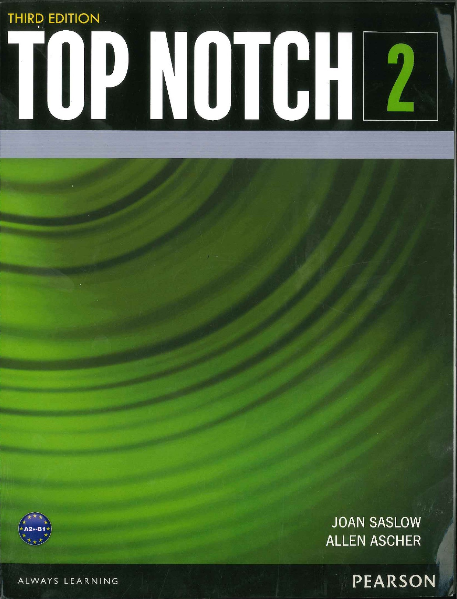
THIRD EDITION TOP NOTCH JOAN SASLOW ALLEN ASCHER ALWAYS LEARNING PEARSON
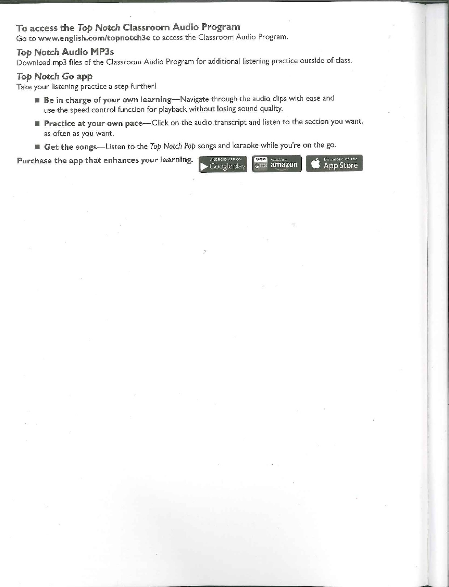
— EEE ee To access the Top Notch Classroom Audio Program Go to www.english.com/topnotch3e to access the Classroom Audio Program. Top Notch Audio MP3s Download mp3 files of the Classroom Audio Program for additional listening practice outside of class. Top Notch Go app Take your listening practice a step further! @ Be in charge of your own learning—Navigate through the audio clips with ease and use the speed control function for playback without losing sound quality. @ Practice at your own pace—Click on the audio transcript and listen to the section you want, as often as you want. & Get the songs—Listen to the Top Notch Pop songs and karaoke while you're on the go. don the Purchase the app that enhances your learning. C App Store
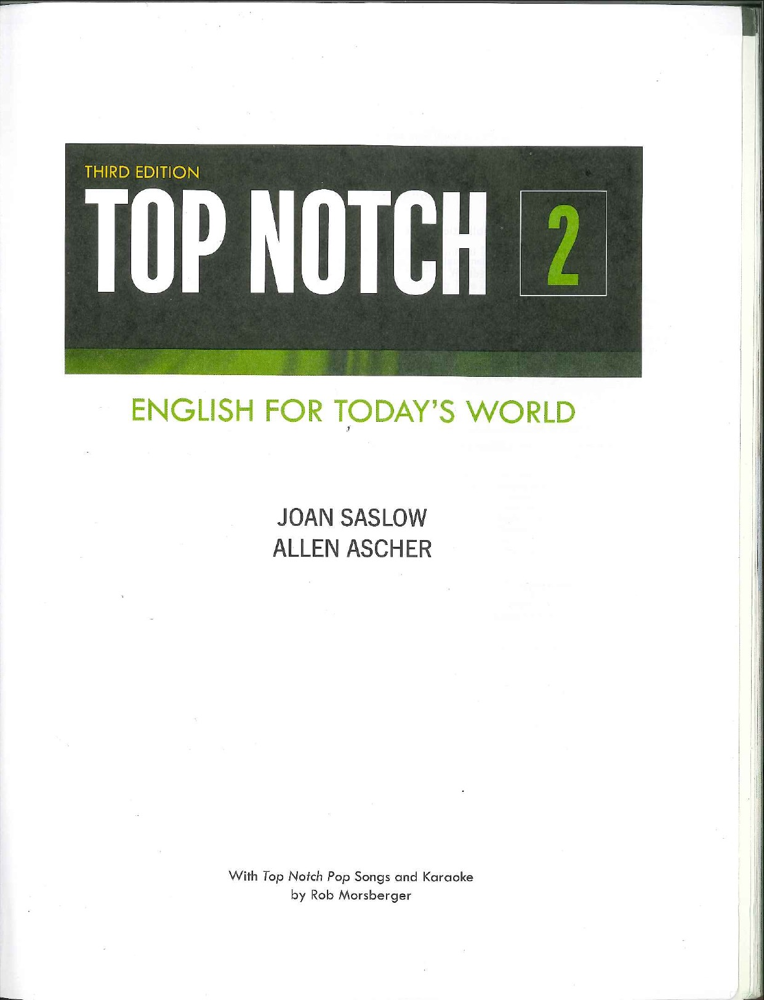
TOP NOTCH 2 ENGLISH FOR TODAY’S WORLD JOAN SASLOW ALLEN ASCHER With Top Noich Pop Songs and Karaoke by Rob Morsberger
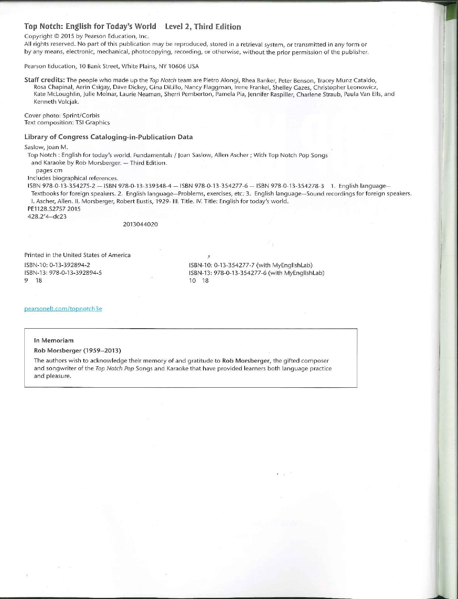
Top Notch: English for Today’s World Level 2, Third Edition Copyright © 2015 by Pearson Education, Inc. All rights reserved. No part of this publication may be reproduced, stored in a retrieval system, or transmitted in any form or by any means, electronic, mechanical, photocopying, recording, or atherwise, without the prior permission of the publisher. Pearson Education, 10 Bank Street, White Plains, NY 10606 USA Staff credits: The people who made up the Top Notch team are Pietro Alongi, Rhea Banker, Peter Benson, Tracey Munz Cataldo, Rosa Chapinal, Aerin Csigay, Dave Dickey, Gina DiLillo, Nancy Flaggman, Irene Frankel, Shelley Gazes, Christopher Leonowicz, Kate McLoughlin, Julie Moinar, Laurie Neaman, Sherri Pemberton, Pamela Pia, Jennifer Raspiller, Charlene Straub, Paula Van Ells, and Kenneth Volcjak Cover photo: Sprint/Corbis Text composition: TSI Graphics Library of Congress Cataloging-in-Publication Data Saslow, Joan M. Top Notch : English for today’s world. Fundamentals / Joan Saslow, Allen Ascher ; With Top Notch Pop Songs and Karaoke by Rob Morsberger. — Third Edition pages cm Includes biographical references. ISBN 978-0-13-354275-2 — ISBN 978-0-13-339348-4 — ISBN 978-0-13-354277-6 — ISBN 978-0-13-354278-3 1. English language— Textbooks for foreign speakers. 2, English language—Problems, exercises, etc. 3. English language—Sound recordings for foreign speakers. |. Ascher, Allen. Il. Morsberger, Robert Eustis, 1929- Il. Title. IV, Title: English for today’s world. PE1128.52757 2015 428.2'4—dc23 2013044020 Printed in the United States of America , ISBN-10: 0-13-392894-2 ISBN-10; 0-13-354277-7 (with MyEnglishLab) ISBN-13: 978-0-13-392894-5 ISBN-13: 978-0-13-354277-6 (with MyEnglishLab) 9 18 : 10 18 pearsonelt.com/topnotch3e In Memoriam Rob Morsberger (1959-2013) The authors wish to acknowledge their memory of and gratitude to Rob Morsberger, the gifted composer and songwriter of the Top Notch Pop Sangs and Karaoke that have provided learners both language practice and pleasure.
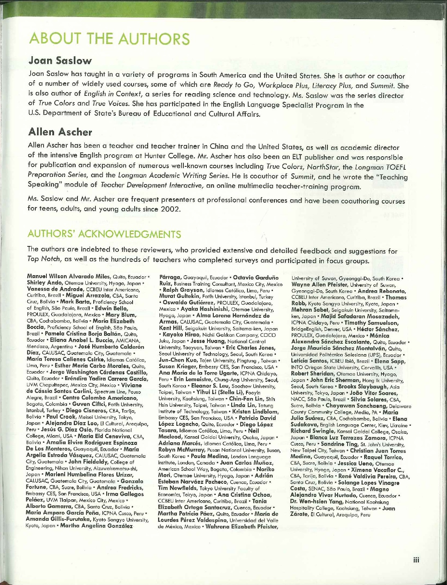
ABOUT THE AUTHORS
Joan Saslow
Joan Saslow has taught in a variety of programs in South America and the United States. She is author or coauthor
of a number of widely used courses, some of which are Ready fo Go, Workplace Plus, Literacy Plus, and Summit. She
is also author of English in Context, a series for reading science and technology. Ms. Saslow was the series director
of True Colors and True Voices. She has participated in the English Language Specialist Program in the
U.S. Department of State's Bureau of Educational and Cultural Affairs.
Allen Ascher
Allen Ascher has been a teacher and teacher trainer in China and the United States, as well as academic director
of the intensive English program at Hunter College. Mr. Ascher has also been an ELT publisher and was responsible
for publication and expansion of numerous well-known courses including True Colors, NorthStar, the Longman TOEFL
Preparation Series, and the Longman Academic Writing Series. He is coauthor of Summit, and he wrote the “Teaching
Speaking” module of Teacher Development Interactive, an online multimedia teacher-training program.
Ms. Saslow and Mr. Ascher are frequent presenters at professional conferences and have been coauthoring courses
for teens, adults, and young adults since 2002.
AUTHORS’ ACKNOWLEDGMENTS
The authors are indebted to these reviewers, who provided extensive and detailed feedback and suggestions for
Top Notch, as well as the hundreds of teachers who completed surveys and participated in focus groups.
Manvel Wilson Alvarado Miles, Quito, Ecuador *
Shirley Ando, Otemue University, Hyogo, Japan *
Vanessa de Andrade, CCBEU Inter Americano,
Curitiba, Brazil * Miguel Arrazola, CBA, Sante
Cruz, Bolivia = Mark Barta, Proficiency School
of English, Sdo Paulo, Brezil « Edwin Bello,
PROULEX, Guadalajara, Mexico Mary Blum,
CBA, Cochabamba, Bolivia * Maria Elizabeth
Boccia, Proficiency School of English, Séo Paulo,
Brazil * Pamela Cristina Borja Baltan, Quito,
Ecuador * Eliana Anabel L. Buccia, AMICANA,
Mencoza, Argentina * José Humberto Calderon
Diaz, CALUSAC, Guatemala City, Guatemala
Maria Teresa Calienes Csirke, Idiomas Catélica,
Lima, Peru » Esther Maria Carbo Morales, Quito,
Ecuador + Jorge Washington Cardenas Castillo,
Quito, Ecuador * Eréndira Yadira Care
UVM Chapultepec, Mexico City, Mexico *
de Cassia Santos Car spectrum Line, Pouso
Alegre, Brazil « Centro Colombo Americano,
Bogota, Colombia * Guven Ciftci, Fatih University,
Istanbul, Turkey * Diego Cisneros, CBA, Tarija,
Bolivia * Poul Crook, Meisei University, Tokyo,
Japan + Alejandra Diaz Loo, EI Cultural, Arequipa,
Peru * Jess G, Diaz Osio, Florida National
College, Miami, USA » Maria Eid Ceneviva, CBA,
Bolivia * Amalia Elvira Rodriguez Espinoza
De Los Monteros, Guayaquil, Ecuador « Maria
Argelia Estrada Vasquez, CALUSAC, Guatemala
City, Guotemala * John Fieldeldy, College of
Engineering, Nihon University, Aizuwakematsu-shi,
Jopan * Marleni Humbelina Flores Urizar,
CALUSAC, Guatemala City, Guatemala + Gonzalo
Fortune, CBA, Sucre, Bolivia Andrea Fredricks,
Emisassy CES, San Francisco, USA * Irma Gallegos
Peldez, UVM Tlalpan, Mexico City, Mexico *
Alberto Gamarta, CBA, Santa Cruz, Bolivia *
Maria Amparo Garcia Pefia, ICPNA Cusco, Peru *
Amanda Gillis-Furutaka, Kyoto Sangyo University,
Kyoto, Jopan + Martha Angelina Gonzélez
Prraga, Guayaquil, Ecvador * Octavio Garduiio
Ruiz, Business Training Consultant, Mexico City, Mexico
+ Ralph Grayson, idiomas Catélica, Lime, Peru *
Murat Gultekin, Fatih University, stanbul, Turkey
+ Oswaldo Gutiérrez, PROULEX, Guadelajara,
Mexico * Ayaka Hashinishi, Otemae University,
Hyogo, Jopan * Alma Lorena Hernéndez de
Armas, CALUSAC, Guatemala City, Guatemala *
Kent Hill, Seigckuin University, Saitama-ken, Japan
+ Kayoke Hirao, Nichii Gakkan Company, COCO
Juku, Japan * Jesse Huang, National Central
University, Taoyven, Taiwan * Erie Charles Jones,
‘Seoul University of Technology, Seoul, South Korea *
dun-Chen Kuo, Tajen University, Pingtung , Taiwan *
Susan Krieger, Embassy CES, San Francisco, USA *
Ana Maria de la Torre Ugarte, ICPNA Chiclayo,
Poru « Erin Lemaistre, Chung-Ang University, Seoul,
South Korea * Eleanor S. Leu, Soochow University,
Toipei, Taiwan + Yihui Li (Stella
University, Kaohsiung, Taiwen + Cl
Hsin University, Taipei, Taiwen + Linda Lin, Tetung
Institute of Technology, Taiwen * Kristen Lindblom,
Embassy CES, San Francisco, USA * Patricio David
Lépez Logacho, Quito, Ecuador * Diego Lopez
Tasara, Idiomas Catdlica, Lima, Peru * Neil
Macleod, Kansal Gcicci University, Oscka, Jopan *
Adriana Mareés, idiomas Catélica, Lima, Peru *
Robyn McMurray, Pusan National University, Busan,
South Korea * Paula Medina, London Language
Institute, London, Canada * Juan Carlos Mufioz,
Americein School Way, Bogota, Colombia + Noriko
Mori, Otemae University, Hyogo, Japan» Adrian
Esteban Narvéez Pacheco, Cuenca, Ecuador *
Tim Newfields, Tokyo University Faculty of
Economics, Teleyo, Japan + Ana Cristina Ochoa,
CCBEU Inter Americano, Curitibo, Brazil * Tania
Elizabeth Ortega Santacruz, Cuenca, Ecuador *
Martha Patricia Paez, Quito, Ecuador * Maria de
Lourdes Pérez Valdespino, Universidad del Valle
de México, Mexico * Wahrena Elizabeth Pfeister,
University of Suwon, Gyeonggi-Do, South Korea *
Wayne Allen Pfeister, University of Suwon,
Gyeonggi-De, South Keres * Andrea Rebonato,
CCBEU Inter Americano, Curitiba, Brazil Thomas
Robb, Kyoto Sangyo University, Kyoto, Japan *
Mehran Sabet, Seigakuin University, Scitama-
ken, Japan * Majid Safadaran Mosazadeh,
ICPNA Chiclayo, Peru * Timothy Samuelson,
BricgeEnglish, Denver, USA * Héctor Sénchez,
PROULEX, Guadlalajcra, Mexico * Ménica
Alexandra Sénchez Escalante, Quito, Ewador *
Jorge Mauricio Sanchez Montalvan, Quito,
Universidad Politécnica Salesiana {UPS}, Ecvacior *
Leticia Santos, ICBEU Ibid, Brazil » Elena Sapp,
INTO Oregon State University, Corvallis, USA *
Robert Sheridan, Oiemae University, Hyogo,
Japon + John Erie Sherman, Hong Ik University,
Seoul, South Korea * Brooks Slaybaugh, Asia
University, Tokyo, Japan * Jodo Vitor Soares,
NACC, Séo Paulo, Brazil « Silvia Solares, CBA,
Sucre, Bolivia * Chayawan Sonchaeng, Delaware
County Community College, Media, PA * Maria
Julia Sudrez, CBA, Cochabambe, Bolivia * Elena
Sudakova, English Language Center, Kiev, Ukraine *
Richard Swingle, Kansai Gaidei College, Oscka,
Japan + Blanca Luz Terrazas Zamora, ICPNA
Cusco, Peru * Sandrine Ting, St. John’s University,
New Taipei City, Taiwan * Christian Juan Torres
Medina, Guayaquil, Ecuador * Raquel Torrico,
CBA, Sucre, Bolivia « Jessica Ueno, Otemae
University, Hyogo, Japen * Ximena Vacaflor C.,
CBA, Tarija, Bolivia » René Valdivia Pereira, CBA,
Senta Cruz, Bolivia » Solange Lopes Vinagre
Coste, SENAC, Séo Paulo, Brazil Magno
Alejandro Vivar Hurtado, Cuenca, Ecuador «
Dr. Wen-hsien Yang, National Kaohsiung
Hospitality College, Kaohsiung, Talwan + Juan
Zarate, El Cultural, Arequipe, Peru
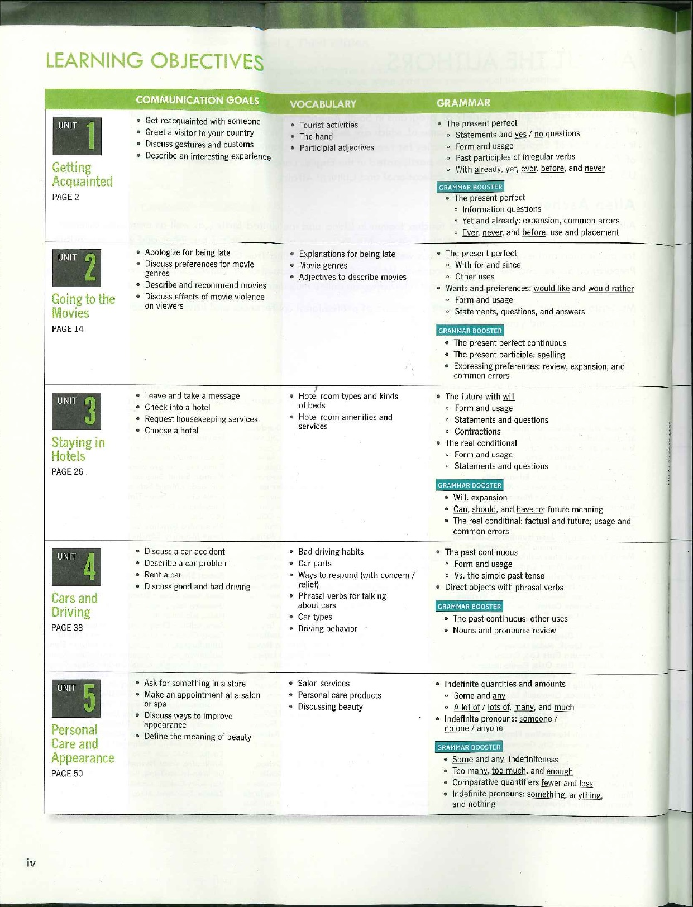
UNIT Getting Acquainted PAGE 2 COMMUNICATION GOALS LEARNING OBJECTIVES Get reacquainted with someone Greet a visitor to your country Discuss gestures and customs VOCABULARY © Tourist activities © The hand © Participial adjectives Describe an interesting experience GRAMMAR © The present perfect © Statements and yes / no questions Form and usage © Past participles of irregular verbs © With already, yet, ever, before, and never © The present perfect © Information questions ® Yet and already: expansion, common errars Ever, never, and before: use and placement Apologize for being late * Explanations for being late © The present perfect UNIT © Discuss preferences for movie © Movie genres © With for and since eee © Adjectives to describe movies © Other uses * Describe and recommend movies © Wants and preferences: would like and would rather ‘i * Discuss effects of movie violence © Form and usage Going to the arccdee ee Movies © Statements, questions, and answers PAGE 14 © The present perfect continuous ¢ The present participle: spelling © Expressing preferences: review, expansion, and common errors aE * Leave and take a message © Hotel room types and kinds © The future with will ‘ © Check into a hotel of beds © Form and usage © Request housekeeping services © Hotel room amenities and © Statements and questions © Choose a hotel Services ® Contractions Staying in © The real conditional Hotels = Form and usage CARESS © Statements and questions © Will: expansion * Can, should, and have to: future meaning © The real conditinal: factual and future; usage and | common errors ANE: * Discuss a car accident © Bad driving habits * The past continuous i 3 * Describe a car problem * Car parts © Form and usage * Renta car * Ways to respond (with concern / © Vs, the simple past tense © Discuss good and bad driving relief) © Direct objects with phrasal verbs © Phrasal verbs for talking, nie and about cars GRAMMAR BOOSTER riving © Car types © The past continuous: other uses PAGE 38 ® Driving behavior © Nouns and pronouns: review ‘ieee * Ask for something in a store * Salon services © Indefinite quantities and amounts * Make an appointment at a salon * Personal care products © Some and any cee © Discussing beauty © Alotof/ lots of, many, and much * Discuss ways to improve © Indefinite pronouns: someone / appearance one / anyone Personal © Define the meaning of beauty Care and aOOSTER Appearance ‘Some and any: indefiniteness PAGE 50 Too many, too much, and enough © Comparative quantifiers fewer and less © Indefinite pronouns: something, anything, and nothing
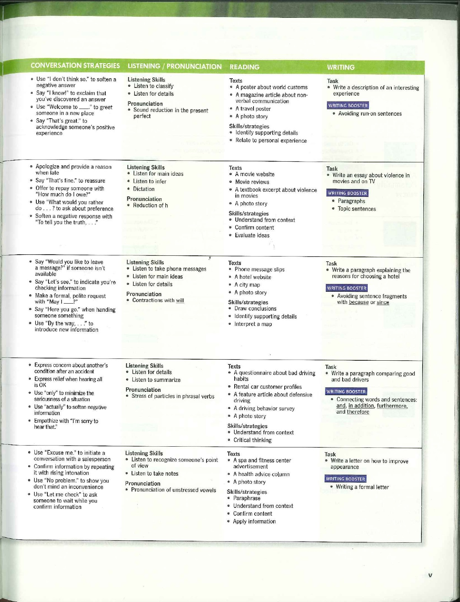
CONVERSATION STRATEGIES LISTENING / PRONUNCIATION READING WRITING ® Use “I don't think so.” to soften a negative answer * Say “I know!" to exclaim that you've discovered an answer Use “Welcome to ___." to greet someone in anew place Say “That's great.” to acknowledge someone's positive experience Listening Skills © Listen to classify © Listen for details Pronunciation * Sound reduction in the present perfect Texts * A poster about world customs © A magazine article about non- verbal communication © Atravel poster A photo story Skills/stratogies © Identify supporting details © Relate to personal experience Task © Write a description of an interesting experience ITING BOOSTER ig run-on sentences Apologize and provide a reason when late Say “That's fine.” to reassure * Offer to repay someone with “How much do | owe?” Use “What would you rather Listening Skills Listen for main ideas « Listen to infer © Dictation Pronunci. Texts © Amovie website © Movie reviews © A textbook excerpt about violence in movies © Aphoto story Task © Write an essay about violence in movies and on TY /RITING BOOSTER © Paragraphs do...?toask about preference ° ‘Reduction of h , * Topic sentences : " Skills/strategies ® Soften a negative response with or Undereon omieoniest : fesponi ‘To tell you the truth, © conimm erate © Evaluate ideas 7 * Say “Would you like to leave Listening Skills Texts Task a message?” if someone isn't available © Say ‘Let's see.” to indicate you're checking information Make a formal, polite request with “May |__2” Say “Here you go.” when handing someone something Use “By the way, ..."to introduce new information © Listen to take phone messages * Listen for main ideas © Listen for details Pronunciation © Contractions with will * Phone message slips ® Ahatel website * Acity map © A photo story Skills/strategies © Draw conclusions © Identify supporting details © Interpret a map © Write a paragraph explaining the reasons for choosing @ hotel WRITING BOOSTER * Avoiding sentence fragments with because or since Express concern about another’s condition after an accident Express relief when hearing all isOK © Use “only” to minimize the seriousness of a situation Use “actually” to soften negative information Empathize with “I'm sorry to hear that." Listening Skills © Listen for details © Listen to summarize Pronunciation ® Stress of particles in phrasal verbs Texts © A questionnaire about bad driving habits * Rental car customer profiles © A feature article about defensive driving © A driving behavior survey © Aphoto story Skills/strategies © Understand from context © Critical thinking Task © Write a paragraph comparing good and bad drivers ITING BOOSTER Connecting words and sentences: and, in addition, furthermore, and therefore © Use “Excuse me.” to initiate a conversation with a salesperson Confirm information by repeating it with rising intonation Use “No problem." to show you don't mind an inconvenience Use “Let me check” to ask someone to wait while you confirm information Listening Skills © Listen to recognize someone's point of view © Listen to take notes Pronunciation * Pronunciation of unstressed vowels. Texts * A spa and fitness center advertisement © Ahealth advice column A photo story Skills/strategies * Paraphrase * Understand from context © Confirm content © Apply information Task © Write a letter on how to improve appearance WRITING BOOSTER © Writing a formal letter
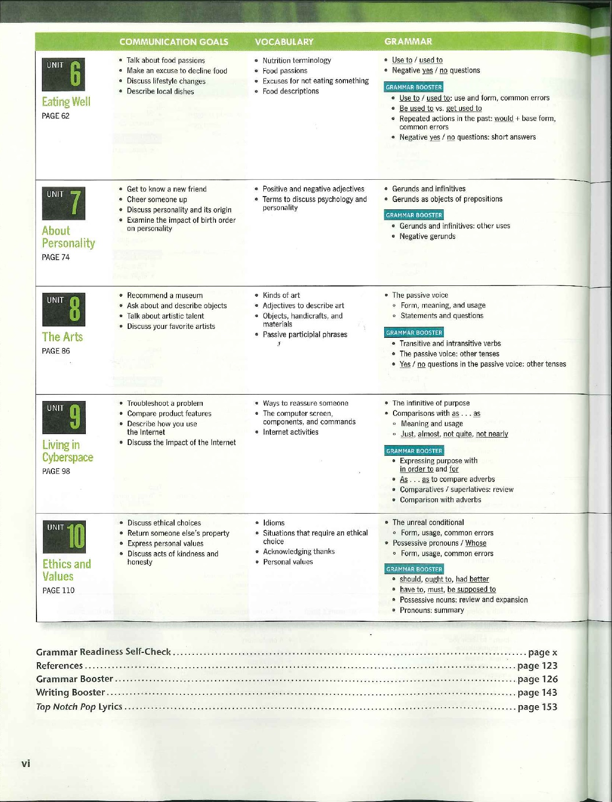
COMMUNICATION GOALS Talk about food passions Make an excuse to decline food Discuss lifestyle changes Describe local dishes Eating Well PAGE 62 VOCABULARY Nutrition terminology * Food passions © Excuses for not eating something © Food descriptions GRAMMAR © Use to / used to * Negative yes / no questions GRAM ¢ Use to / used to: use and form, common errors * Be used to vs, get used to © Repeated actions in the past: would + base form, common errors * Negative yes / no questions: short answers ISTER Get to know a new friend Cheer someone up Discuss personality and its origin Examine the impact of birth order ‘on personality UNIT About Personality PAGE 74 © Positive and negative adjectives © Terms to discuss psychology and personality * Gerunds and infinitives * Gerunds as objects of prepositions AMMAR BOOSTER © Gerunds and infinitives: other uses * Negative gerunds Recommend a museum Ask about and describe objects Talk about artistic talent Discuss your favorite artists UNIT The Arts PAGE 86 Kinds of art Adjectives to describe art Objects, handicrafts, and materials Passive participial phrases ’ » The passive voice © Form, meaning, and usage © Statements and questions GRAMMAR BOOSTER Transitive and intransitive verbs © The passive voice: other tenses # Yes / no questions in the passive voice: other tenses Troubleshoot a problem Compare product features Describe how you use the Internet Living in * Discuss the impact of the Internet ie = Ways to reassure someone The computer screen, components, and commands Internet activities © The infinitive of purpose * Comparisons with as © Meaning and usage ° Just, almost, not quite, not nearly as TER © Expressing purpose with in order to and for As... as to compare adverbs ® Comparatives / superlatives: review © Comparison with adverbs Discuss ethical choices Return someone else’s property Express personal values Discuss acts of kindness and honesty UNIT Ethics and Values PAGE 110 Idioms. Situations that require an ethical choice Acknowledging thanks Personal values © The unreal conditional © Form, usage, common errors © Possessive pronouns / Whose © Form, usage, common errors should, ought to, had better have to, must, be supposed to © Possessive nouns: review and expansion © Pronouns: summary Grammar Readiness Self-Check . . References Grammar Booster... Writing Booster... Top Notch Pop Lyrics .. -- Page x page 123 page 126 page 143 page 153
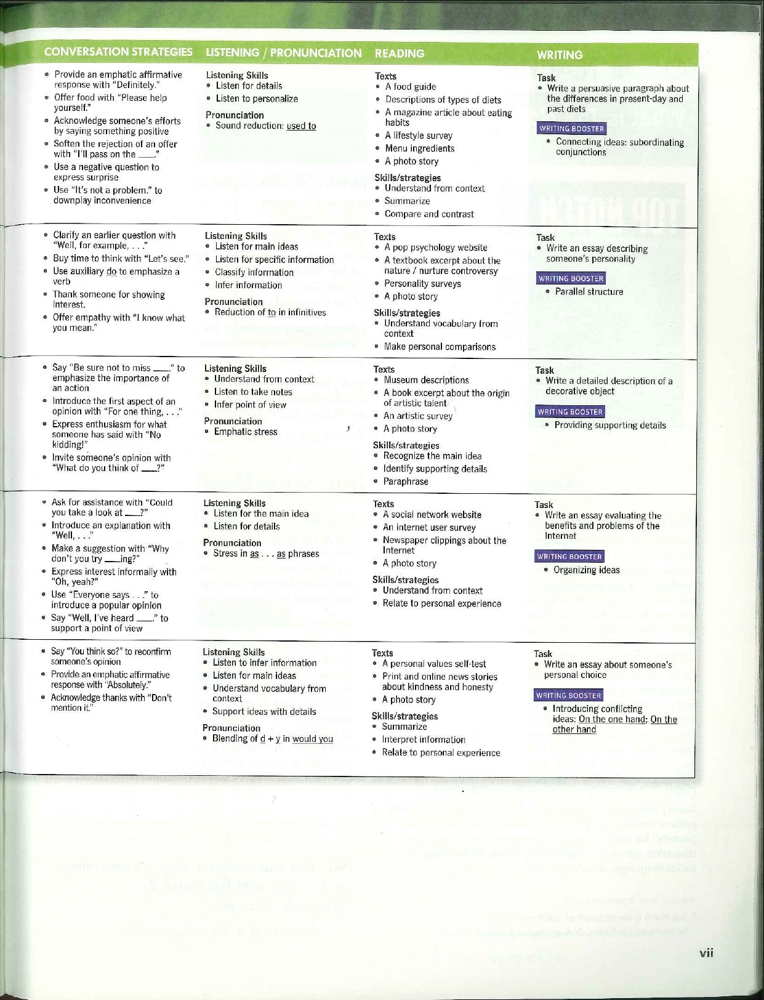
CONVERSATION STRATEGIES * Provide an emphatic affirmative response with “Definitely.” © Offer food with “Please help yourself.” Acknowledge someone's efforts by saying something positive Soften the rejection of an offer LISTENING / PRONUNCIATION Listening Skil © Listen for details * Listen to personalize Pronunciation © Sound reduction: used to READING Texts * A food guide © Descriptions of types of diets © A magazine article about eating habits © Alifestyle survey WRITING Task © Write a persuasive paragraph about the differences in present-day and past diets TING BOOSTER * Connecting ideas: subordinating n r Menu ingredients conjunctions with "ll pass on the © Aphato story © Use a negative question to : 7 express surprise Skills/strategies © Use “It’s not a problem?" to © Understand from context downplay inconvenience © Summarize + Compare and contrast ° Clarify an earlier question with Listening Skills Texts Task “Well, for example, . ..” Buy time to think with “Let's see.” Use auxiliary do to emphasize a ver ‘Thank someone for showing interest. Offer empathy with “I know what you mean.” Listen for main ideas © Listen for specific information © Classify information © Infer information Pronunciation ® Reduction of to in infinitives * A pop psychology website * A textbook excerpt about the nature / nurture controversy © Personality surveys * Aphoto story Skills/strategies ® Understand vocabulary from context * Make personal comparisons * Write an essay describing someone's personality w ISTER © Parallel structure Say "Be sure not to miss _.” to emphasize the importance of an action Introduce the first aspect of an opinion with “For one thing, Express enthusiasm for what someone has said with “No kidding!” Invite someone's opinion with “What do you think of _?” Listening Skills © Understand from context © Listen to take notes © Infer point of view Pronunciation * Emphatic stress Texts * Museum descriptions * A book excerpt about the origin of artistic talent @ Anartistic survey * Aphoto story Skills/strategies © Recognize the main idea © Identify supporting details © Paraphrase Task © Write a detailed description of a decorative object ® Providing supporting details © Ask for assistance with * you take a look at __?” Introduce an explanation with “Well, ..." Listening Skills * Listen for the main idea ® Listen for details Texts © Asocial network website © An internet user survey © Newspaper clippings about the Task « Write an essay evaluating the benefits and problems of the Internet . Make a suggestion with “Why Prey inetion eae pliteses Internet ion’t you try ing?" eres # Aphoto story © Express interest informally with Skils/stratogios © Organizing ideas . tee Poe says..." to * Understand from context introduce a popular opinion © Relate to personal experience © Say “Well, I've heard __.” to support a point of view © Say “You think so?” to reconfirm Listening Skills Texts Task someone's opinion Provide an emphatic affirmative response with “Absolutely.” Acknowledge thanks with “Don't mention it!” * Listen to infer information * Listen for main ideas ® Understand vocabulary from context, © Support ideas with details Pronunciation ® Blending of d+ in would you * A personal values self-test * Print and online news stories about kindness and honesty * A photo story Skills/strategies © Summarize © Interpret information « Relate to personal experience © Write an essay about someone's personal choice WRITIN TE ® Introducing conflicting ideas: On the one hand; other hand vii
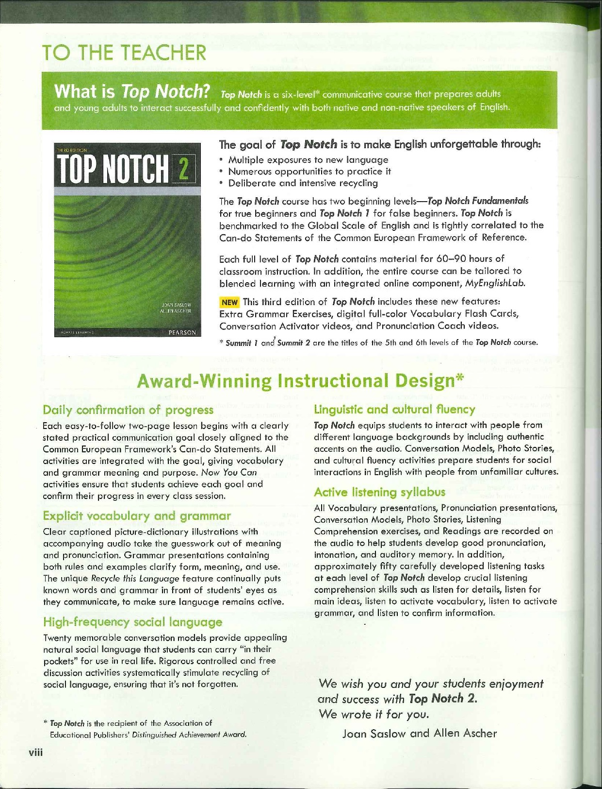
TO THE TEACHER What is Top Notch? and young adults to interact succe: Top Notch is a svel* communicative urse that prepares adults sfully and confidently with both native and non-native speakers of English. viii TOP NOTCH 2 PEARSON The goal of Top Noich is to make English unforgettable through: * Multiple exposures to new language ° Numerous opportunities to practice it ° Deliberate and intensive recycling The Top Nofch course has two beginning levels—fop Nofch Fundamentals for true beginners and Top Notch T for false beginners. Top Nofch is benchmarked fo the Global Scale of English and is tightly correlated to the Can-do Statements of the Common European Framework of Reference. Each full level of Top Notch contains material for 60-90 hours of classroom instruction. In addition, the entire course can be tailored to blended learning with an integrated online component, MyEnglishLab. NEW This third edition of Top Nofch includes these new features: Extra Grammar Exercises, digital full-color Vocabulary Flash Cards, Conversation Activator videos, and Pronunciation Coach videos. * Summit 1 and Summit 2 are the titles of the Sth and 6th levels of the Top Nofch course. Award-Winning Instructional Design* Daily confirmation of progress Each easy-to-follow two-page lesson begins with a clearly stated practical communication goal closely aligned to the Common European Framework's Can-do Statements. All activities are integrated with the goal, giving vocabulary and grammar meaning and purpose. Now You Can activities ensure that students achieve each goal and confirm their progress in every class session. Explicit vocabulary and grammar Clear captioned picture-dictionary illustrations with accompanying audio take the guesswork out of meaning and pronunciation. Grammar presentations containing both rules and examples clarify form, meaning, and use. The unique Recycle this Language feature continually puts known words and grammar in front of students’ eyes as they communicate, to make sure language remains active. High-frequency social language Twenty memorable conversation models provide appealing natural social language that students can carry “in their pockets” for use in real life. Rigorous controlled and free discussion activities systematically stimulate recycling of social language, ensuring that it’s not forgotten. * Top Notch is the recipient of the Association of Educational Publishers’ Distinguished Achievement Award. Linguistic and cultural fluency Top Notch equips stuclents to interact with people from different language backgrounds by including authentic accents on the audio. Conversation Models, Photo Stories, and cultural fluency activities prepare students for social interactions in English with people from unfamiliar cultures. Active listening syllabus All Vocabulary presentations, Pronunciation presentations, Conversation Models, Photo Stories, Listening Comprehension exercises, and Readings are recorded on the audio to help students develop good pronunciation, intonation, and auditory memory. In addition, approximately fifty carefully developed listening tasks at each level of Top Notch develop crucial listening comprehension skills such as listen for details, listen for main ideas, listen to activate vocabulary, listen to activate grammer, and listen to confirm information. We wish you and your students enjoyment and success with Top Notch 2. We wrote it for you. Joan Saslow and Allen Ascher
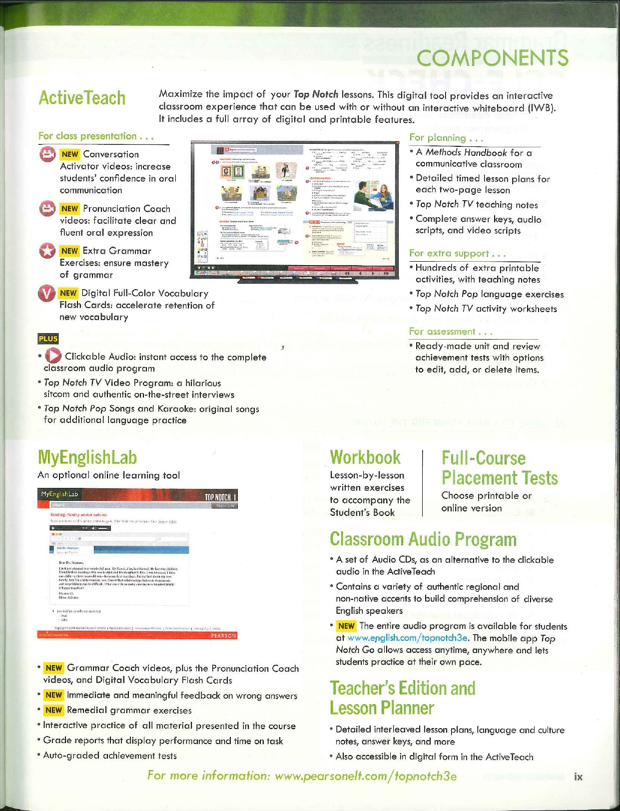
ActiveTeach COMPONENTS Maximize the impact of your Top Notch lessons. This digital tool provides an interactive classroom experience that can be used with or without an interactive whiteboard (IWB). It includes a full array of digital and printable features. For class presentation... For planning... (©) INBW Conversation Activator videos: increase students’ confidence in oral communication ©) NEW Pronunciation Coach videos: facilitate clear and fluent oral expression Oe) (NEW Extra Grammar Exercises: ensure mastery of grammar “NEW Digital Full-Color Vocabulary Flash Cards: accelerate retention of new vocabulary * © Clickable Audio: instant access to the complete classroom audio program * Top Notch TV Video Program: a hilarious sitcom and authentic on-the-street interviews y * Top Notch Pop Songs and Karaoke: original songs for additional language practice MyEnglishLab An optional online learning tool * NEW Grammar Coach videos, plus the Pronunciation Coach videos, and Digital Vocabulary Flash Cards * |NEW Immediate and meaningful feedback on wrong answers * [NEW Remedial grammar exercises * Interactive practice of all material presented in the course * Grade reports that display performance and time on task ° Auto-graded achievement tests For more information: www.pearsonelt.com/topnotch3e * A Methods Handbook for a communicative classroom * Detailed timed lesson plans for each two-page lesson * Top Notch TV teaching notes * Complete answer keys, audio scripts, and video scripts For extra support... * Hundreds of extra printable activities, with teaching notes * Top Notch Pop language exercises * Top Notch TV activity worksheets For assessment... * Ready-made unit and review achievement tests with options to edit, add, or delete items. Workbook Lesson-by-lesson written exercises to accompany the Student's Book Full-Course Placement Tests Choose printable or online version Classroom Audio Program * A set of Audio CDs, as an alternative to the clickable audio in the ActiveTeach * Contains « variety of authentic regional and non-native accents to build comprehension of diverse English speakers * |NEW The entire audio program is available for stuclents ‘at www.english.com/topnotch3e, The mobile app Top Noich Go allows access anytime, anywhere and lets students practice at their own pace. Teacher’s Edition and Lesson Planner * Detailed interleaved lesson plans, language and culture notes, answer keys, and more * Also accessible in digital form in the ActiveTeach
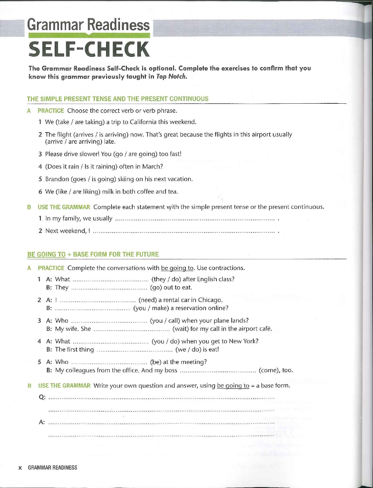
Grammar Readiness -SELF-CHECK The Grammar Readiness Self-Check is optional. Complete the exercises fo confirm that you know this grammar previously taught in Top Notch. THE SIMPLE PRESENT TENSE AND THE PRESENT CONTINUOUS A PRACTICE Choose the correct verb or verb phrase. 1 We (take / are taking) a trip to California this weekend. 2 The flight (arrives / is arriving) now. That’s great because the flights in this airport usually (arrive / are arriving) late. 3 Please drive slower! You (go / are going) too fast! 4 (Does it rain / Is it raining) often in March? 5 Brandon (goes / is going) skiing on his next vacation. 6 We (like / are liking) milk in both coffee and tea. B USE THE GRAMMAR Complete each statement with the simple present tense or the present continuous. 1. In my family, we usually 2 Next weekend, | BE GOING TO + BASE FORM FOR THE FUTURE A PRACTICE Complete the conversations with be going to. Use contractions. TA B: .. (they / do) after English class? (go) out to eat. 2 .. (need) a rental car in Chicago. B: (you / make) a reservation online? 3A .. (you / call) when your plane lands? B: .. (wait) for my call in the airport café. 4 A: What (you / do) when you get to New York? B: The first thing . (we / do) is eat! BB: WH vcssiceosccsenemnusesvesvinrennrsrees (be) at the meeting? B: My colleagues from the office. And my boss ..........ccccecseeseeeteeesereeees (come), too. 8B USE THE GRAMMAR Write your own question and answer, using be going to +a base form. x GRAMMAR READINESS
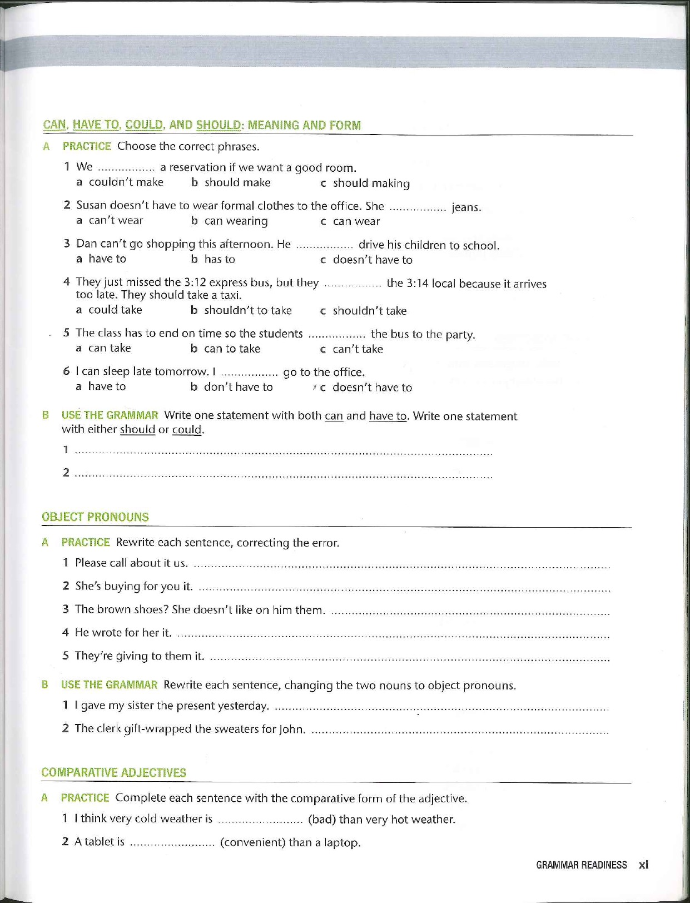
CAN, HAVE TO, COULD, AND SHOULD: MEANING AND FORM A PRACTICE Choose the correct phrases. 1 We .. a reservation if we want a good room. a couldn’t make b should make ¢ should making 2 Susan doesn’t have to wear formal clothes to the office. She... jeans. a can’t wear b can wearing ¢ can wear 3 Dan can’t go shopping this afternoon. He ........ su drive his children to school. a have to b has to ¢ doesn’t have to 4 They just missed the 3:12 express bus, but they ...... .. the 3:14 local because it arrives too late. They should take a taxi. a could take b shouldn’t to take ¢ shouldn’t take 5 The class has to end on time so the students ............0.4. the bus to the party. a can take b can to take ¢ can’t take 6 I can sleep late tomorrow. | . go to the office. a have to b don’t have to 1¢ doesn’t have to 8 USE THE GRAMMAR Write one statement with both can and have to. Write one statement with either should or could. OBJECT PRONOUNS A PRACTICE Rewrite each sentence, correcting the error. 1 Please call about it us. .. 2 She's buying for you it. .. 3 The brown shoes? She doesn’t like on him them. .......ceeeee 4 He wrote for her it. 0.0.0.2... 5 They’re giving to them it. 0.0.0.0... 8 USE THE GRAMMAR Rewrite each sentence, changing the two nouns to object pronouns. 1 I gave my sister the present yesterday. .......cccceee 2 The clerk gift-wrapped the sweaters for JOAN. ...cccsscsseseeecseeseseseeesteessessenteeseneees COMPARATIVE ADJECTIVES A PRACTICE Complete each sentence with the comparative form of the adjective. 1 I think very cold weather is ........... (bad) than very hot weather. 2 A tablet is .... (convenient) than a laptop. GRAMMAR READINESS xi
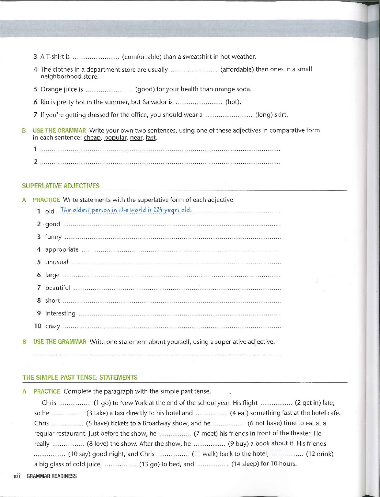
xii BD ATASRIPLS: siscccoesssccnecevessee (comfortable) than a sweatshirt in hot weather. 4 The clothes in a department store are usually .......:0:::cceeeee (affordable) than ones in a small neighborhood store. 5 OTANGE [UIGE IS: cccassmvevaeenns (good) for your health than orange soda. 6 Rio is pretty hot in the summer, but Salvador is «0.0.0.0... (hot). 7 If you’re getting dressed for the office, you should wear a (long) skirt. 8 USE THE GRAMMAR Write your own two sentences, using one of these adjectives in comparative form in each sentence: cheap, popular, near, fast. SUPERLATIVE ADJECTIVES A PRACTICE Write statements with the superlative form of each adjective. 1 APPTOPNAbe svescsscewceevrsamecrwscmmennsmcmecvsusTs unusual “ aii wana oe re won sposvsccareneetemweunuesaest beautiful short .... 2 3 4 5 GB large wcvcaeances aac sinendee sisi cismNnnEN Ro TERE AIeROT Ara a Nata Aoe ERE ERERRERER 7 8 9 10 THE SIMPLE PAST TENSE: STATEMENTS A PRACTICE Complete the paragraph with the simple past tense. Chris (1 go) to New York at the end of the school year. His flight . (2 get in) late, so he .... (3 take) a taxi directly to his hotel and ...... (4 eat) something fast at the hotel café. CHTIS occ (5 have) tickets to a Broadway show, and he .... .... (6 not have) time to eat at a regular restaurant. Just before the show, he ................. (7 meet) his friends in front of the theater. He really (8 love) the show. After the show, he ... (9 buy) a book about it. His friends .. (10 say) good night, and Chris ........... (11 walk) back to the hotel, «00.0.0... (12 drink) a big glass of cold juice, 0.0... (13 go}torbed) anid wiaisccsevccsssse (14 sleep) for 10 hours. GRAMMAR READINESS
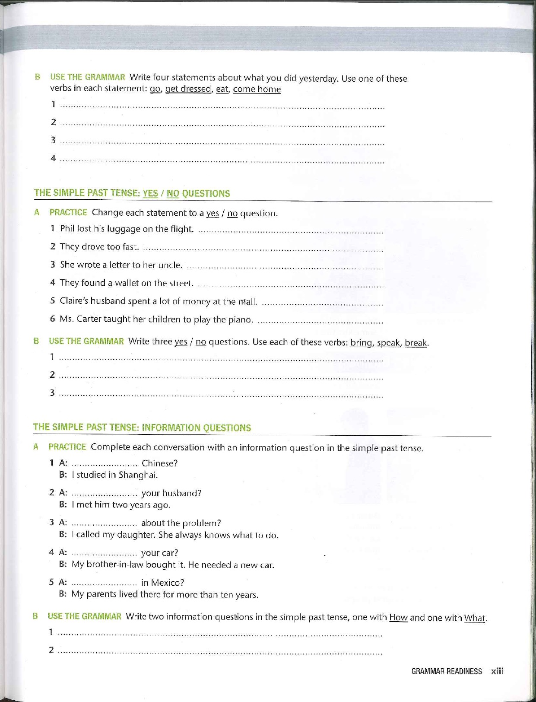
8 USE THE GRAMMAR Write four statements about what you did yesterday. Use one of these verbs in each statement: go, get dressed, eat, come home THE SIMPLE PAST TENSE: YES / NO QUESTIONS A PRACTICE Change each statement to a yes / no question. 1 Phil lost his luggage on the flight. ............ 2 They drove too fast. 20.0.0... 3 She wrote a letter to her uncle. o.oo... eee ees ceseeeeeeeestteneaesseeteneee 4 They found a wallet on the street. ...... 5 Claire’s husband spent a lot of money at the miall. ............ 6 Ms. Carter taught her children to play the piano, 8 USE THE GRAMMAR Write three yes / no questions. Use each of these verbs: bring, speak, break. THE SIMPLE PAST TENSE: INFORMATION QUESTIONS A PRACTICE Complete each conversation with an information question in the simple past tense. TA. Chinese? B: | ‘studied i in Shanghai. 2) AE sxcisucormecmsesensazns your husband? B: | met him two years ago. 3 A about the problem? B: | called my daughter. She always knows what to do. 4A: -. your car? B: My brother-in-law bought it. He needed a new car. 5A . in Mexico? B: My parents lived there for more than ten years. B USE THE GRAMMAR Write two information questions in the simple past tense, one with How and one with What. GRAMMAR READINESS — xiii
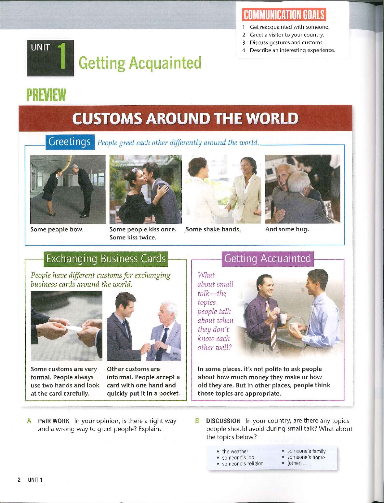
Some people bow. Some people kiss once. Some kiss twice. Some shake hands. And some hug. COMMUNICATION GOALS Get reacquainted with someone. Greet a visitor to your country. Discuss gestures and customs. Describe an interesting experience. RwWN Exchanging Business Cards People have different customs for exchanging business cards around the world. Some customs are very Other customs are formal. People always informal. People accept a use two hands and look — card with one hand and at the card carefully. quickly put it in a pocket. What about small talk—the topics people talk about when they don't know each other well? In some places, it’s not polite to ask people about how much money they make or how old they are. But in other places, people think those topics are appropriate. A PAIR WORK In your opinion, is there a right way and a wrong way to greet people? Explain. 2 UNITI B DISCUSSION In your country, are there any topics people should avoid during small talk? What about the topics below? © the weather * sameone’s family * someone's job © someone's home © someone's religion @ (other) __
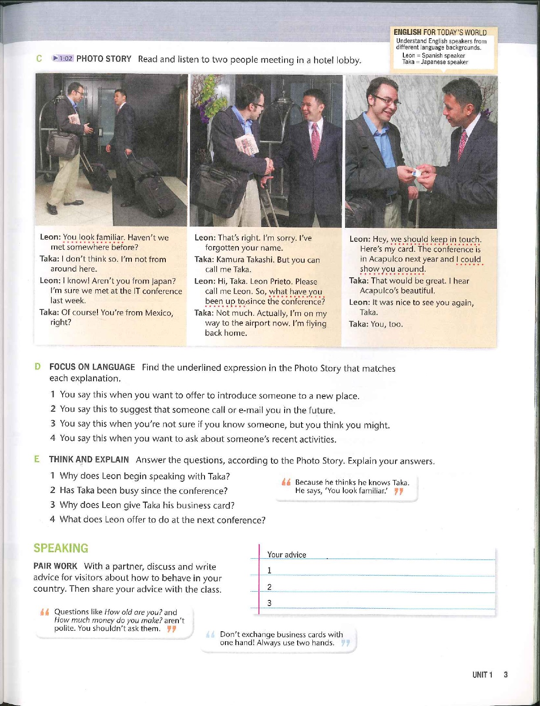
ENGLISH FOR TODAY'S WORLD Understand English speakers from different language backgrounds. Leon = Spanish speaker © 1:02, PHOTO STORY Read and listen to two people meeting in a hotel lobby. Taka = Japanese speaker ar, Leon: That's right. I’m sorry. I’ve Leon: Hey, we should keep in touch. met somewhere before? forgotten your name. Here’s my card. The conference is Taka: | don’t think so. I’m not from Taka: Kamura Takashi. But you can in Acapulco next year and | could | around here. call me Taka. show you around. Leon: | know! Aren’t you from Japan? —_Leon: Hi, Taka. Leon Prieto. Please Taka: That would be great. | hear I’m sure we met at the IT conference call me Leon. So, what have you. Acapulco’s beautiful. last week. been up toxsince the conference? Leon: It was nice to see you again, Taka: Of course! You’re from Mexico, Taka: Not much. Actually, I’m on my Taka. right? way to the airport now. I’m flying Taka: You, too. back home. D FOCUS ON LANGUAGE Find the underlined expression in the Photo Story that matches each explanation. 1 You say this when you want to offer to introduce someone to a new place. 2 You say this to suggest that someone call or e-mail you in the future. 3 You say this when you're not sure if you know someone, but you think you might. 4 You say this when you want to ask about someone’s recent activities. — THINK AND EXPLAIN Answer the questions, according to the Photo Story. Explain your answers. 1 Why does Leon begin speaking with Taka? 46 Because he thinks he knows Taka. 2 Has Taka been busy since the conference? He says, ‘You look familiar’ Py 3 Why does Leon give Taka his business card? 4 What does Leon offer to do at the next conference? SPEAKING — | Your advice PAIR WORK With a partner, discuss and write 1 advice for visitors about how to behave in your Oe country. Then share your advice with the class. —|.2 —— £6 Questions like How old are you? and How much money do you make? aren't Polite. You shouldn’t ask them. 9¥ Don’t exchange business cards with one hand! Always use two hands. UNIT 1
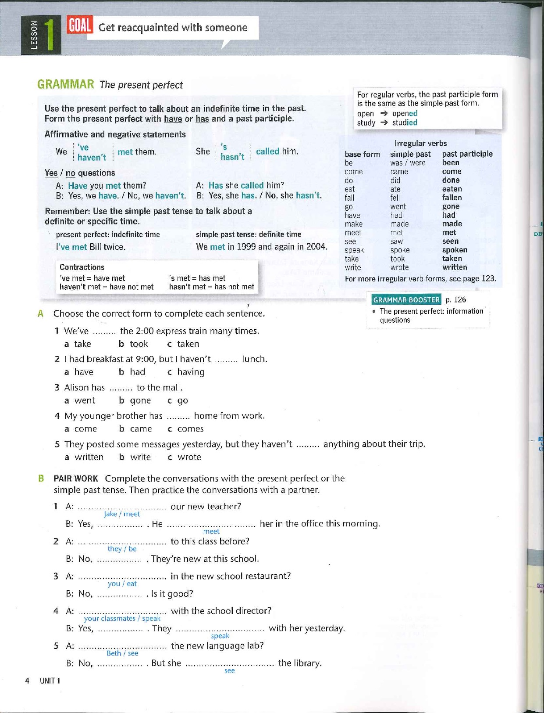
4 LESSON ‘COAL Get reacquainted with someone GRAMMAR The present perfect Use the present perfect to talk about an indefinite time in the past. Form the present perfect with have or has and a past participle. Affirmative and negative statements We | ve » | met them. She § called him. haven't : hasn’t Yes / no questions A: Have you met them? A: Has she called him? B: Yes, we have. / No, we haven't. B: Yes, she has. / No, she hasn't. Remember: Use the simple past tense to talk about a definite or specific time. present perfect: indefinite time simple past tense: definite time I've met Bill twice. We met in 1999 and again in 2004, Contractions "ve met = have met 's met = has met haven't met = have not met —_—shasn’t met = has not met 1 A Choose the correct form to complete each sentence. questions 1 We've ......... the 2:00 express train many times. a a take b took ¢ taken 2 I had breakfast at 9:00, but | haven’t lunch. a have b had ¢ having 3 Alison has ......... to the mall. a went b gone c¢ go 4 My younger brother has ......... home from work. a come b came c comes 5 They posted some messages yesterday, but they haven’t ......... anything about their trip. 4 a written b write ¢ wrote B PAIRWORK Complete the conversations with the present perfect or the simple past tense. Then practice the conversations with a partner. TAD <- Or New teacher? Jake / meet B: Yes, . her in the office this morning. 2A. ae to this class before? Bi NG: exsespensssesns . They’re new at this school. 3A . in the new school restaurant? B: No, wees . ls it good? 4A with the school director? B: with her yesterday. SA B: the library. UNIT 1 For regular verbs, the past participle form is the same as the simple past form. open > opened | study % studied Irregular verbs base form simple past _ past participle be was / were been come came come do. did done eat ate eaten fall fell fallen go went gone have had had make made made meet met met a see saw seen speak spoke spoken take took taken write wrote written For more irregular verb forms, see page 123. GRAMMAR BOOSTER Meet) © The present perfect: information
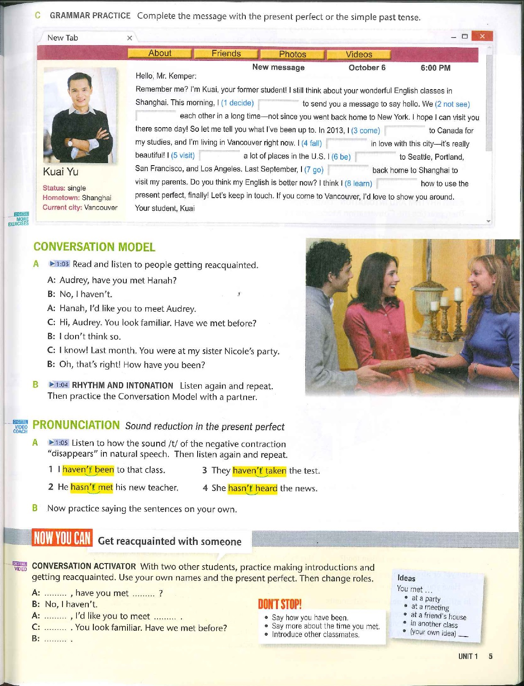
© GRAMMAR PRACTICE Complete the message with the present perfect or the simple past tense. New Tab x =8 Lx New message October 6 6:00 PM | Hello, Mr. Kemper: Remember me? I'm Kuai, your former student! | still think about your wonderful English classes in Shanghai. This morning, | (1 decide) to send you a message to say hello. We (2 not see) | each other in a long time—not since you went back home to New York. | hope I can visit you | there some day! So let me tell you what I've been up to. In 2013, I (3 come) to Canada for my studies, and I’m living in Vancouver right now. | (4 fall) in love with this city—it's really \ beautiful! | (5 visit) a lot of places in the U.S. | (6 be) to Seattle, Portland, Kuai Yu San Francisco, and Los Angeles. Last September, | (7 go) back home to Shanghai to aaa f visit my parents. Do you think my English is better now? | think | (8 learn) how to use the tus: single . . Hometown: Shanghai present perfect, finally! Let's keep in touch. If you come to Vancouver, I'd love to show you around. Current city: Vancouver Your student, Kuai ony MORE BreRseS CONVERSATION MODEL ‘A b:03 Read and listen to people getting reacquainted. A: Audrey, have you met Hanah? B: No, | haven’t. r A: Hanah, I’d like you to meet Audrey. C: Hi, Audrey. You look familiar. Have we met before? B: I don’t think so. ¢: [ know! Last month. You were at my sister Nicole’s party. B: Oh, that’s right! How have you been? B Lod RHYTHM AND INTONATION Listen again and repeat. Then practice the Conversation Model with a partner. } PRONUNCIATION Sound reduction in the present perfect A 1:05 Listen to how the sound /t/ of the negative contraction “disappears” in natural speech. Then listen again and repeat. 1 | haven’ been to that class. 3 They haven’ taken the test. 2 He hasn't met his new teacher. 4 She hasn’t heard the news. B_ Now practice saying the sentences on your own. ie = ‘NOW YOU CAN| Get reacquainted with someone ‘GE® CONVERSATION ACTIVATOR With two other students, practice making introductions and getting reacquainted. Use your own names and the present perfect. Then change roles. Ideas | A: have you met z veut a NES Se Eek ee nCinee 5 * ata party ' B: No, | haven’t. DON'T STOP! ® ata meeting | A , I'd like you to meet ......... h Say how you have been, 7 ort idee li ? © Say more about the time you met, ler class, | : - You look familiar. Have we met before? 5 Introduge'othar elasennatee ° (your own iea) UNIT1 5
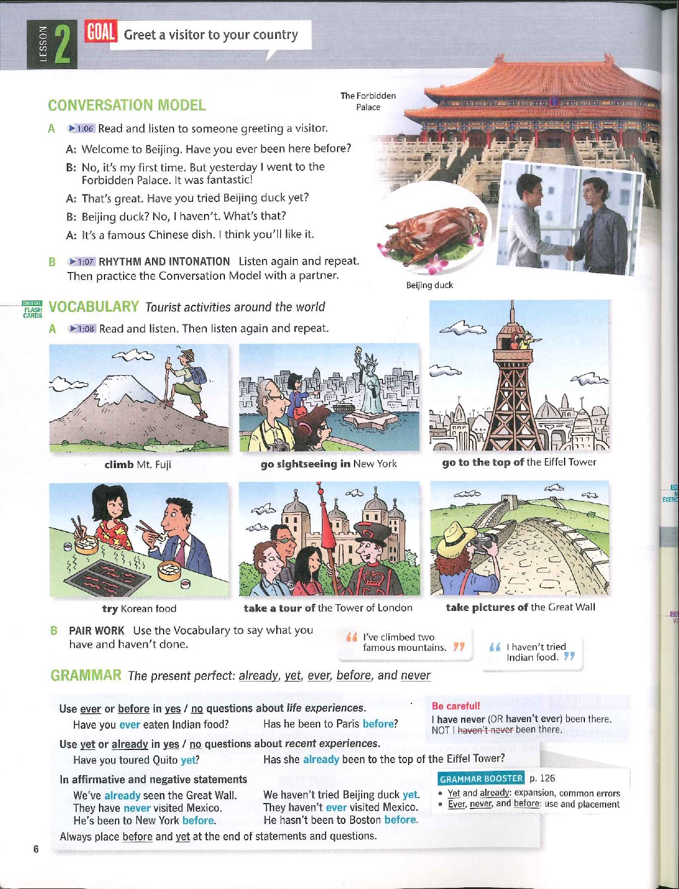
Greet a visitor to your country The Forbidden CONVERSATION MODEL Palace A 1106 Read and listen to someone greeting a visitor. A: Welcome to Beijing. Have you ever been here before? B: No, it’s my first time. But yesterday | went to the Forbidden Palace. It was fantastic! A: That’s great. Have you tried Beijing duck yet? : Beijing duck? No, | haven’t. What's that? A: It’s a famous Chinese dish. | think you’ll like it. co 8B 107 RHYTHM AND INTONATION Listen again and repeat. Then practice the Conversation Model with a partner. Beijing duck VOCABULARY Tourist activities around the world A 9708) Read and listen. Then listen again and repeat. try Korean food take a tour of the Tower of London take pictures of the Great Wall B PAIRWORK Use the Vocabulary to say what you 44 ve climbed two have and haven’t done. famous mountains. 77 4 | haven’ttried Indian food. 77 GRAMMAR The present perfect: already, yet, ever, before, and never Use ever or before in yes / no questions about life experiences. Be careful! | | have never (OR haven’t ever) been there. | f 3 js 2 Have you ever eaten Indian food? Has he been to Paris before? NOT I haven't never been there. Use yet or already in yes / no questions about recent experiences. | Have you toured Quito yet? Has she already been to the top of the Eiffel Tower? p. 126 In affirmative and negative statements We've already seen the Great Wall. We haven't tried Beijing duck yet. * Yet and already: expansion, common errors They have never visited Mexico. They haven't ever visited Mexico. ° Ever never, and before: use and placement He’s been to New York before. He hasn’t been to Boston before. Always place before and yet at the end of statements and questions.
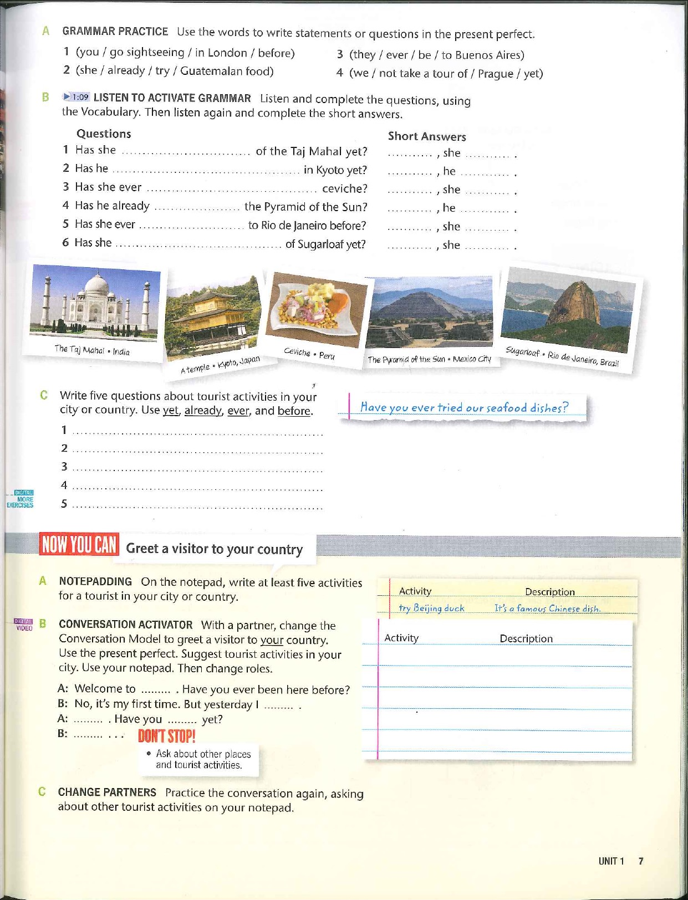
A GRAMMAR PRACTICE Use the words to write statements or questions in the present perfect. 1 (you / go sightseeing / in London / before) 3 (they / ever / be / to Buenos Aires) 2 (she / already / try / Guatemalan food) 4 (we / not take a tour of / Prague / yet) | 5 mt09 LISTEN TO ACTIVATE GRAMMAR Listen and complete the questions, using the Vocabulary. Then listen again and complete the short answers. Questions Short Answers 1 Has she ............ . of the Taj Mahal yet? ..........., she 2 Hashe .......... in Kyoto yet? wy he 3 Has she ever ... vec eeevenes ceviche? ., she | 4 Has he already .......... the Pyramid of the Sun? »he 5 Has she ever ...... voveeeeeees to Rio de Janeiro before? ..... , she . } G Has she cx. ssevoues: sapazee . -s....... Of Sugarloaf yet? estes y SHE Celiche . Sugarioat « neg 3208 "e+ Peary The Pari of the Sun + Mexico Cty Rio de Janeiro, gras prem ’ © Write five questions about tourist activities in your city or country. Use yet, already, ever, and before. | Have yeu ever tried eur seafood dishes? 1 DE sc 3.. | ms 5. Ee : | NOW YOU CAN) Greet a visitor to your country A NOTEPADDING On the notepad, write at least five activities for a tourist in your city or country. ____Description sa famous Chinese dish. "i 8 CONVERSATION ACTIVATOR With a partner, change the Conversation Model to greet a visitor to your country. Use the present perfect. Suggest tourist activities in your city. Use your notepad. Then change roles. Description A: Welcome to ... . Have you ever been here before? B: No, it's my first time. But yesterday | ......... 7 — . Have you ......... yet? DONT STOP! a a Ask about other places and tourist activities. © CHANGE PARTNERS Practice the conversation again, asking about other tourist activities on your notepad.
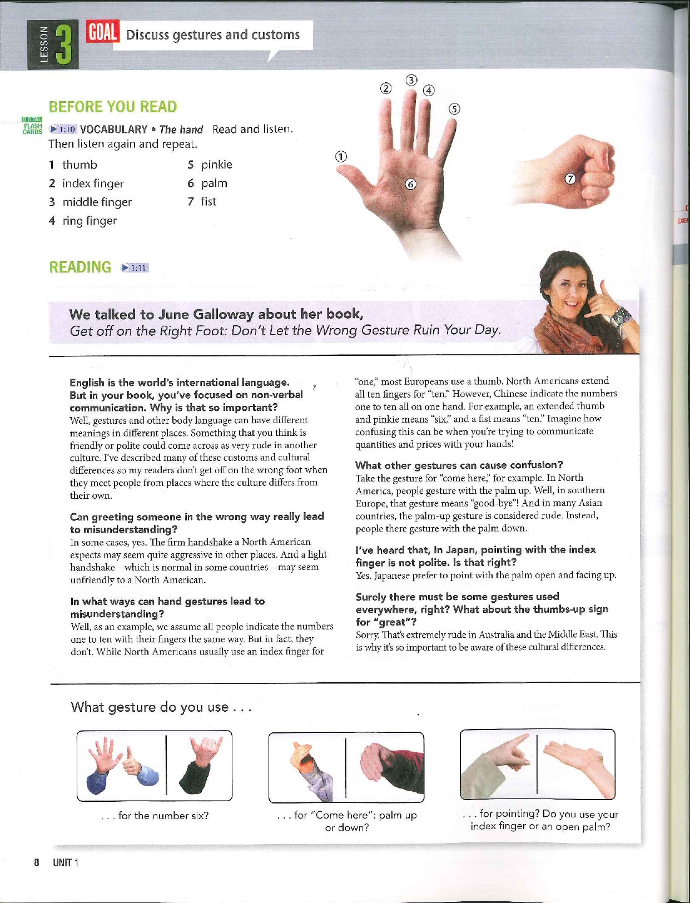
LESSON BEFORE YOU READ Gxtas P10 VOCABULARY ¢ The hand Read and listen. Then listen again and repeat. 1 thumb 5 pinkie 2 index finger 6 palm 3 middle finger 7 fist 4 ring finger READING waa GOAL Discuss gestures and customs We talked to June Galloway about her book, Get off on the Right Foot: Don’t Let the Wrong Gesture Ruin Your Day. 8 English is the world’s international language. ' But in your book, you've focused on non-verbal communication. Why is that so important? ‘Well, gestures and other body language can have different meanings in different places. Something that you think is friendly or polite could come across as very rude in another culture. I've described many of these customs and cultural differences so my readers don't get off on the wrong foot when they meet people from places where the culture differs from their own. Can greeting someone in the wrong way really lead to misunderstanding? In some cases, yes. The firm handshake a North American expects may seem quite aggressive in other places. And a light handshake—which is normal in some countries—may seem unfriendly to a North American. In what ways can hand gestures lead to misunderstanding? Well, as an example, we assume all people indicate the numbers one to ten with their fingers the same way. But in fact, they don’t. While North Americans usually use an index finger for “one? most Europeans use a thumb. North Americans extend all ten fingers for “ten.” However, Chinese indicate the numbers one to ten all on one hand. For example, an extended thumb and pinkie means “six.” and a fist means “ten.” Imagine how confusing this can be when you're trying to communicate quantities and prices with your hands! What other gestures can cause confusion? Take the gesture for “come here.’ for example. In North America, people gesture with the palm up. Well, in southern Europe, that gesture means “good-bye”! And in many Asian countries, the palm-up gesture is considered rude. Instead, people there gesture with the palm down. ve heard that, in Japan, pointing with the index finger is not polite. Is that right? Yes. Japanese prefer to point with the palm open and facing up. Surely there must be some gestures used everywhere, right? What about the thumbs-up sign for “great? Sorry. That’s extremely rude in Australia and the Middle East. This is why it’s so important to be aware of these cultural differences, What gesture do you use... .. for the number six? UNIT 1 . for “Come here”: palm up or down? _.. for pointing? Do you use your index finger or an open palm?
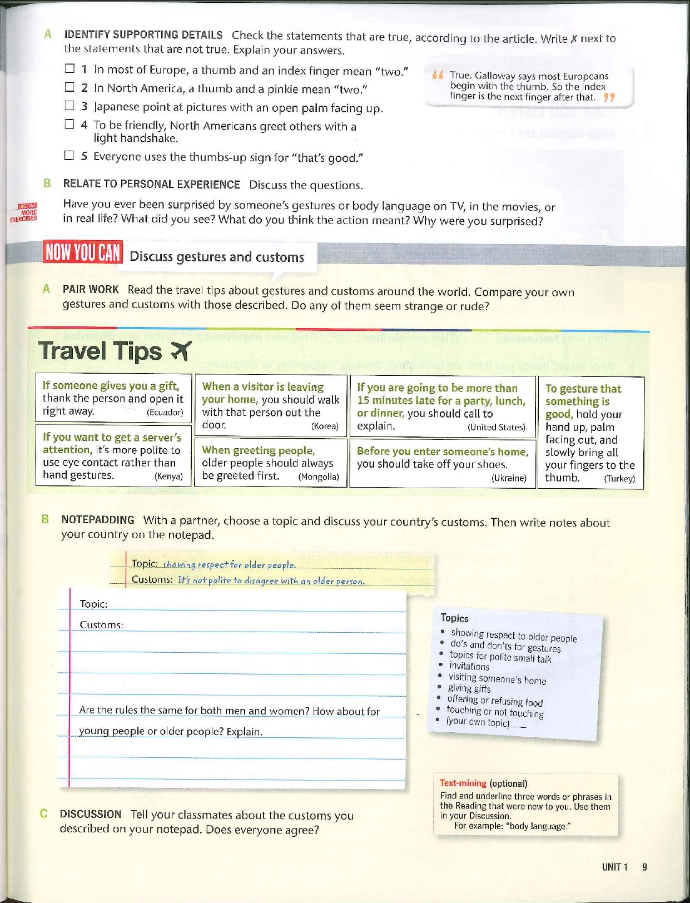
A IDENTIFY SUPPORTING DETAILS Check the statements that are true, according to the article. Write X next to the statements that are not true. Explain your answers. © 1 In most of Europe, a thumb and an index finger mean “two.” 44 True, Galloway says most Europeans O 2 In North America, a thumb and a pinkie mean “two.” Ree ne eee C1 3 Japanese point at pictures with an open palm facing up. 0 4 To be friendly, North Americans greet others with a light handshake. CO 5 Everyone uses the thumbs-up sign for “that’s good.” 1 RELATE TO PERSONAL EXPERIENCE Discuss the questions. Prod Have you ever been surprised by someone's gestures or body language on TY, in the movies, or en BES in real life? What did you see? What do you think the action meant? Why were you surprised? NOW YOUCAN A PAIRWORK Read the travel tips about gestures and customs around the world. Compare your own gestures and customs with those described. Do any of them seem strange or rude? iscuss gestures and customs ihn : Soa aE Travel Tips 7 If someone gives you a gift, When a visitor is teaving If you are going to be more than To gesture that thank the person and open it |/ your home, you should walk |} 15 minutes late for a party, lunch, something is right away. (Ecuador) |} with that person out the or dinner, you should call to good, hold your door. (Korea) |] explain. (United States) |] hand up, palm If you want to get a server's facing out, and attention, it's more polite to When greeting people, Before you enter someone's home, || slowly bring all use eye contact rather than older people should always you should take off your shoes. your fingers to the hand gestures. (Kenya) |} be greeted first. (Mongolia) (Ukraine) |} thumb. (Turkey) 8 NOTEPADDING With a partner, choose a topic and discuss your country’s customs. Then write notes about your country on the notepad. Topics © showing respect to older : people | * do's and don'ts for gestures / = : ee —_ J * topics for polite small talk | | ° invitations - - * visiting someone's home © giving gifts * offering or refusing food _ Are the rules the same for both men and women? How about for . © touching or not touching ° (your own topic) _|_young people or older people? Explain, — ‘Text-mining (optional) | Find and underline three words or phrases in the Reading that were new to you. Use them © DISCUSSION Tell your classmates about the customs you __ In your Discussion. 7 described on your notepad. Does everyone agree? oy example: “body language: UNIT1 9
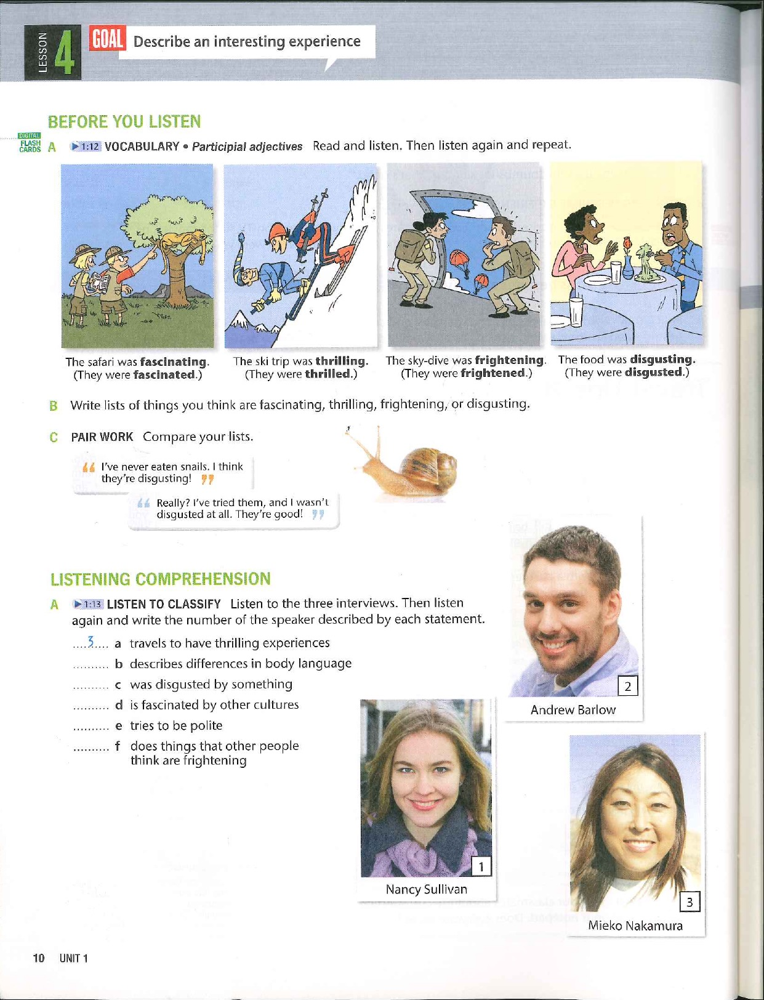
HIN Describe an interesting experience re 70 BEFORE YOU LISTEN ocr) EMS! A HAZ) VOCABULARY © Participial adjectives Read and listen. Then listen again and repeat. The safari was fascinating. The ski trip was thrilling. The sky-dive was frightening. The food was disgusting. (They were fascinated.) (They were thrilled.) (They were frightened.) (They were disgusted.) B Write lists of things you think are fascinating, thrilling, frightening, or disgusting. 4 © PAIRWORK Compare your lists. @ I've never eaten snails. | think they're disgusting! 99 “© Really? I’ve tried them, and | wasn’t disgusted at all. They're good! LISTENING COMPREHENSION A 953) LISTEN TO CLASSIFY Listen to the three interviews. Then listen again and write the number of the speaker described by each statement. . 3... a travels to have thrilling experiences describes differences in body language was disgusted by something is fascinated by other cultures Andrew Barlow | tries to be polite sucnebne f does things that other people think are frightening Nancy Sullivan 10) ~UNIT1
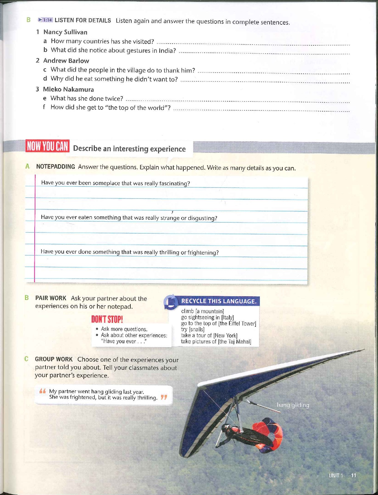
5 a4) LISTEN FOR DETAILS Listen again and answer the questions in complete sentences. 1 Nancy Sullivan a How many countries has she visited? ........ceeeccceeeees b What did she notice about gestures in India? 2 Andrew Barlow ¢ What did the people in the village do to thank him? .... d Why did he eat something he didn’t want to? ...... 3 Mieko Nakamura e What has she done twice? ........ : f How did she get to “the top of the world”? NOW YOU CAN Describe an interesting experience A NOTEPADDING Answer the questions. Explain what happened. Write as many details as you can. Have you ever been someplace that was really fascinating? 7 — ju ever eaten something that was really strange or disgusting? & PAIRWORK Ask your partner about the experiences on his or her notepad. Ni RECYCLE THI. climb [a mountain] DONT STOP! go sightseeing in [Italy] - go to the top of [the Eiffel Tower] _ ® Ask more questions. try [snails] e Ask about other experiences: take a tour of [New York] } “Have you ever. . take pictures of [the Taj Mahal] © GROUP WORK Choose one of the experiences your partner told you about. Tell your classmates about — your partner’s experience. a My partner went hang gliding last year. She was frightened, but it was really thrilling.
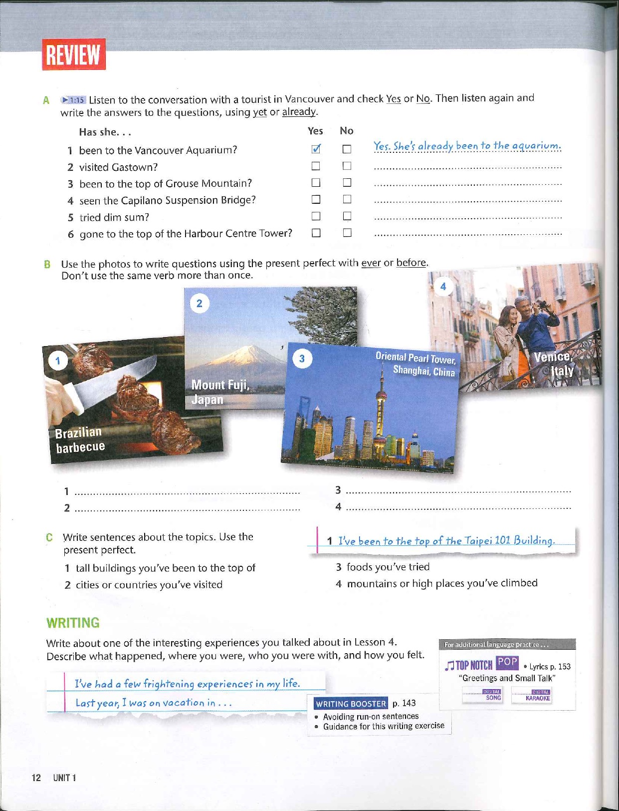
Listen to the conversation with a tourist in Vancouver and check Yes or No. Then listen again and | write the answers to the questions, using yet or already. Has she... Yes No | 1 been to the Vancouver Aquarium? 2 visited Gastown? 3 been to the top of Grouse Mountain? 4 seen the Capilano Suspension Bridge? 5 tried dim sum? 6 gone to the top of the Harbour Centre Tower? OOOOOS 8 Use the photos to write questions using the present perfect with ever or before. Don’t use the same verb more than once. Oriental Pear! Tower.) Shanghai, China ‘Mount Fuji, dapan=r Brazilian barbecue © Write sentences about the topics. Use the present perfect. 1 tall buildings you’ve been to the top of 3 foods you’ve tried 2 cities or countries you’ve visited 4 mountains or high places you’ve climbed | WRITING Write about one of the interesting experiences you talked about in Lesson 4. | Describe what happened, where you were, who you were with, and how you felt. oTOPNOTEH GHEE « yrs. 153 I've had a few frightening experiences in my life. “Grestings and Small Talk” = AM Last year, Iwas onvacationin... WRITING BOOSTER fumekd —— ® Avoiding run-on sentences © Guidance for this writing exercise 12 ~UNIT1
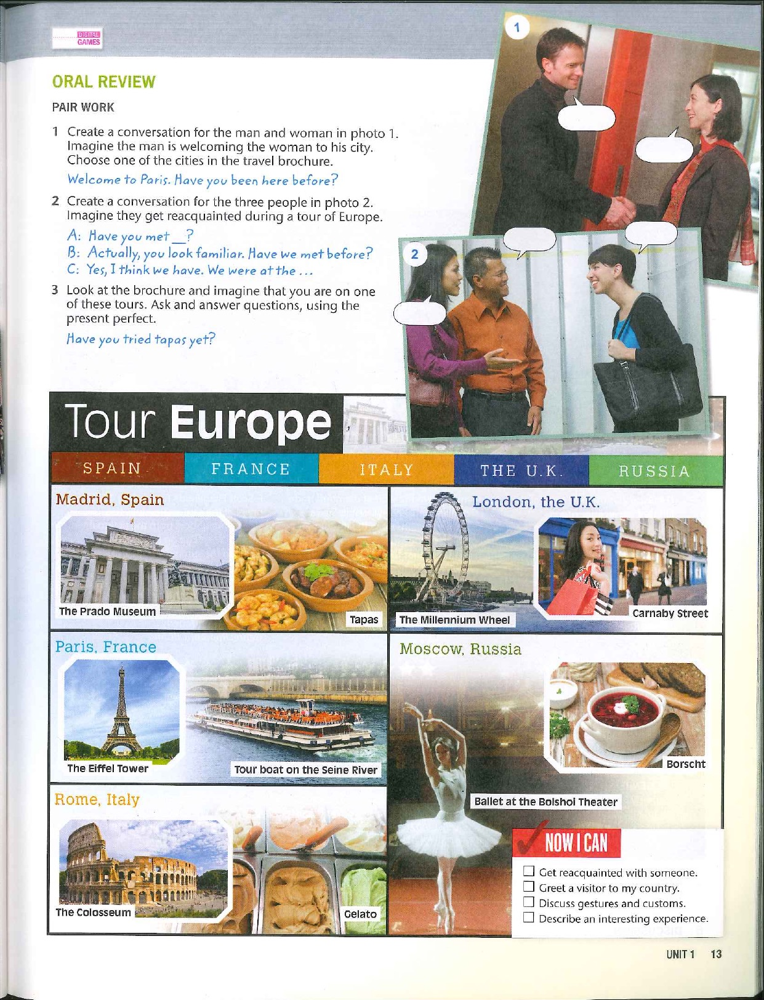
ORAL REVIEW PAIR WORK 1 Create a conversation for the man and woman in photo 1. Imagine the man is welcoming the woman to his city. Choose one of the cities in the travel brochure. Welcome to Paris. Have you been here before? Create a conversation for the three people in photo 2. Imagine they get reacquainted during a tour of Europe. A: Have you met__? B: Actually, you look familiar. Have we met before? C: Yes, think we have. We were atthe... Look at the brochure and imagine that you are on one of these tours. Ask and answer questions, using the present perfect. Have you tried tapas yet? Os br C1 Get reacquainted with someone. C1 Greet a visitor to my country. C1 Discuss gestures and customs. — C1 Describe an interesting experience The Colosseu UNIT1 13
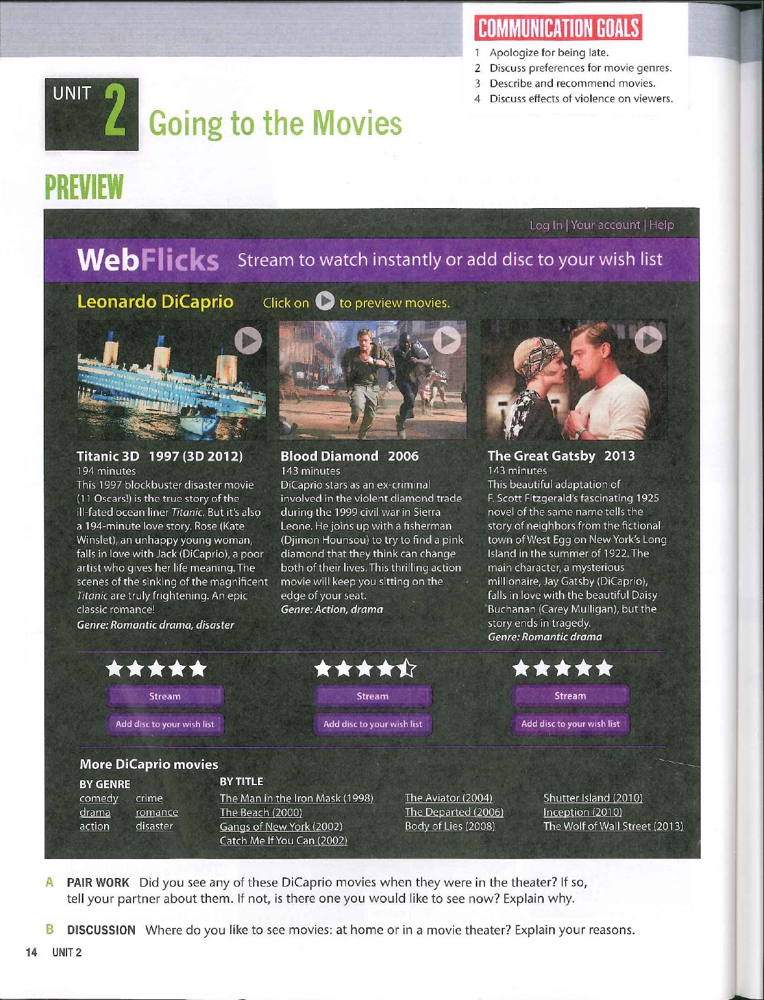
Titanic3D 1997 (3D 2012) 194 minutes This 1997 blockbuster disaster movie (11 Oscars!) is the true story of the ill-fated ocean liner Titanic. But it's also a 194-minute love story. Rose (Kate Winslet), an unhappy young woman, falls in love with Jack (DiCaprio), a poor artist who gives her life meaning. The scenes of the sinking of the magnificent Titanic are truly frightening. An epic classic romance! Genre: Romantic drama, disaster Kkkkknk Stream ‘Add disc to your wish list | More DiCaprio movies BY GENRE comedy BY TITLE crime The Man in the Iron Mask (1998) COMMUNICATION GOALS 1 2 3 4 Apologize for being late. Discuss preferences for movie genres. Describe and recommend movies. Discuss effects of violence on viewers. g In| Your account | bi ch instantly or add disc to you r wish list % Blood Diamond 2006 143 minutes DiCaprio stars as an ex-criminal involved in the violent diamond trade during the 1999 civil war in Sierra Leone. He joins up with a fisherman (Djimon Hounsou) to try to finda pink diamond that they think can change both of their lives. This thrilling action movie will keep you sitting on the edge of your seat. Genre: Action, drama Kamm Stream Add disc to your wish list _ The Aviator (2004) The Great Gatsby 2013 143 minutes This beautiful adaptation of F. Scott Fitzgerald's fascinating 1925 novel of the same name tells the story of neighbors from the fictional town of West Egg on New York's Long Island in the summer of 1922. The main character, a mysterious millionaire, Jay Gatsby (DiCaprio), falls in love with the beautiful Daisy Buchanan (Carey Mulligan), but the story ends in tragedy. Genre: Romantic drama kkk Stream Add discto your wish list Shutter Island (2010) drama romance The Beach (2000) The Departed (2006) Inception (2010) action disaster Gangs of New York (2002) Catch Me If You Can (2002) Body of Lies (2008) A PAIR WORK Did you see any of these DiCaprio movies when they were in the theater? If so, tell your partner about them. If not, is there one you would like to see now? Explain why. B DISCUSSION Where do you like to see movies: at home or in a movie theater? Explain your reaso: 14 UNIT2
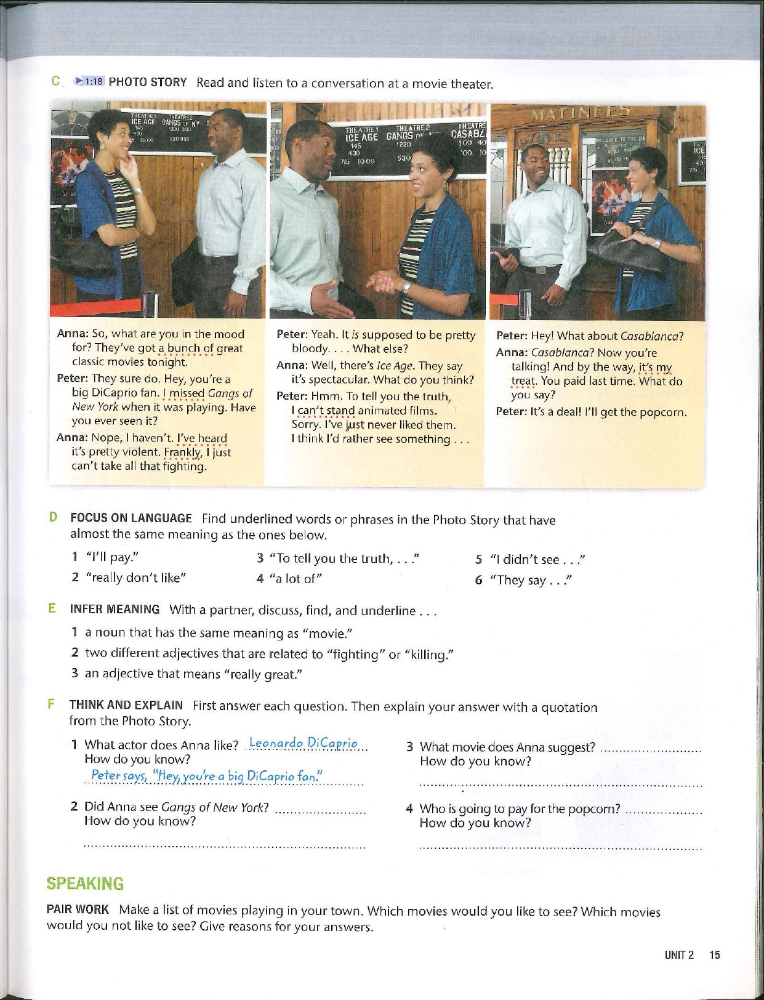
©. 188 PHOTO STORY Read and listen to a conversation at a movie theater. Anna: So, what are you in the mood Peter: Yeah. It is supposed to be pretty Peter: Hey! What about Casablanca? for? They’ve got a bu bloody. . .. What else? Anna: Casablanca? Now you're classic movies tonight. Anna: Well, there’s Ice Age. They say talking! And by the way, it’s my Peter: They sure do. Hey, you’re a it’s spectacular. What do you think? treat. You paid last time. What do, big DiCaprio fan. | missed Gangs of —_ Peter: Hmm. To tell you the truth, you say? New York when it was playing. Have | can’t stand animated films. Peter: It’s a deal! I'll get the popcorn. you ever seen it? Sorry. I’ve just never liked them. Anna: Nope, | haven't. I’ve heard I think I'd rather see something . . . can’t take all that fighting. 5 FOCUS ON LANGUAGE Find underlined words or phrases in the Photo Story that have almost the same meaning as the ones below. 1 “I'll pay.” 3 “To tell you the truth, . ..” 5 “Ididn’tsee...” 2 “really don’t like” 4 “a lot of” 6 “They say...” — INFER MEANING With a partner, discuss, find, and underline. . . 1 anoun that has the same meaning as “movie.” 2 two different adjectives that are related to “fighting” or “killing.” 3 an adjective that means “really great.” F THINK AND EXPLAIN First answer each question. Then explain your answer with a quotation from the Photo Story. 1 What actor does Anna like? Leonardo PiCaprie 3 What movie does Anna suggest? ............ How do you know? How do you know? 2 Did Anna see Gangs of New York? . 4 Who is going to pay for the popcorn? «0... . How do you know? How do you know? SPEAKING PAIR WORK Make a list of movies playing in your town. Which movies would you like to see? Which movies would you not like to see? Give reasons for your answers. UNIT 2
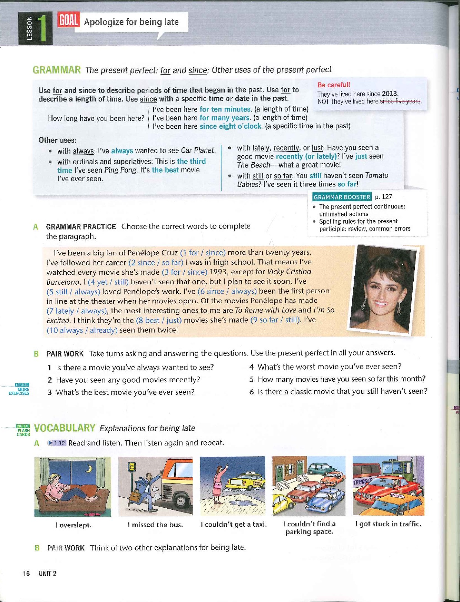
GOAL Apologize for being late LESSON GRAMMAR The present perfect: for and since; Other uses of the present perfect Be careful! They've lived here since 2013. NOT They've lived here sinee-five-years. Use for and since to describe periods of time that began in the past. Use for to describe a length of time. Use since with a specific time or date in the past. I've been here for ten minutes. (a length of time) How long have you been here? | I've been here for many years. (a length of time) : I've been here since eight o'clock. (a specific time in the past) Other uses: © with always: I’ve always wanted to see Car Planet. | * with lately recently, or lust: ne you seen a e with ordinals and superlatives: This is the third a A A Ne jest ecetl time I’ve seen Ping Pong. It’s the best movie is I've ever seen. with still or so far: You still haven't seen Tomato Babies? I've seen it three times so far! p. 127 * The present perfect continuous: unfinished actions rules for the present A GRAMMAR PRACTICE Choose the correct words to complete crea aur foe mimnencer rors the paragraph. — I've been a big fan of Penélope Cruz (1 for / since) more than twenty years. I've followed her career (2 since / so far) | was in high school. That means I’ve watched every movie she’s made (3 for / since) 1993, except for Vicky Cristina Barcelona. | (4 yet / still) haven’t seen that one, but | plan to see it soon. I’ve (5 still / always) loved Penélope’s work. I’ve (6 since / always) been the first person in line at the theater when her movies open. Of the movies Penélope has made (7 lately / always), the most interesting ones to me are To Rome with Love and I’m So Excited. | think they’re the (8 best / just) movies she’s made (9 so far / still). I’ve (10 always / already) seen them twice! B PAIR WORK Take turns asking and answering the questions. Use the present perfect in all your answers. 1 Is there a movie you've always wanted to see? 4 What's the worst movie you've ever seen? 2 Have you seen any good movies recently? 5 How many movies have you seen so far this month? Daneses 3 What's the best movie you’ve ever seen? 6 Is there a classic movie that you still haven’t seen? VOCABULARY Explanations for being late A} 1:19) Read and listen. Then listen again and repeat. | overslept. I missed the bus. I couldn’t get a taxi. I couldn’t find a | got stuck in traffic. parking space. 8B PAIR WORK Think of two other explanations for being late. 16 ~UNIT2
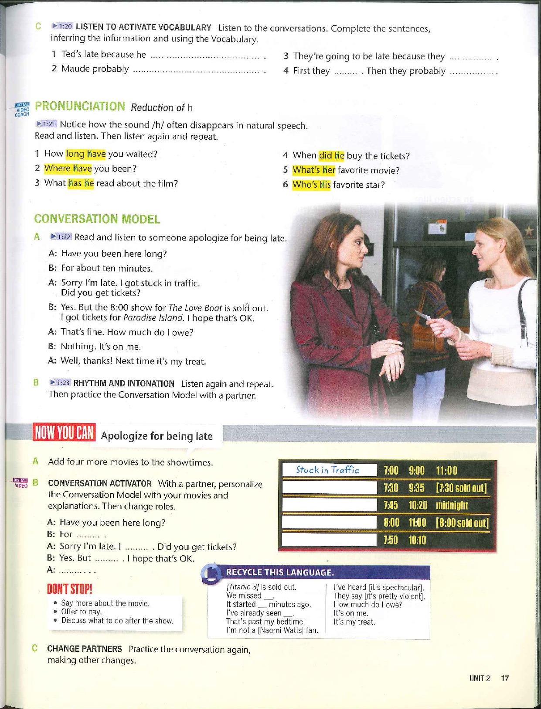
Cc sie PRONUNCIATION Reduction of h 1:21 Notice how the sound /h/ often disappears in natural speech. Read and listen. Then listen again and repeat. 1 How long Have you waited? 4 When did He buy the tickets? 2 Where Have you been? 5 What’s Het favorite movie? 3 What Has Hie read about the film? 6 Who's iis favorite star? CONVERSATION MODEL A E a NOW YOU CAN Apologize for being late E a ae oe eee A Hci} we 8 > 1:20 LISTEN TO ACTIVATE VOCABULARY Listen to the conversations. Complete the sentences, inferring the information and using the Vocabulary. 1 Ted’s late because he 2 Maude probably ... 3 They’re going to be late because they ... 4 First they . . Then they probably 1:22 Read and listen to someone apologize for being late. A: Have you been here long? B: For about ten minutes. A: Sorry I’m late. | got stuck in traffic. Did you get tickets? B: Yes. But the 8:00 show for The Love Boat is sold out. | got tickets for Paradise Island. | hope that’s OK. A: That’s fine. How much do | owe? B: Nothing. It’s on me. A: Well, thanks! Next time it’s my treat. > 1:23 RHYTHM AND INTONATION Listen again and repeat. Then practice the Conversation Model with a partner. Add four more movies to the showtimes. CONVERSATION ACTIVATOR With a partner, personalize the Conversation Model with your movies and explanations. Then change roles. A: Have you been here long? | Bi FGM oiesssy 2 F A: Sorry I’m late... . Did you get tickets? | B: Yes. But ......... . [hope that’s OK. : | A rin 9 RECYCLE THIS LANGUAGE. | i} [Titanic 3} is sold out. | I've heard [it's spectacular]. j DONT STOP! | We missed __. They say [it’s pretty violent]. | © Say more about the movie. | lt started __ minutes ago. How much do | owe? | © Offer to pay. I've already seen _ It’s on me. | ¢ Discuss what to do after the show, That's past my bedtime! It’s my treat. I'm not a [Naomi Watts] fan. CHANGE PARTNERS Practice the conversation again, making other changes. UNIT2 17
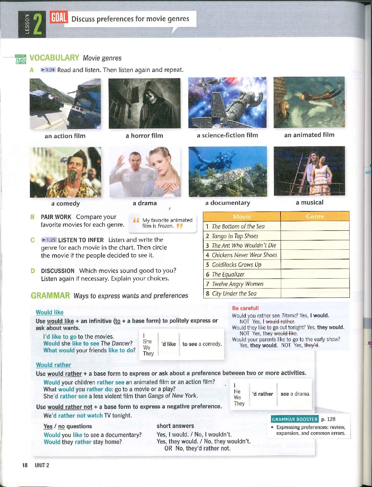
Discuss preferences for movie genres VOCABULARY Movie genres Fa CARDS: A 1:24 Read and listen. Then listen again and repeat. an action film a science-fiction film an animated film MM a comedy adrama a documentary a musical ' B PAIR WORK Compare your 4 My favorite animated favorite movies for each genre. film is Frozen. 99 1 The Bottom of the Sea C 195! LISTEN TO INFER Listen and write the 2. Tango in Tap Shoes | genre for each movie in the chart. Then circle 3 The Ant Who Wouldn't Die | the movie if the people decided to see it. 4 Chickens Never Wear Shoes 5 Goldilocks Grows Up | D DISCUSSION Which movies sound good to you? - | f if 5 6 The Equalizer Listen again if necessary. Explain your choices. 7 Twelve Angry Women GRAMMAR Ways to express wants and preferences 8 City Under the Sea Be careful! Would like . = rae wt 7 Would you rather see Titanic? Yes, | would. Use would like + an infinitive (to + a base form) to politely express or NOT Yes, | weuld-rather, ask about wants. Would they like to go out tonight? Yes, they would. NOT Yes, they 4 Would your parents like to go to the early show? I'd like to go to the movies. i i ‘dlike | to see a comedy. Yes, they would. NOT Yes, they'd. Would she like to see The Dancer? She What would your friends like to do? They Would rather Use would rather + a base form to express or ask about a preference between two or more activities. Would your children rather see an animated film or an action film? What would you rather do: go to a movie or a play? : He , She'd rather see a less violent film than Gangs of New York. We dvather see a drama, Use would rather not + a base form to express a negative preference. They y We'd rather not watch TV tonight. p. 128 Yes / no questions short answers © Expressing preferences: review, | Would you like to see a documentary? Yes, | would. / No, | wouldn’t. expansion, and common errors. | Would they rather stay home? Yes, they would. / No, they wouldn't. OR No, they’d rather not. 18 UNIT2
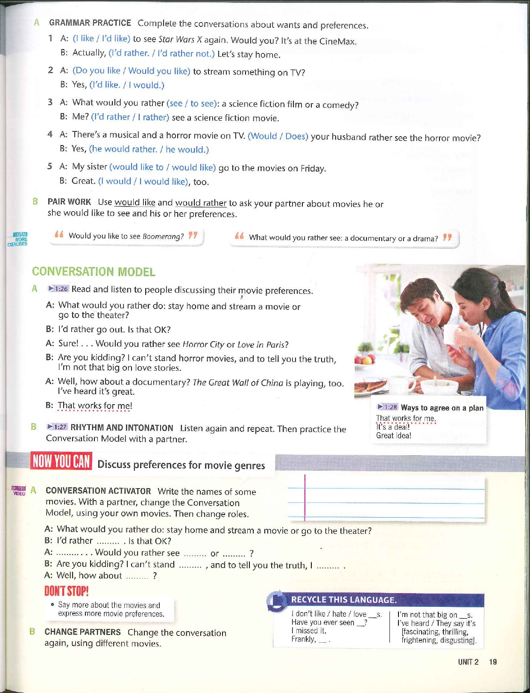
“GRAMMAR PRACTICE Complete the conversations about wants and preferences. 1A: (like / I'd like) to see Star Wars X again. Would you? It’s at the CineMax. B: Actually, (I’d rather. / I’d rather not.) Let’s stay home. 2 A: (Do you like / Would you like) to stream something on TV? B: Yes, (I’d like. / | would.) 3 A: What would you rather (see / to see): a science fiction film ora comedy? B: Me? (I'd rather / | rather) see a science fiction movie. 4 A: There’s a musical and a horror movie on TV. (Would / Does) your husband rather see the horror movie? B: Yes, (he would rather. / he would.) 5 A: My sister (would like to / would like) go to the movies on Friday. B: Great. (| would / | would like), too. she would like to see and his or her preferences. | ORE ERERCISES. £4 Would you like to see Boomerang? 7 | CONVERSATION MODEL A &1:26 Read and listen to people discussing their movie preferences. A: What would you rather do: stay home and stream a movie or go to the theater? I'd rather go out. Is that OK? : Sure! ... Would you rather see Horror City or Love in Paris? ; Are you kidding? | can’t stand horror movies, and to tell you the truth, I’m not that big on love stories. | A: Well, how about a documentary? The Great Wall of China is playing, too. | I’ve heard it’s great. B: That works for me! © 27, RHYTHM AND INTONATION Listen again and repeat. Then practice the Conversation Model with a partner. fe NOW YOU CAN iipyeeres preferences for movie genres p “au A CONVERSATION ACTIVATOR Write the names of some movies. With a partner, change the Conversation PAIR WORK Use would like and would rather to ask your partner about movies he or £4 What would you rather see: a documentary ora drama? ?? — > 1:28 Ways to agree on a plan ‘That works for me, Great idea! Model, using your own movies. Then change roles. A: What would you rather do: stay home and stream a movie or go to the theater? B: I’d rather ......... . Is that OK? Would you rather see B: Are you kidding? | can’t stand .. A: Well, how about ......... ? DONT STOP! ® Say more about the movies and express more movie preferences. ae OF we. ? . , and to tell you the truth, | o... . Have you ever seen _? | missed it. CHANGE PARTNERS Change the conversation Frankly, again, using different movies. RECYCLE THIS LANGUAGE. | don't like / hate / love __: I'm not that big on __s. I've heard / They say it’s [fascinating, thrilling, frightening, disgusting] UNIT2 19
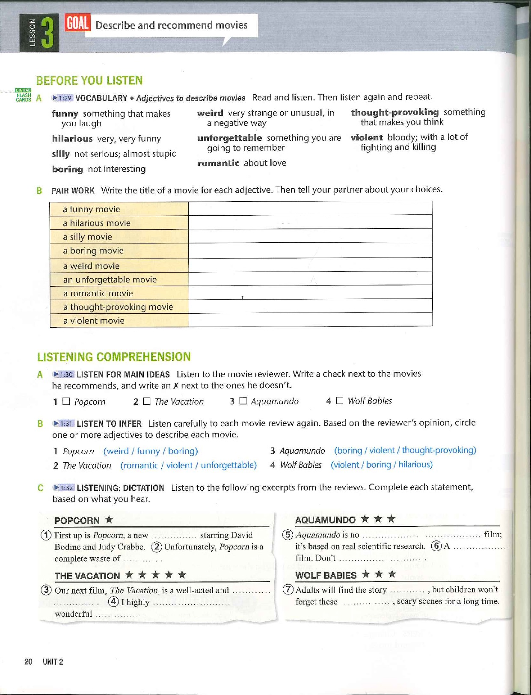
Describe and recommend movies a oo i = BEFORE YOU LISTEN | | Gest A & 129 VOCABULARY « Adjectives to describe movies Read and listen. Then listen again and repeat. funny something that makes weird very strange or unusual, in| thought-provoking something you laugh a negative way that makes you think hilarious very, very funny unforgettable something you are violent bloody; with a lot of going to remember fighting and killing silly not serious; almost stupid romantic about love boring not interesting 8B PAIRWORK Write the title of a movie for each adjective. Then tell your partner about your choices. | a funny movie a hilarious movie a silly movie a boring movie a weird movie an unforgettable movie a romantic movie a thought-provoking movie a violent movie LISTENING COMPREHENSION | A }9i30) LISTEN FOR MAIN IDEAS Listen to the movie reviewer. Write a check next to the movies he recommends, and write an X next to the ones he doesn’t. 1 O Popcorn 2.0 The Vacation 3 0 Aquamundo 4 U1 Wolf Babies | B 131 LISTEN TO INFER Listen carefully to each movie review again. Based on the reviewer's opinion, circle one or more adjectives to describe each movie. 1 Popcorn (weird / funny / boring) 3 Aquamundo (boring / violent / thought-provoking) | 2 The Vacation (romantic / violent / unforgettable) 4 Wolf Babies (violent / boring / hilarious) © >1!32) LISTENING: DICTATION Listen to the following excerpts from the reviews. Complete each statement, based on what you hear. POPCORN _*« AQUAMUNDO * * + @ First up is Popcorn, a new starring David (©) Aquamundo iso ......... soared seca HTH Bodine and Judy Crabbe. ® Unfortunately, Popcorn is a it’s based on real scientific fesearcil © A complete waste of ........., . film. Don’t . agen wanes eeaie THE VACATION *& *& & Ok WOLF BABIES * * * @) Our next film, The Vacation, is a well-acted and .......... ep) Adults will find the story .... ; but children won’t Ase @ thighly ‘6 Px er forget these ................ , Scary scenes for a long time. wonderful .. 20 ~UNIT2
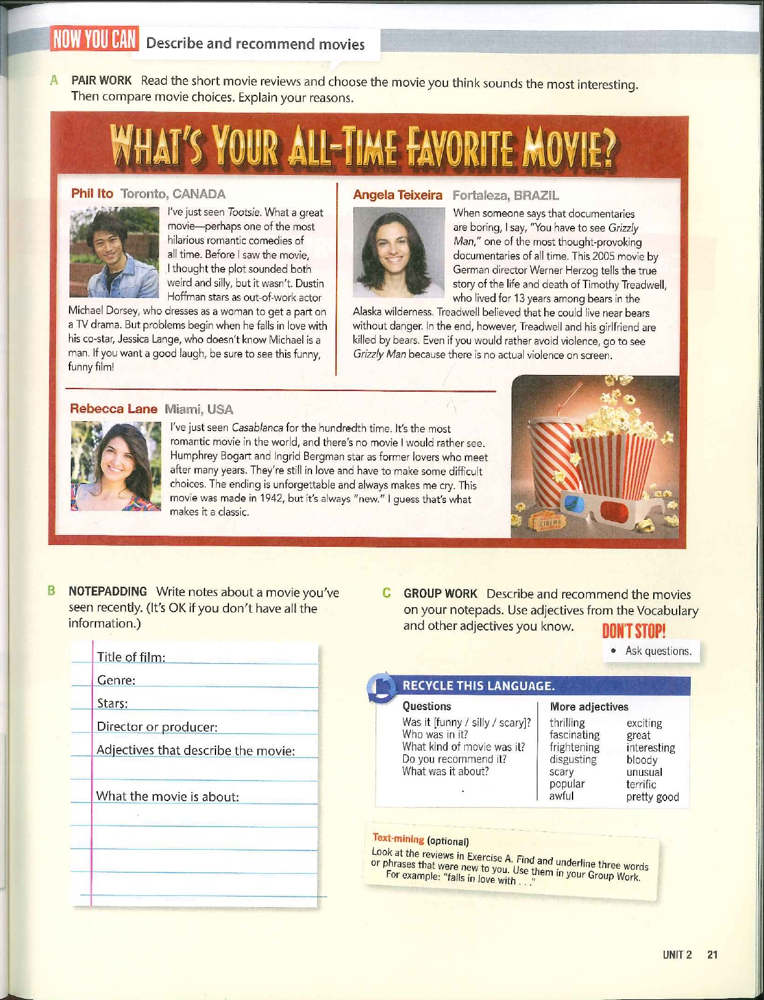
‘NOW YOU CAN Describe and recommend movies 4 PAIR WORK Read the short movie reviews and choose the movie you think sounds the most interesting. Then compare movie choices. Explain your reasons. WiVHHID ALLOW PARE Phil Ito Toronto, CANADA I've just seen Tootsie. What a great movie—perhaps one of the most hilarious romantic comedies of all time. Before | saw the movie, I thought the plot sounded both » weird and silly, but it wasn’t. Dustin Hoffman stars as out-of-work actor MAWIL Fortaleza, BRAZIL When someone says that documentaries are boring, | say, "You have to see Grizzly Man,” one of the most thought-provoking documentaries of all time. This 2005 movie by German director Werner Herzog tells the true | story of the life and death of Timothy Treadwell, who lived for 13 years among bears in the Michael Dorsey, who dresses as a woman to get aparton | Alaska wilderness. Treadwell believed that he could live near bears a TV drama. But problems begin when he falls in love with | without danger, In the end, however, Treadwell and his girlfriend are his co-star, Jessica Lange, who doesn'tknow Michael isa | _ killed by bears, Even if you would rather avoid violence, go to see man. If you want a good laugh, be sure to see this funny, Grizzly Man because there is no actual violence on screen. funny film! Rebecca Lane Miami, USA I've just seen Casablanca for the hundredth time. It's the most romantic movie in the world, and there’s no movie | would rather see. Humphrey Bogart and ingrid Bergman star as former lovers who meet after many years. They're still in love and have to make some difficult choices, The ending is unforgettable and always makes me cry. This movie was made in 1942, but it's always "new." | guess that’s what makes it a classic. 8 NOTEPADDING Write notes about a movie you’ve C GROUP WORK Describe and recommend the movies seen recently. (It’s OK if you don’t have all the information.) Title of film: Director or producer: Adjectives that describe the movi on your notepads. Use adjectives from the Vocabulary and other adjectives you know. DON'T STOP! e Ask questions. RECYCLE THIS LAN GE. Questions More adjectives Was it [funny / silly / scary]? | thrilling exciting Who was in it? fascinating great What kind of movie was it? frightening interesting Do you recommend it? disgusting bloody What was it about? scary unusual popular terrific awful pretty good Text-mining (optional) Look at the reviews in Exercise A, Find and underline three word: i 7 se iderline three words For example: f “falls in love with," YOU Group Work,
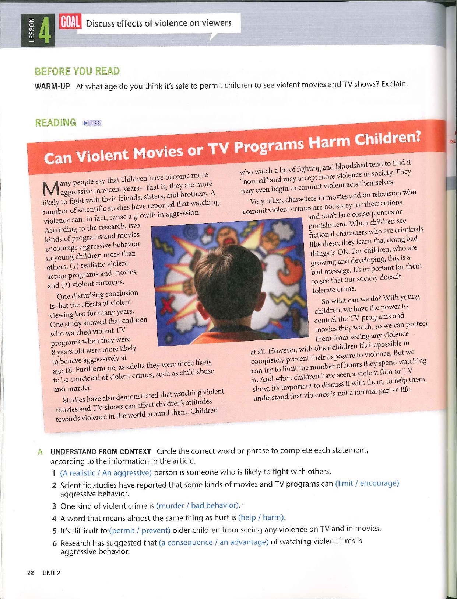
22 COAL Discuss effects of violence on viewers LESSON BEFORE YOU READ WARM-UP At what a di ink it’ ge do you think it’s safe to permit children to see violent movies and TV shows? Ex| ows? Explain. READING iss Can Violent Movies or TV Programs Harm Children? Mz people say that children have become more who watch a lot of fighting and bloodshed tend to find it aggressive in recent years—that is, they are more “pormal” and may accept more violence in society: They likely to fight with their friends, sisters, and brothers. A may even begin to commit violent acts themselves. number of scientific studies have reported that watching Very often, characters in movies and on television who violence can, in fact, cause growth in aggression. commit violent crimes are not sorry for their actions and don't face consequences oF punishment. When children see fictional characters who are criminals like these, they learn that doing bad things is OK. For children, who are growing and developing, this is a bad message. It’s important for them. to see that our society doesnt tolerate crime. According to the research, two kinds of programs and movies encourage aggressive behavior in young children mote than others: (1) realistic violent action programs and movies, and (2) violent cartoons. One disturbing conclusion js that the effects of violent viewing last for many years. So what can we do? With young One study showed that children children, we have the power to who watched violent TV control the TV programs and programs when they were © movies they watch, so we can protect 8 years old were more likely them from seeing any violence to behave aggressively at at all. However, with older children its impossible to age 18, Furthermore, as adults they were More likely completely prevent their exposure to violence. But we to be convicted of violent crimes, such as child abuse can try to limit the number of hours they spend watching and murder. it. And when children have seen @ violent film or TV Studies have also demonstrated that watching violent show, it’s important to discuss it with them, to help them movies and T'V shows can affect children’s attitudes understand that violence js not a normal part of life. towards violence in the world around them. Children UNDERSTAND FROM CONTEX ircle the corre ord or phrase to c jete eacl ment, ci he co! h h ect word or phra: ‘omplet statement, (A realistic / An aggressive) person is someone who is likely to fight with other: At h Ik figh h others. 2 Scientific studies have reported tl T vi f ve reported th: i i al Ne shay p at some kinds of movies and TV programs can (limit / encourage) i a kind of violent crime is (murder / bad behavior) : a that means almost the same thing as hurt is (help / harm). s difficult i ; to (permit / prevent) older children from seeing any violence on TV di and in movies. 6 Research has su r iggested that aggressive behavior. (a consequence / an advantage) of watching violent films is UNIT 2
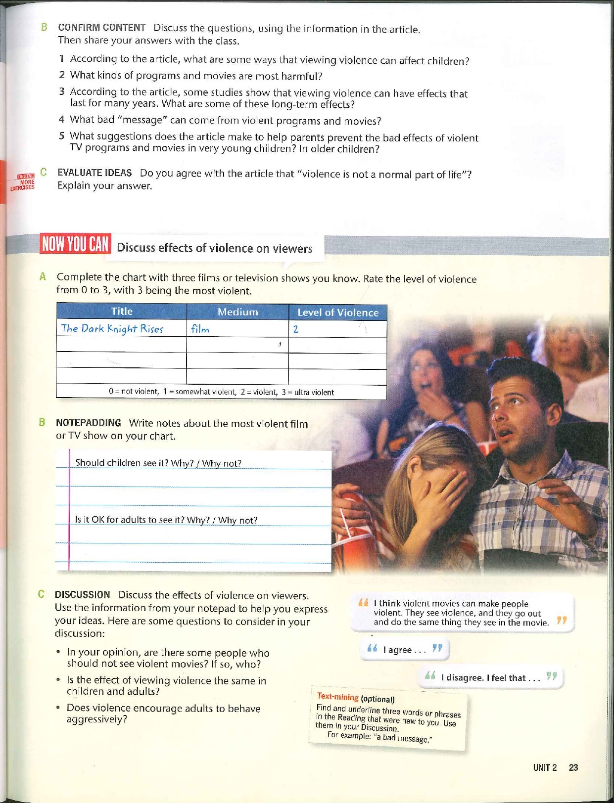
5 CONFIRM CONTENT Discuss the questions, using the information in the article. Then share your answers with the class. 1 According to the article, what are some ways that viewing violence can affect children? 2 What kinds of programs and movies are most harmful? 3 According to the article, some studies show that viewing violence can have effects that last for many years. What are some of these long-term effects? 4 What bad “message” can come from violent programs and movies? 5 What suggestions does the article make to help parents prevent the bad effects of violent TV programs and movies in very young children? In older children? gam © EVALUATE IDEAS Do you agree with the article that “violence is not a normal part of life”? | Explain your answer. OW YOU CAN Discuss effects of violence on viewers ee : a — A Complete the chart with three films or television shows you know. Rate the level of violence from 0 to 3, with 3 being the most violent. Title Medium The Dark Knight Rises film 2 O=not violent, 1 = somewhat violent, 2= violent, 3 = ultra violent 8 NOTEPADDING Write notes about the most violent film or TV show on your chart. Should children see it? Why? / Why not? C DISCUSSION Discuss the effects of violence on viewers. Use the information from your notepad to help you express ©6 (think violent movies can make people violent. They see violence, and they go out your ideas. Here are some questions to consider in your and do the Same thing they see in the movie. ”” discussion: + In your opinion, are there some people who © tagree... 7 should not see violent movies? If so, who? Is the effect of viewing violence the same in pe. Lalsagres. | feel that: .. children and adults? - Text-mining (optional) ne a cNeUESE aduilis to behave i eae uterine three words or Phrases : zs e Reading that we aggressively? them in your Discussion. — For example: “a bad message,” UNIT2 23
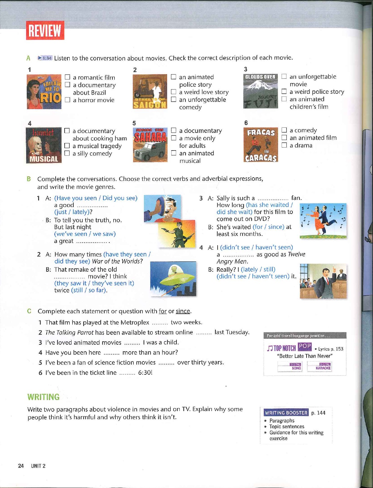
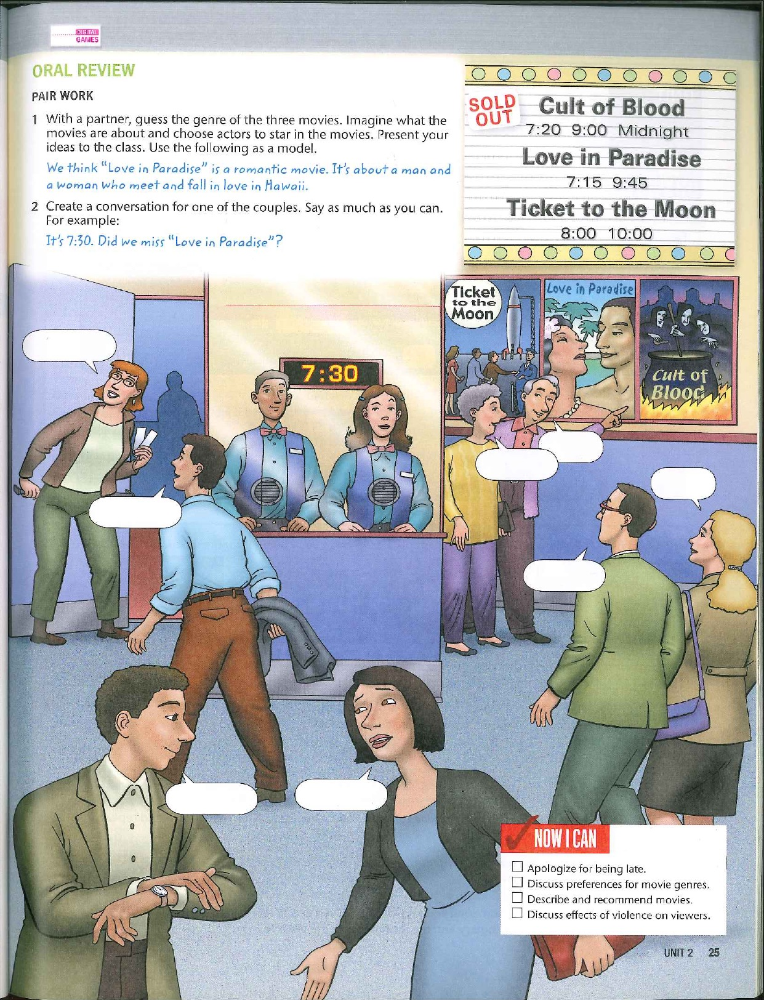
Era GAMES ORAL REVIEW OG@OSOSCOCSGE WORK . i“ h th f the th I hat th sour Cult of Blood 1 With a partner, guess the genre of the three movies. Imagine what the E : wa movies are about and choose actors to star in the movies. Present your 7:20 9:00 Midnight ideas to the class. Use the following as a model. Love-in Paradise 715 9:45 2 Create a conversation for one of the couples. Say as much as you can. Ticket to the Noon For example: A NOWICAN (1 Apologize for being late. | C1] Discuss preferences for movie genres. | 1 Describe and recommend movies | C1 Discuss effects of violence on viewers. UNIT2 25
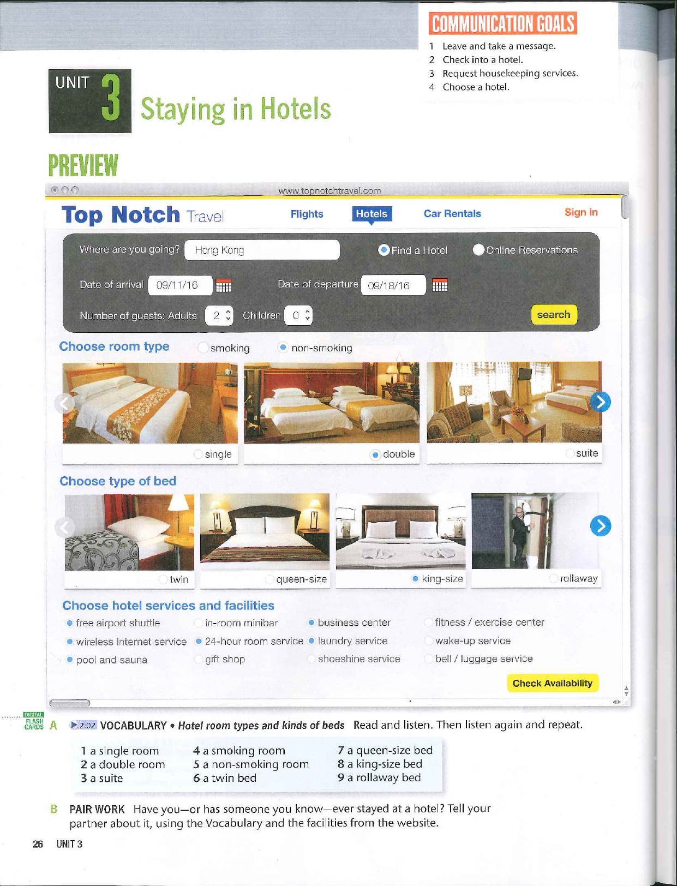
y | : COMMUNICATION GOALS 1. Leave and take a message. 2 Check into a hotel. 3. Request housekeeping services. 4 Choose a hotel. Staying in Hotels PREVIEW Top Notch fave Where are you going? QFind a Hote! @ Online Reservations Date of arrival Iigeranvalel Date of departure Mieeyarsrarey Number of guests: Adults Children Choose room type smoking ® non-smoking www.topnotchtravel.com Car Rentals single e double suite Choose type of bed ® king-size rollaway Choose hotel services and facilities © free airport shuttle in-room minibar ® business center fitness / exercise center @ wireless Internet service @ 24-hour room service @ laundry service wake-up service ® pool and sauna gift shop shoeshine service bell / luggage service ara. Gus A 2102 VOCABULARY « Hotel room types and kinds of beds Read and listen. Then listen again and repeat. Ta single room 4a smoking room 7 a queen-size bed 2 a double room 5 anon-smoking room 8 a king-size bed 3a suite 6a twin bed 9a rollaway bed 5B PAIRWORK Have you—or has someone you know—ever stayed at a hotel? Tell your partner about it, using the Vocabulary and the facilities from the website. 26 «UNIT3 o “>
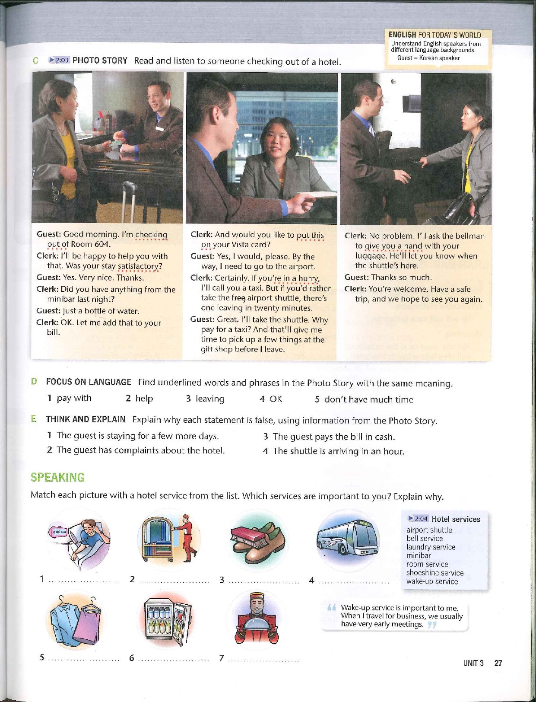
(© 2:03 PHOTO STORY Read and listen to someone checking out of a hotel. Guest: Good morning. I’m checking out of Room 604. Clerk: I'll be happy to help you with that. Was your stay satisfactory? Guest: Yes. Very nice. Thanks. Clerk: Did you have anything from the minibar last night? Guest: Just a bottle of water. Clerk: OK. Let me add that to your bill. on your Vista card? Guest: Yes, | would, please. By the way, I need to go to the airport. Clerk: Certainly. If you’ lll call you a taxi. B take the free airport shuttle, there’s ‘one leaving in twenty minutes. Guest: Great. |’ll take the shuttle. Why pay fora taxi? And that'll give me time to pick up a few things at the gift shop before I leave. [ENGLISH FOR TODAY'S WORLD Understand English speakers from different language backgrounds. Guest = Korean speaker Clerk: No problem. I'll ask the bellman to give yal a Dora wtnyour luggage. He'll let you know when the shuttle’s here. Guest: Thanks so much. Clerk: You’re welcome. Have a safe trip, and we hope to see you again. FOCUS ON LANGUAGE Find underlined words and phrases in the Photo Story with the same meaning. 1 pay with 2 help 3 leaving 4 OK 5 don’t have much time — THINK AND EXPLAIN Explain why each statement is false, using information from the Photo Story. 1 The guest is staying for a few more days. 2 The guest has complaints about the hotel. SPEAKING 3 The guest pays the bill in cash. 4 The shuttle is arriving in an hour. Match each picture with a hotel service from the list. Which services are important to you? Explain why. » 2:04 Hotel services airport shuttle bell service laundry service minibar room service shoeshine service wake-up service Wake-up service is important to me. When I travel for business, we usually have very early meetings. UNIT3 27
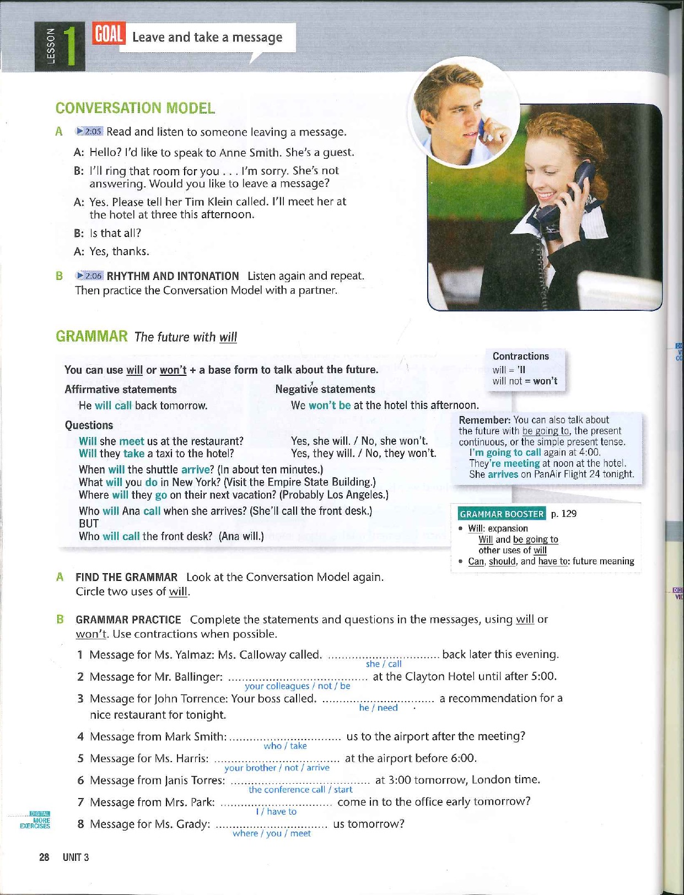
‘GOAL Leave and take a message LESSON CONVERSATION MODEL A &205 Read and listen to someone leaving a message. A: Hello? I’d like to speak to Anne Smith. She’s a guest. B: 1’ll ring that room for you . . . I’m sorry. She’s not answering. Would you like to leave a message? A: Yes. Please tell her Tim Klein called. I'll meet her at the hotel at three this afternoon. B: Is that all? A: Yes, thanks. B 266 RHYTHM AND INTONATION Listen again and repeat. Then practice the Conversation Model with a partner. GRAMMAR The future with will Contractions | 4 You can use will or won’t + a base form to talk about the future. will = "Il 5 A Ait will not = won't Affirmative statements Negative statements He will call back tomorrow. We won't be at the hotel this afternoon. ‘i Remember: You can also talk about Questions D the future with be going ta, the present | Will she meet us at the restaurant? Yes, she will. / No, she won't. continuous, or the simple present tense. Will they take a taxi to the hotel? Yes, they will. / No, they won't. I'm going to call again at 4:00. They're meeting at noon at the hotel. When will the shuttle arrive? (In about ten minutes.) She arrives on PanAlir Flight 24 tonight. What will you do in New York? (Visit the Empire State Building.) Where will they go on their next vacation? (Probably Los Angeles.) Whe will Ana call when she arrives? (She'll call the front desk.) p. 129 wi 5 Who will call the front desk? (Ana will) vn Wl and be going to | other uses of will © Can, should, and have to: future meaning A FIND THE GRAMMAR Look at the Conversation Model again. Circle two uses of will. si 5B GRAMMAR PRACTICE Complete the statements and questions in the messages, using will or won't. Use contractions when possible. 1 Message for Ms. Yalmaz: Ms. Calloway called. . back later this evening. 2 Message for Mr. Ballinger: ............ your colleagues / not / be 3 Message for John Torrence: Your boss Called. .........:cccsceseeeet reece a recommendation for a - i he / need nice restaurant for tonight. at the Clayton Hotel until after 5:00. us to the airport after the meeting? | 4 Message from Mark Smith: ... who / take 5 Message for Ms. Harris: ............ cee at the airport before 6:00. your brother / not / arrive 6 Message from Janis Torres: ............ ce sicienmapenata aE at 3:00 tomorrow, London time. the conference call / start 7 Message from Mrs. Park: . .. come in to the office early tomorrow? exer Ses 8 Message for Ms. Grady: ....... . us tomorrow? wi 28 «UNIT3
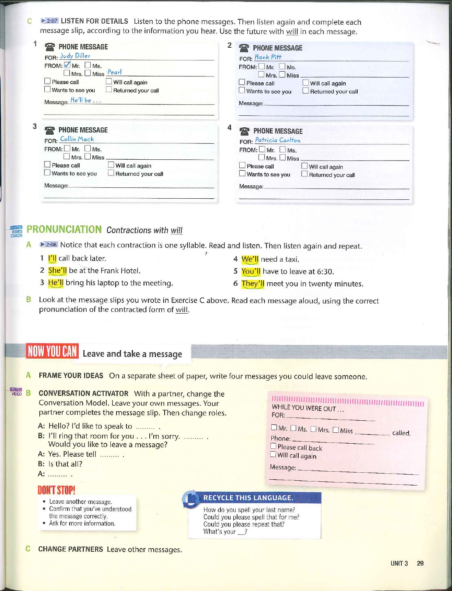
© &2:07 LISTEN FOR DETAILS Listen to the phone messages. Then listen again and complete each message slip, according to the information you hear. Use the future with will in each message. 1 > PHONE MESSAGE 2 @® PHONE MESSAGE FOR: Je4y Diller ae FoR: Hank Pitt : FROM: (Zimr, Cis. FROM: |_|mr [| Ms. Ors. Li miss Pearl - Omrs. Oi Miss Please call CI Willeall again C Please call [will call again Cwants to see you [| Returned your call [wants to see you 1) Returned your call Message: He'll be... Message: — 3 gp PHONE MESSAGE For: Collin Mack 4 @& PHONE MEssaGE FOR: Patricia Carlton FROM: [_]Mr. [_]Ms. Ors. miss (ClPlease call Ciwants to see you [1 will call again (] Returned your call Message: _ From: Cimr, Cis. Ors. Ci miss Li Please call (Wil call again TWantsto see you [_] Returned your call Message: = con PRONUNCIATION Contractions with will a ‘\ 208) Notice that each contraction is one syllable. Read and listen. Then listen again and repeat. 1 Il] call back later. | 2 She'll be at the Frank Hotel. 3 He'll bring his laptop to the meeting. Pronunciation of the contracted form of will. fe. NOW YOU CAN fees and take a message A: Hello? I'd like to speak to .... B: I’ll ring that room for you . . . I’m sorry. Would you like to leave a message? A: Yes. Please tell B: Is that all? DONT STOP! Leave another message. © Confirm that you've understood the message correctly, © Ask for more information. © CHANGE PARTNERS Leave other messages. CONVERSATION ACTIVATOR With a partner, change the Conversation Model. Leave your own messages. Your partner completes the message slip. Then change roles. y 4 We'll need a taxi. 5 You'll have to leave at 6:30. 6 They'll meet you in twenty minutes. 8 Look at the message slips you wrote in Exercise C above. Read each message aloud, using the correct A FRAME YOUR IDEAS On a separate sheet of paper, write four messages you could leave someone. WHILE YOU WERE OUT... THC TET FOR: ae eae OM. CMs. CMs, C1 Miss called, Phone: Please call back CIWill call again Message; en RECYCLE THIS LAN iG How do you spell your last name? Could you please spell that for me? Could you please repeat that? | What's your __? | UNIT3 29
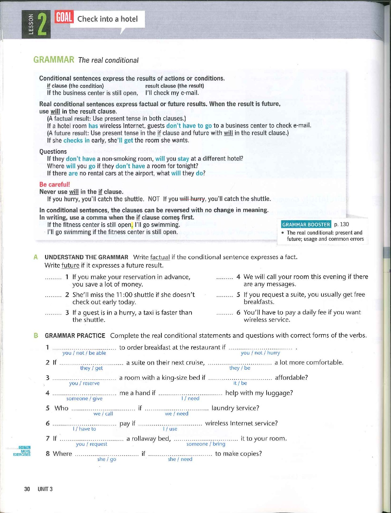
MORE EXERCISES LESSON 2 | COAL Check into a hotel GRAMMAR The real conditional Conditional sentences express the results of actions or conditions. if clause (the condition) result clause (the result) lf the business center is still open, I'll check my e-mail. Real conditional sentences express factual or future results. When the result is future, use will in the result clause. (A factual result: Use present tense in both clauses.) If a hotel room has wireless Internet, guests don’t have to go to a business center to check e-mail. (A future result: Use present tense in the if clause and future with will in the result clause.) If she checks in early, she'll get the room she wants. Questions If they don’t have a non-smoking room, will you stay at a different hotel? Where will you go if they don’t have a room for tonight? If there are no rental cars at the airport, what will they do? Be careful! Never use will in the if clause. If you hurry, you'll catch the shuttle. NOT If you willhurry, you'll catch the shuttle. In conditional sentences, the clauses can be reversed with no change in meaning. in writing, use a comma when the if clause comes first. If the fitness center is still open, I'll go swimming. p. 130 I'll go swimming if the fitness center is still open. The real conditional: present and future; usage and common errors A UNDERSTAND THE GRAMMAR Write factual if the conditional sentence expresses a fact. Write future if it expresses a future result. maaan 1 If you make your reservation in advance, sees 4 We will call your room this evening if there you save a lot of money. are any messages. eenenente 2 She’ll miss the 11:00 shuttle if she doesn’t .. 5 Ifyou request a suite, you usually get free check out early today. breakfasts. 3 Ifa guest is in a hurry, a taxi is faster than 6 You'll have to pay a daily fee if you want the shuttle. wireless service. 3B GRAMMAR PRACTICE Complete the real conditional statements and questions with correct forms of the verbs. 1 .. to order breakfast at the restaurant if 2... sag QM oe ieeeeeeeceeteseteeeeee a suite on their next cruise, ......... a lot more comfortable. 3 a room with a king-size bed if ............. an affordable? . mea hand if we / call .. pay if UNIT 3
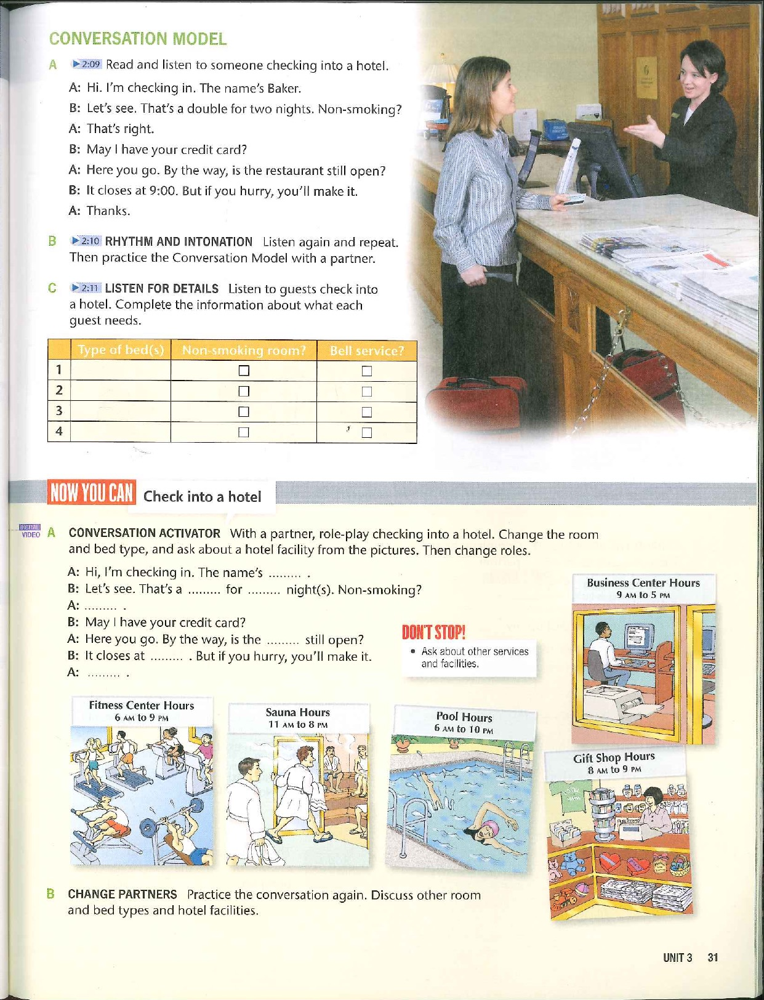
CONVERSATION MODEL A &2:09 Read and listen to someone checking into a hotel. A: Hi. I’m checking in. The name’s Baker. : Let’s see. That’s a double for two nights. Non-smoking? : That's right. : May | have your credit card? : Here you go. By the way, is the restaurant still open? : It closes at 9:00. But if you hurry, you’ll make it. : Thanks. PROPraAPrPa” 8 2:10 RHYTHM AND INTONATION Listen again and repeat. | Then practice the Conversation Model with a partner. © 221 LISTEN FOR DETAILS Listen to guests check into a hotel. Complete the information about what each | guest needs. of bed(s) Non: smoking room? Bell service? 1 oO oO 2 oO Oo 3 oO Oo 4 oO lm A CONVERSATION ACTIVATOR With a partner, role-play checking into a hotel. Change the room and bed type, and ask about a hotel facility from the pictures. Then change roles. A: Hi, I’m checking in. The name’s ......... 3 Business Center Hours B: Let's see. That’s aw... FOR cocaveanes night(s). Non-smoking? 9 aM to 5 pm o 2 | B: May | have your credit card? DONT STOP! | A: Here you go. By the way, is the ......... still open? . B: It closes at ......... . But if you hurry, you’ll make it. ° as oar alte Sanites AS ween Fitness Center Hours ] Gato 99M Sauna Hours Pool Hours | 11 amto 8 pm 6am to 10 pm ! Bam to 9 Pm B CHANGE PARTNERS Practice the conversation again. Discuss other room and bed types and hotel facilities. UNIT3 31
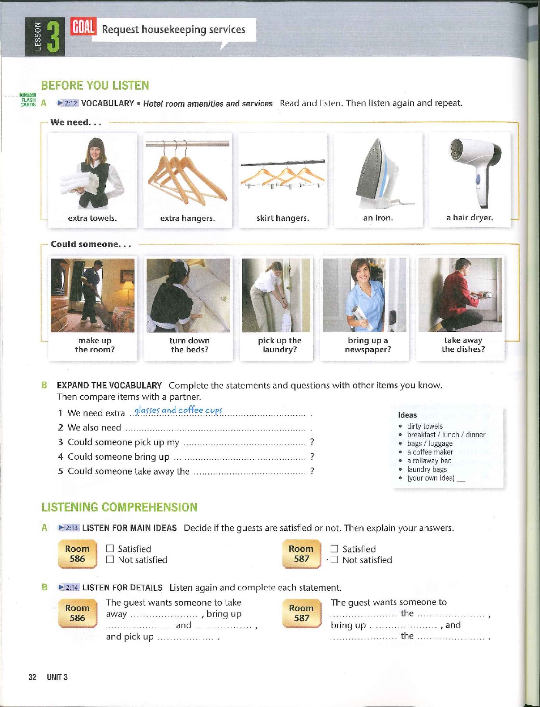
‘COAL Request housekeeping services LESSON BEFORE YOU LISTEN | éxiss A 242 VOCABULARY « Hotel room amenities and services Read and listen. Then listen again and repeat. extra towels. extra hangers. skirt hangers. an iron, a hair dryer. ~ ,- Could someone. .. ———— a” A make up turn down pick up the bring upa take away the room? the beds? laundry? newspaper? the dishes? B EXPAND THE VOCABULARY Complete the statements and questions with other items you know. Then compare items with a partner. Ideas dirty towels breakfast / lunch / dinner 3 Could someone pick up my ..........0..00-. _ cece 2 bags / luggage ° > © acoffee maker ° 4 Could someone bring up 5 Could someone take away the ........:ccccceseee re ereeerees ? arollaway bed laundry bags (your own idea} __ LISTENING COMPREHENSION A 253 LISTEN FOR MAIN IDEAS Decide if the guests are satisfied or not. Then explain your answers. C1 Satisfied C1 Satisfied C1 Not satisfied -C1 Not satisfied 284 LISTEN FOR DETAILS Listen again and complete each statement. The guest wants someone to take The guest wants someone to AWAY oes , bring up ee oe the v.06 a and cocseeaeeey bring up .........- seep and ANd pick UP visas veosesces sven we soaareusiis caret cases 32 UNIT3
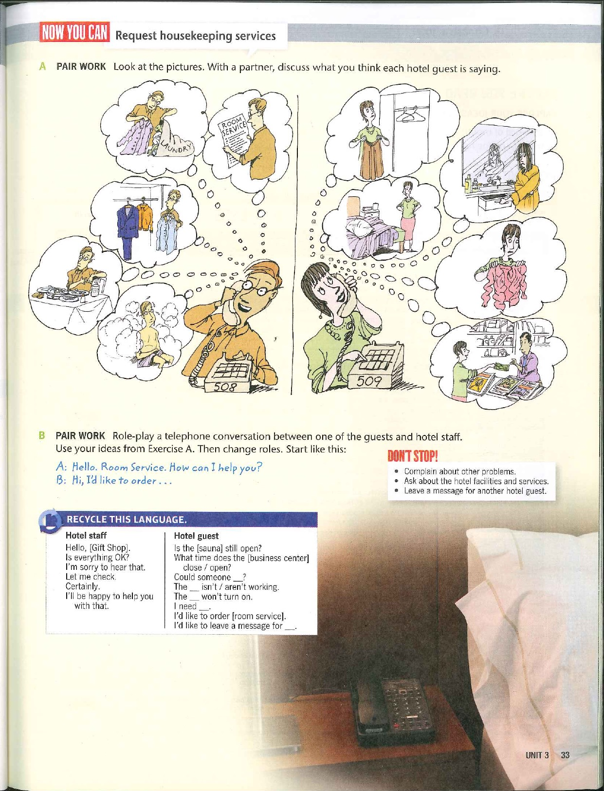
NOW YOU CAN Request housekeeping services A PAIRWORK Look at the pictures. With a partner, discuss what you think each hotel guest is saying. 5 PAIRWORK Role-play a telephone conversation between one of the guests and hotel staff. Use your ideas from Exercise A. Then change roles. Start like this: DONT STOP! A: Hello. Room Service. How can I help you? * Complain about other problems. B: Hi, Td like to order... © Ask about the hotel facilities and services. e Leave a message for another hotel guest. RECYCLE THIS LANGUAGE. Hotel staff Hotel guest Hello, [Gift Shop]. \s the [sauna] still open? Is everything OK? What time does the [business center] I'm sorry to hear that. close / open? Let me check. Could someone __? Certainly. The __ isn’t / aren’t working. l'll be happy to help you The __ won't turn on. with that. Ineed __. I'd like to order [room service]. I'd like to leave a message for __.
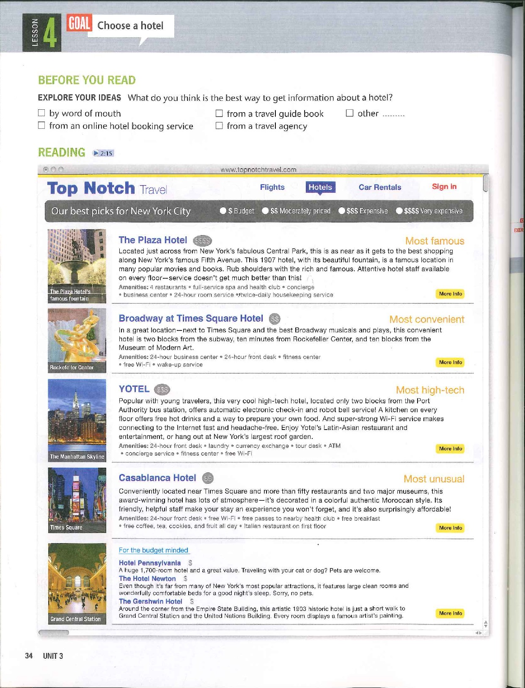
GOAL| Choose a hotel
LESSON
BEFORE YOU READ
EXPLORE YOUR IDEAS What do you think is the best way to get information about a hotel?
C1 by word of mouth OO from a travel guide book OU other .
1 from an online hotel booking service OO from a travel agency
READING zis
fone! notchtravel.com
Top Notch Tave Flights | Hotels | Car Rentals
The Plaza Hotel
on every floor—service doesn’t get much better than this!
Amenities; 4 restaurants * full-service spa and health club » concierge
ee * business center * 24-hour room service *xtwice-dally housekeeping service
famous fountain
Most famous
Located just across from New York's fabulous Central Park, this is as near as it gets to the best shopping
along New York’s famous Fifth Avenue. This 1907 hotel, with its beautiful fountain, is a famous location in
many popular movies and books. Rub shoulders with the rich and famous, Attentive hotel staff available
Museum of Modern Art.
'd-hour business center © 24-hour front dask © fitness center
ie wake-up service
Amenities
Broadway at Times Square Hotel @ Most convenient
In a great location—next to Times Square and the best Broadway musicals and plays, this convenient
hotel is two blocks from the subway, ten minutes from Rockefeller Center, and ten blocks from the
YOTEL @
entertainment, or hang out at New York's largest roof garden.
Amenities: 24-hour front desk © laundry » currency exchange » tour desk * ATM
© concierge service ° fitness center * free Wi-Fi
Casablanca Hotel @
Amenities: 24-hour front desk » ree Wi-Fi free passes to nearby health club ¢ free breakfast
° free coffee, tea, cookies, and fruit all day Italian restaurant on first floor
For the budget minded
Hotel Pennsylvania $
Abhuge 1,700-room hotel and a great value. Traveling with your cat or dog? Pets are welcome.
The Hotel Newton $
wonderfully comfortable beds for a good night's sleep. Sorry, no pets.
» The Gershwin Hotel §
Grand Central Station
UNIT 3
Most high-tech
Popular with young travelers, this very cool high-tech hotel, located only two blocks from the Port
Authority bus station, offers automatic electronic check-in and robot bell service! A kitchen on every
floor offers free hot drinks and a way to prepare your own food. And super-strong Wi-Fi service makes
connecting to the Internet fast and headache-free. Enjoy Yotel’s Latin-Asian restaurant and
Most unusual
Conveniently located near Times Square and more than fifty restaurants and two major museums, this
award-winning hotel has lots of atmosphere—it’s decorated in a colorful authentic Moroccan style. Its
friendly, helpful staff make your stay an experience you won't forget, and it's also surprisingly affordabiet
L
Even though {t's far from many of New York's most popular attractions, it features large clean rooms and
Around the corner from the Empire State Bullding, this artistic 1203 historic hotel Is just a short walk to
Grand Central Station and the United Nations Building, Every room displays @ famous artist’s painting.
*
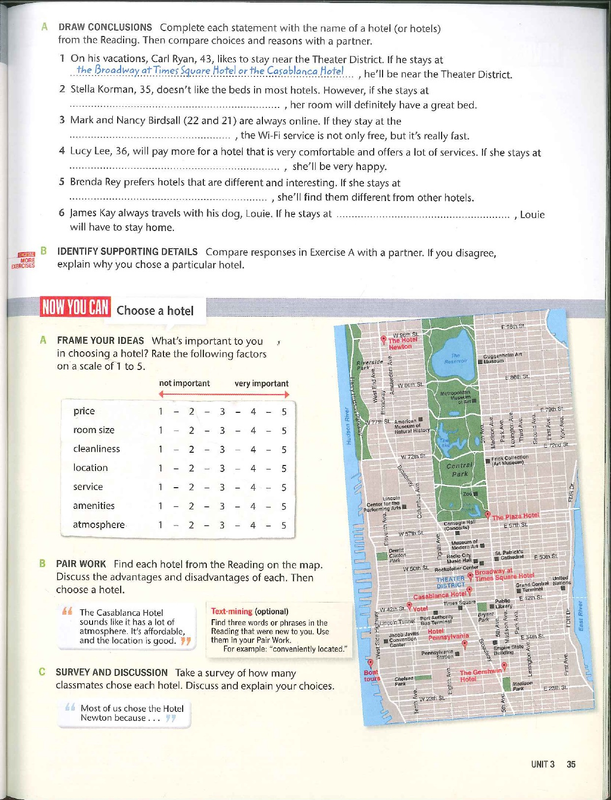
A DRAW CONCLUSIONS Complete each statement with the name of a hotel (or hotels) from the Reading. Then compare choices and reasons with a partner. 1 On his vacations, Carl Ryan, 43, likes to stay near the Theater District. If he stays at _ the Broadway at Times Square ‘Hotel or the Casablanca Hotel , he’ll be near the Theater District. 2 Stella Korman, 35, doesn’t like the beds in most hotels. However, if she stays at , her room will definitely have a great bed. 3 Mark and Nancy Birdsall (22 and 21) are always online. If they stay at the tieteeeeseeees inno steees , the WiFi service is not only free, but it’s really fast. | 4 Lucy Lee, 36, will pay more for a hotel that is very comfortable and offers a lot of services. If she stays at , she’ll be very happy. 5 Brenda Rey prefers hotels that are different and interesting. If she stays at , She'll find them different from other hotels. 6 James Kay always travels with his dog, Louie. If he stays at will have to stay home. gseu © IDENTIFY SUPPORTING DETAILS Compare responses in Exercise A with a partner. If you disagree, sents explain why you chose a particular hotel. TTT choose a hoter [a A FRAME YOUR IDEAS What’s important to you + in choosing a hotel? Rate the following factors ona scale of 1 to 5. wee an ae 3 not important very important = price 1-2-3 -4- 5) 5 ems rao room size 1-2-3 -+4-5 peers cleanliness 1-2-3 -4- 5 | ruecenteten location 1-2-3 -4- 5) Y service 1 =%9.3. 4. 6] g amenities 1 -2-3-4-5]| = “ I 2-3 -4- 5] } atmosphere 1 - ith SEisis esonst 5 PAIR WORK Find each hotel from the Reading on the map. wae Discuss the advantages and disadvantages of each. Then —TiERTER Times Square choose a hotel. = sims Hoe’. ‘ines Sau ££ The Casablanca Hotel Text-mining (optional) = eee 5 sounds like it has a lot of Find three words or phrases in the Epncatn Tune ooo a atmosphere. It’s affordable, Reading that were new to you. Use i 3 =H andthe location is good. 79 them in your Pair Work. E migimnter ae i For example: “conveniently located.” 3 veroegatg | 8 - is & z | = i} s in i © SURVEY AND DISCUSSION Take a survey of how many comes eae et a classmates chose each hotel. Discuss and explain your choices. ‘ S ma Oe path St Most of us chose the Hotel Newton because. . . UNIT3 35 |
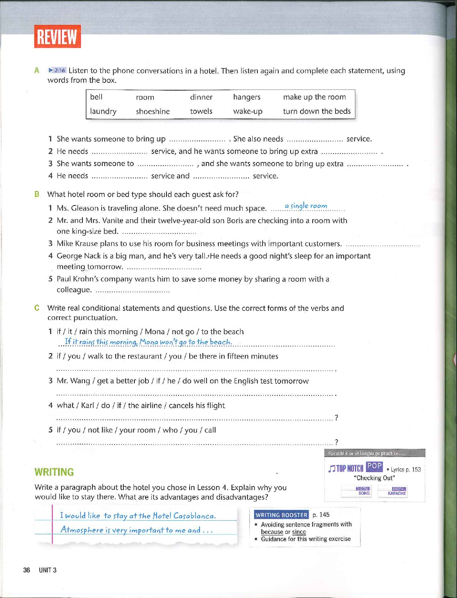
A 246 Listen to the phone conversations in a hotel. Then listen again and complete each statement, using words from the box. bell room dinner hangers make up the room laundry shoeshine towels wake-up turn down the beds 1 She wants someone to bring up . She also needs .. .. Service. 2 He needs cece service, and he wants someone to bring up extra , and she wants someone to bring up extra .....-.. 3 She wants someone to 4 He needs oo. ccecceeeerere SOPVICE AND cece eer eeeteee service. B What hotel room or bed type should each guest ask for? 1 Ms. Gleason is traveling alone. She doesn’t need much space. .... asingle room | 2 Mr. and Mrs. Vanite and their twelve-year-old son Boris are checking into a room with one king-size bed. | 3 Mike Krause plans to use his room for business meetings with important customers. .......... 4 George Nack is a big man, and he’s very tall»He needs a good night’s sleep for an important Meeting tOMOrOwW. .... cece . 5 Paul Krohn’s company wants him to save some money by sharing a room with a colleague. ........ C Write real conditional statements and questions. Use the correct forms of the verbs and correct punctuation. 1 if/it/ rain this morning / Mona / not go / to the beach aaneres jugel en th 2 if / you / walk to the restaurant / you / be there in fifteen For additional language practices. WRITING . SoToP NOTE EHSL « tyes 159 “Checking Out” Write a paragraph about the hotel you chose in Lesson 4. Explain why you ed KE would like to stay there. What are its advantages and disadvantages? __|_ Iwould like to stay atthe Hotel Casablanca. | p. 145 | ® Avoiding sentence fragments with because or since * Guidance for this writing exercise Atmosphere is very important to me and. 36 UNIT3
‘GAMES PAIR WORK 1 Create a conversation between the hotel guest in Room 816 and the woman at the front desk. Ask for hotel services or complain about a problem. Start like this: Hello? Is this the front desk? 2 Create a conversation between the man at the front desk and the caller. Use will. Complete the message slip. Start like this: A: Front desk. Can I help you? B: Yes, thanks. 14 like to leave a message for... schedules. Start like this: Hi. Tn checking in. The name's cssseesssceeeeees « Room) 816 3 Create a conversation between the two men at the front desk. Check into or check out of the hotel. Discuss hotel amenities, services, and ‘@® PHONE message FOG, Seen eee From:(Me Clg, Cms. Fmis. Please cai OnE Wants to see you Will call again Returned your call Message: Business Center 9:00 AM ~ 4:00 PM Gift Shop Lobby 9:00 AM ~ 9:00 PM | Fitness Center 3 6:00 AM - 10:00 PM Spa y 10:00 AM - 3:00 PM | Belmar Café 2 8:00 AM — 11:00 PM. NOWICAN UC Leave and take a message. Ui Check into a hotel. CO Request housekeeping services. Choose a hotel. ———
COMMUNICATION GOALS 1 Discuss a car accident. 2. Describe a car problem Cars and Driving Eight Habits of Bad Drivers How many drivers in your city... C1) speed? 8 weave through traffic? Clnone Clsome Cmost Dall Onone Osome Omost Call (2) tailgate? 6) don’t stop at red lights? Dnone Lsome Limost Call , Onone Lisome Limost Call Fy a WY ae i © talk on the phone? @ aon't signal when turning? none Osome Omost Lall Onone Lsome Limost [all G text while driving? 8) pass in a no-passing zone? Onone Lsome Limost Liall Hnone Lisome Cmost Call ‘ast A ©2419 VOCABULARY ¢ Bad driving habits Read and listen. & PAIRWORK Compare surveys with a partner. Then listen again and repeat. Discuss and explain your answers. speed | tailgate 44 Some drivers in my city talk on talk on the phone the phone while they’re driving. text while driving It’s terrible. 9 weave through traffic not stop at red lights not signal when turning pass in a no-passing zone || Lots of taxi drivers turn without signaling. | don’t like that. 9 38 (UNIT4
Brad: You won’t believe what | just saw. Mason: What? Brad: | just can’t stop thinking about Brad: Mason! You're right. It has been a that accident. long time. How’ve you been? you? How's the family? Brad: Great! | was just going in here Brad: This taxi was coming around the corner, and he hit a bus! Someone said the guy was texting while he Mason: | know. The driving in this city has always been bad, but now everyone’s texting and talking on the phone instead of paying to pick up a present for Marissa. was driving. attention to the road. Tomorrow's our fifth anniversary. driving a car. right around the corner. D FOCUS ON LANGUAGE Match each numbered sentence with one of the quotations from the Photo Story. 1 I've been fine. “Congratulations!” 2 | totally agree with you. “| can’t complain.” 3 I’m so happy for you! “Long time no see.” 4 I’m glad nothing terrible happened. 5 Really? That’s unbelievable. 6 It’s great to see you again. “Thank goodness for that.” “You can say that again!” “You've got to be kidding!” +7Aeanaoes — THINK AND EXPLAIN Discuss with a partner. 1 What did Mason mean when he said, “Let’s have a cup of coffee and catch up on old times.”? 2 What did Brad mean when he said, “You shouldn’t multitask while you’re driving a car”? SPEAKING DISCUSSION Discuss an accident you know about. Answer the questions. 1 Describe an accident you've heard about or seen in the news. What was the cause of the accident? — Where was it? —> UNIT4 38
HUME Discuss a car accident VOCABULARY Car parts A 221. Read and listen. Then listen again and repeat. EXTERIOR @) hood @trunk @yengine ~~ @iaillight @headlight (9) turn signal light bumper @tire » @) side-view mirror @® window door (9) emergency brake @ gearshift rearview mirror 0) seat belt B PAIR WORK Take turns identifying @ steering wheel 7 - the car part for each definition. a light at the back of the car @horn @) dashboard a light that indicates a turn a part the driver uses to turn the car 1 2 3 4 apart that cleans the front window @ gas pedal 5 a part that makes the car go faster 6 apart that keeps passengers safe () brake pedal during an accident 7 a light that helps the driver see the road (6) clutch 8 a place in the back for carrying things GRAMMAR The past continuous The past continuous describes an activity that continued during a period of Form the past continuous with was | time in the past or at a specific time in the past. . or were and a present participle. The car was making a funny sound while they were driving. The other driver was speeding. Were the headlights working? (Yes, they were. / No, they weren't.) ° Who was driving your car at 10:00 last night? Remember: The simple past tense describes a completed past action. Use when to combine a continuing past action with a completed action. | past continuous simple past tense p.131 It was raining when she had the accident. Tha Gast CORNCOUS: attr ies 40 UNIT4
4 GRAMMAR PRACTICE Complete the paragraph with the past continuous and the simple past tense. ee ee an accident yesterday. | slowly and I’m . attention. But | for a phone call. When it. Suddenly, the car in front of me . it. | certainly 8 &2:22 LISTEN TO ACTIVATE VOCABULARY Listen to the conversations about accidents. Write the number of each conversation in the box under the picture. Then listen again and write the car part or parts that were damaged in each accident. CONVERSATION MODEL A & 2223 Read and listen to a conversation about a ; car accident. A: | had an accident. B: i sorry. Are you OK? A: I’m fine. No one was hurt. 2:25 Ways to respond B: Thank goodness. How did it happen? With concern With relief A: Well, the other driver was tailgating, : Wea and he hit my car. How awful! That's good. B: Oh, no! Was there much damage? I'm sorry to hear that. ae hat's t 4 A: No. I'll only have to replace a taillight. That's terrible. 5 224 RHYTHM AND INTONATION Listen again and repeat. Then practice the Conversation Model with a partner. 3 NOW YOU CAN Discuss a car accident ae : = A Write what the driver was doing. Use the past continuous. B CONVERSATION ACTIVATOR With a partner, change the Conversation Model, using the pictures. Then change roles. Boar] VIDED A: | had an accident. B: . Are you OK? A : DONT STOP! Br. . How did it happen? © Ask more questions and ....... hit my car. about location, other f damage, the other . Was there much damage? driver, etc, CHANGE PARTNERS Discuss other accidents. UNIT4 = 41
/GOAL| Describe a car problem LESSON ff VOCABULARY Phrasal verbs for talking about cars A 2:26) Read and listen. Then listen again and repeat. turn off turn on 8 Complete the sentences with the two parts of each phrasal verb. 1 The car’s almost out of gas. Let’s go in here sol can . 2 It’s raining, and | can’t... eee the windshield wipers 3 Can | use your car this afternoon? | can 4 We have to return the rental car before 6:00. Let’s get something to eat, OK? 5. Leann’t preiwcnseneve the air conditioning ........c . It’s freezing in here! GRAMMAR Placement of direct objects with phrasal verbs Phrasal verbs contain a verb and a particle that together have their own meaning. main verb _ particle turn + on = _ start (a machine) Many phrasal verbs are separable. This means that a direct object noun can come before or after the particle. Turn on, turn off, pick up, drop off, and fill up are separable. direct object direct object I'll drop off the car. OR I'll drop the car off. Be careful! With a separable phrasal verb, if the direct object is a pronoun, it must come before the particle. Vl drop it off. (NOT I'll drop-off it.) .. They aren’t working. at 3:30 if you don’t need it then. armani early at the airport and Did you fill them up? (NOT Did you i!/up-them?) p. 131 Where will they pick us up? (NOT Where will they pick-up-us?) ¢ Nouns and pronouns: review PRONUNCIATION Stress of particles in phrasal verbs (227 Stress changes when an object pronoun comes before the particle. Read and listen. ee 1 A: I'd like to my car. 2 A: They need to the keys. y ° y B: OK. What time can you pick it up? B: Great. When do they want to drop them off? Then listen again and repeat. oe 42 UNIT4
8 GRAMMAR / VOCABULARY PRACTICE Write statements or questions, placing the direct objects correctly. Then practice reading the sentences aloud with a partner. Use correct stress. 1 The taillights aren’t working. (can’t /1/ on / them / TITY) sseerernereensemneransencesiiannnsasiveT MO LEHEieeany » 2 They’re expecting the car at 10:00. (off / drop / 10:00 / at / V’Il/ it) ‘ | 3 It’s too cold for air conditioning. (button / which / off / it/turns) . 4 Thanks for fixing the car. (it / pick / what time /1/ can / up) ... 5 The car is almost out of gas. (up / please /fill /it) oo... cece. CONVERSATION MODEL A P2228 Read and listen to someone describing a car problem. A: I’m dropping off my car. : Was everything OK? = Well, actually, the windshield wipers aren’t working. : I’m sorry to hear that. Any other problems? : No. That’s it. 2 Is the gas tank full? A: Yes. | just filled it up. SBPrpr>rs & 229 RHYTHM AND INTONATION Listen again and repeat. | Then practice the Conversation Model with a partner. ’ CG FIND THE GRAMMAR Find and underline two direct objects in the Conversation Model. 3 NOW YOU CAN Describe a car problem E a ; S = a ee stk. A NOTEPADDING Write two or more possible car parts for each car problem. won't open/close: the sunroof, the hood... _ won't turn on / off: | is/are) making a funny sound: _ (isn’t / aren’t) working: “ies 8 CONVERSATION ACTIVATOR With a partner, change the Conversation Model. Report a problem with a car. Use your notepad for ideas. Then change roles and problems. A: I'm dropping off my car. B: Was everything OK? A: Well, actually ......... a . . Any other problems? A: © CHANGE PARTNERS Describe other car problems. D- OPTION Role-play a conversation in which you report an RECYCLE THIS LANGUAGE. - accident when you drop off a rental car. Describe the accident. hie We th > | ‘es ie either *: . + Ww lappen: Is broken. Say what you were doing when you had the accident, using ie thew any damage? isn’t working. the past continuous. Then change roles. Start like this: | Was anyone hurt? won't turn on / off. . . is making a funny A: I'm dropping off my car. | had an accident. . . sound UNIT4 = 43
“GOAL Rent a car LESSON jf BEFORE YOU LISTEN A. 2330 VOCABULARY ¢ Car types Read and listen. Then listen again and repeat. a compact car a sports car a luxury car B PAIR WORK Which car would you like to drive? Which car would you 4 ¢ Vd like to drive the luxury not like to drive? Discuss with a partner, using the Vocabulary. Se ane Pe ne money: 7 44 Really? I'd rather drive the convertible, It’s really cool. 7? LISTENING COMPREHENSION A ©2381) LISTEN FOR DETAILS Listen. Write the car type that the speakers discuss in each conversation. 8B 232) LISTEN TO SUMMARIZE Listen again. Write a check mark if the caller rented a car. Then listen again. Write the reasons the other callers didn’t rent a car. 44 UNIT4
NOW YOU CANS eereyeyan A PAIRWORK Read about each customer at Wheels Around the World, an international car rental company. Choose the best type of car for each person. Discuss reasons with your partner. needs a car for local travel around Dallas. Car type: 2... Reason: ... Backgroun Customer Profile Car type: Reason: shopping, too. Customer Profile Car type: Reason: Background: Ms. Potter is a businesswoman from Boston, in the U.S. She is flying to Dallas to attend a business meeting. She doesn’t have a lot of luggage. She only Ms. Park is a tourist from Busan, Korea, visiting western Australia with her cousin. They enjoy hiking and fishing, and they're planning a road trip through the Lake District. They plan to drive on some rough roads, so they want a car with four-wheel drive. Car type: Reason: ... Car type: ....... Reason: Background: Ms. Kimura is a tourist from Osaka, Japan, visiting national parks and cities in the western part of the U.S. with her husband and their three children. They plan to do a lot of 8 NOTEPADDING Plan a trip for which you need a rental car. Destination Pickup date Drop off date Number of companions _ @ Acompact car is good for driving in a big city. It is easier to park in a small parking space. |!) Ir, Lucena is a banker from Curitiba, Brazil. His son is getting married in Valparaiso, Chile. He wants to drive to Valparaiso from the airport in Santiago, Chile with his wife and their two other chil __ for the wedding, They have a lot of clothes and presents for the wedding. Customer Profile Background: Dr. Andrade is from Pereira, Colombia. He’s flying to an international medical conference in La Paz, Bolivia. He has invited three doctors to dinner and after-dinner entertainment. He likes to drive. Activities © ROLEPLAY Witha partner, role-play a phone call to Wheels Around the World to rent a car for the trip you planned on your notepad. Choose one of the car types from the Vocabulary on page 44. Discuss the trip and your needs. Then change roles. RECYCLE THIS LAN Agent Hello. Wheels Around the World. What kind of car [do you need / would you like]? How many people are you traveling with? When will you [pick up / drop off] the car? Where will you drop off the car? Would you rather rent [a full-sized sedan] or [an SUV]? G Caller I'd like to make a reservation. I'd like a [compact car]. I'd rather have a [van]. I'm traveling with [my husband]. It's @ [business trip / vacation]. | [have / don't have] a lot of luggage. Do you accept credit cards? UNIT4 = 45
/COAL| Discuss good and bad driving BEFORE YOU READ honk their horns fe stare at other drivers pay attention observe the speed limit maintain a safe following distance Gas A 2:33) VOCABULARY « Driving behavior Read and listen. Then listen again and repeat. gesture at other drivers flash their lights at other drivers And don’t forget... speed tailgate talk on the phone text while driving weave through traffic not stop at sioplighis not signal while turning bass in a no-passing zone 8 WARM-UP In your opinion, which of the bad and aggressive driving habits are the most dangerous? Why? ’ READING oaaa We all know that not everyone drives well. Some people tailgate, gesture, weave through traffic, and honk—classic signs of the aggressive driving that causes one third of all car crashes. But more and more people are now talking on the phone, eating, and even watching TV as they drive— examples of the multitasking and inattentive driving that is a growing cause of accidents. Although we can’t control the actions of other drivers, the following defensive driving tips can help us reduce the risks caused by our own driving and the bad driving of others. Slow down. Driving too fast for weather or road conditions gives you less time to react to dangers on the road ahead of you. Also, as you increase your speed, your car becomes harder to control and takes longer to come to a stop. FEATURE ARTICLE BJ Follow the “3-second rule.” The greatest chance of a collision is in front of you. Maintaining a safe following distance of three seconds behind the car in front of you will give you enough time to react if that car slows or stops suddenly Ei Pay attention to your surroundings. Be aware of where other vehicles are and what is happening on the road, Check your rearview and side-view mirrors frequently. Before changing lanes, always look aver your shoulder to check your “blind spots’—areas to the side and rear of your car that aren't visible in your mirrors. EG] signal your intentions early. Use tum signals to let other drivers know what you're going to do before you do it. This helps other drivers understand your plans so they can make their own defensive driving decisions. Expect the unexpected. Assume that other drivers will make mistakes. Plan ahead what you will do if another driver breaks a traffic law or cuts you off. For example, don’t assume that a vehicle coming to a stop sign or a red light is going to stop. Be prepared to stop your own car if necessary. fF Don't take others’ aggressive driving personally. Other people will drive badly. They're not thinking about you. If you permit them to make you angry, it can affect your own driving and lead to an accident. When other drivers show signs of aggressive driving, just slow down or pull over to let them pass 46 UNITS
gam 8 CRITICAL THINKING How can defensive driving help drivers avoid accidents? Explain your opinion, 4 UNDERSTAND FROM CONTEXT Circle the correct word or phrase to complete each statement. 1 A person who is doing more than one activity at the same time is (multitasking / driving defensively). 2 Following the “3-second rule” means maintaining a safe (road condition / following distance). 3 Tailgating, gesturing, and honking are three examples of (inattentive / aggressive) driving. 4 Not paying attention is an example of (inattentive / aggressive) driving. 5 Collision and crash are two words that mean (danger / accident). 6 A part of the road that you can’t see in your mirrors is called a (blind spot / lane). using the Vocabulary and examples from the Reading or from your own experience. NOW YOU CA Discuss good and bad driving A PAIRWORK Complete the survey and then compare surveys with a partner. Rate each behavior on a scale of 1 to 3. | Making rude gestures at others 1 = Doesn't bother me 2=Annoys me || Honking excessively 3.=Makesme very angry Tea] Staring angrily at other drivers B Tailgating to make others go faster or get out of the way [] Flashing lights to signal others to move to another lane oO Weaving in and out of traffic O Driving too slowly Oo Cutting other drivers off If your score is. > 20-24 Calm down. Don't take other people's bad driving personally, They're not thinking about you. Total your score. > 13-19 Stay focused. Don't allow bad drivers to distract you. Pay attention to your own driving instead. } 8-12 Congratulations! You're as cool as a cucumber. B NOTEPADDING Describe what good and bad drivers do. © DISCUSSION Discuss good and bad | Use the Vocabulary. driving. What percentage of drivers do | you think are bad or aggressive? Use your | Good drivers... __ Aggressive drivers . . notepad for support. | use their turn signals flash their lights at others. sf | Fexemining (optional) .¢ words ot phrases in | Find and undetine three words or phvaces 7 the Reading that were ne\ in your Discussion. . mi ~ ¥For example: “slow down UNIT 4
: po REVIEW A 235 Listen to the conversations. Then complete the statements with words and phrases for bad or aggressive driving. 1 The other driver just 2 Jim’s mother says he’s 3 The driver behind them is . 4 The driver opened his window and .... 5 The driver is 6 The driver is 7 The driver is .. - at them. B_ Read each definition. Write the name of the car part. 1 a window on the top of the car: 3 a window the driver looks through to see the cars in front: 4 aplace where the driver can find information about speed and amount of gas: 5 apart that people wear to avoid injuries in an ACEONE wennsmeaens 6 apart that prevents the car from moving when It’s Parked: oes eereeee S Complete each statement or question about driving. Use the past continuous or the simple past tense. Not pay attention have 2 The other driver . an accident. | at the stop sign, and She «0.0.0.0... cece eee a seat belt. occur when they D Complete each conversation, putting the phrasal verbs and objects in order. 1 A: Won't the car start? : No.1} can’t : Do you need gas? up / fill /it : Hey, you haven’t turned on your headlights. B: A B: Yes. Please ... A B : Oops. Thanks. | can’t believe | forgot FO weteresasirns: « urn / on / them 4 A: Can All Star Limo drive us to the airport? Bz Yes. THey’Il ....c..cecesessseecseeceeeseeeee at 5:30. us / pick / up WRITING 48 UNIT4 Write a short paragraph about the differences between good and bad drivers. Include language from pages 38, 44, and 46 in your paragraph. STOP NOTH LEELA «yes. 153 “Wheels around the World” WRITING BOOSTER Mum uy Connecting words and sentences; And, In addition, Furthermore, and Therefore ® Guidance for this writing exercise
GROUP STORY Together, create a story about the pictures. Each person adds one sentence to the story. Begin with January 16. Use the past continuous and the simple past tense in your story. Start like this: They picked up their rental car in Temuco on Janvary le... PAIR WORK 1 Create conversations for the people in the first three pictures. For example: A: Wei like to renta car. B: Certainly. What kind of a car do you need? 2 Create a phone conversation for the fourth picture. The woman reports the accident to Multi Car Rentals. The agent responds. Say as much as you can. For example: We had an accident. My husband was... MULTI CAR RENTALS Aug é 0 Discuss a car accident. U Describe a car problem. CO Renta car. 1 Discuss good and bad driving.
COMMUNICATION GOALS 1 Ask for something in a store. 2. Make an appointment at a salon or spa. 3. Discuss ways to improve appearance. 4 Define the meaning of beauty. Personal Care and Appearance PREVIEW massage: manicures Swedish, therapeutic, or shiatsu 4 Make an appointment with our personal trainers. spinning...and more The latest in exercise equipment Ast A. (3:02 VOCABULARY ° Salon services Read and listen. Then listen again and repeat. a haircut a facial a shave a manicure a pedicure 8B PAIRWORK With a partner, discuss the Apex Club services. What are the advantages of combining exercise and fitness with spa and massage services in one club? 50 «UNITS
ENGLISH FORTODAY'S WORLD Understand English speakers from different language backgrounds. Receptionist = French speaker Receptionist: Can | help you, sir? Client: Would it be possible to get a massage? | don’t have an appointment. Receptionist: Well, actually, you're in luck, Our eleven o'clock just called to cancel his appointment. Client: Terrific. Receptionist: Let me show you to the dressing area.” you think I could haircut come to? 110 euros in all. 1 How does the client ask for a massage? 2 How does the receptionist indicate that the client can have a massage without an appointment? 3 How does the client ask about the price of a massage and a haircut? | SPEAKING A PERSONALIZE Check the word or phrase that best describes how often you get these salon services. Then compare charts with a partner. monthly haircut Client: Thanks. Oh, while I’m at it, do Receptionist: Yes. But you might have to wait a bit. We don’t have anything until 12:00. Client: Not a problem. By the way, how much will the massage and Client: Great. One more question. Is it customary to tip the staff? Receptionist: Well, that’s up to you. But most clients give the stylist and the masseuse a euro or two each. get a haircut, too? Receptionist: Let’s see . . . it will be D FOCUS ON LANGUAGE Answer the questions, using language from the Photo Story. 4 What phrase does the receptionist use to tell the client the total cost of the salon services? 5 How does the client say “That’s OK”? 6 What expression does the receptionist use to tell the client that the amount to tip is his decision? once in a while never facial manicure pedicure im o shave o im oO o O,O}O}O}O|oO massage O/O}OJO|O/O | 6 | think massages are great for backaches. Amassage helps me feel better. 7" 8 PAIR WORK In your opinion, what is the value of each service? Compare opinions with a partner. Ashave? Are you kidding? Ido that myself. | don’t go to salons! UNIT 5 51 | |
‘GOAL Ask for something i in a store Sc VOCABULARY Personal care products ARDS A 304 Read and listen. Then listen again and repeat. 2 abrush 3 a toothbrush 4 arazor 5 anail clipper 6 anailfile 1 soap 2 deodorant 3 shaving cream 4 aftershave | } : as | fl r =11 makeup $$$ | 12 lipstick = 14 eye shadow 13 mascara 5 toothpaste 6 shampoo 7 hairspray 8 sunscreen * 9 dental floss 10 hand and body lotion 15 face powder 16 nail polish ) 58 > #05 LISTEN TO INFER Listen and circle the kind of product each ad describes. 4 All Over (face powder / hand and body lotion) 5 Scrubbie (toothpaste / shaving cream) 6 Maximum Hold (hairspray / shampoo) 1 Spring Rain (shampoo / deodorant) 2 Rose (soap / nail polish) 3 Pro-Tect (sunscreen / hand and body lotion) GRAMMAR Quantifiers for indefinite quantities and amounts Use some and any with both plural count nouns and non-count nouns. some: affirmative statements any: negative statements We bought some combs. Now we have some. | don't have any razors. | don't want any. They need some soap. We have some. We don't want any makeup. We don’t need any. some or any: questions Do you want any aftershave? OR Do you want some aftershave? Does she have any nail files?’ OR Does she have some nail files? 52 UNITS
Use a lot of or lots of with both plural count nouns and non-count nouns in statements and questions. They have the same meaning. That store has a lot of (or lots of) razors. They don’t have a lot of (or lots of) sunscreen. Do th lot of makeup? ey have a lot of (or lots of) eup’ pai Use many and much in negative statements. © Some and any: indefiniteness or ai * Too many, too much, and enough many: with plural count nouns much: with non-count nouns © Comparative quantifiers fewer | i j | They don’t have many brands of makeup. The store doesn’t have much toothpaste. and less | | GRAMMAR PRACTICE Complete the conversation between a husband and wife packing for a trip. Dana: Do we have (1 any / many) shampoo? Neil: Yes. We have (2 many / lots of) shampoo. Dana: And Maggie uses (3 much / a lot of) sunscreen. Is there (4 many / any)? Neil: No, there isn’t (5 some / any). And we don’t have (6 much / many) toothpaste, either. Ican pick (7 some / any) up on my way back from work. Dana: Hey, Adam’s shaving now. Does he need (8 any / many) shaving cream? mE ss Neil: He doesn’t shave every day. He can use mine! | CONVERSATION MODEL A %306 Read and listen to someone looking for personal care products in a store. : Excuse me. Where would I find sunscreen? : Sunscreen? Have a look in the cosmetics section, in aisle 2. : Actually, | did, and there wasn’t any. : I’m sorry. Let me get you some from the back. Anything else? 3 Yes. | couldn’t find any razors either. Brnrwp> : No problem. There are some over there. |’ll show you. 8 &3:07 RHYTHM AND INTONATION Listen again and repeat. Then practice the Conversation Model with a partner. © FIND THE GRAMMAR Find and underline the four quantifiers in the Conversation Model. E OW YOU CAN ee something in a store A CONVERSATION ACTIVATOR. With a partner, use the store directory to change the | ge Conversation Model. Use the Vocabulary and quantifiers. Then change roles. A: Excuse me. Where would I find .........? Br ssssssesss ? Have a lookin .. . } DIRECTORY A: Actually, | did, and there . any. . 7 Aisle B: I’m sorry. Let me get you ......... from the back. Anything else? Hair Care 3 AAG iscxnesuess Tooth Care 4 4 RECYCLE THIS LANGUAGE. j DONT STOP! 1X | Skin Care 2 . How much [is that aftershave / are those nail clippers]? Nall Gare © Ask about other Can | get this [shampoo] in a larger / smaller size? gh Gare 2 personal care Can I get this lipstick in [black]? Makeup products. Do you have any cheaper [razors]? oe eee — bo — = — | Shaving Supplies 1 B CHANGE PARTNERS Practice the conversation again, asking for other products.
54 CONVERSATION MODEL A &08 Read and listen to someone make an appointment for a haircut. A: Hello. Classic Spa and Salon. B: Hello. This is Monica Morgan. I’d like to make an appointment for a haircut. : When would you like to come in, Ms. Morgan? : Today, if possible. : Let me check. ... Sean has an opening at 2:00. : Actually, that’s a little early for me. Is someone available after 4:00? A: Yes. Yelena can see you then. a> wm > 6B 3209! RHYTHM AND INTONATION Listen again and repeat. Then practice the Conversation Model with a partner. ’ GRAMIMAR Indefinite pronouns: someone / no one / anyone Someone, no one, and anyone are indefinite pronouns. Each refers to an unnamed person. Use indefinite pronouns when the identity of the person is unknown or unimportant. Affirmative statements Questions Someone : is available. Can : anyone | wash my hair? No one someone = Someone jg waiting for the manicurist. Isthere *"YON© at the front desk? Noone : someone : | saw someone at the front desk. Did you see anyone waiting for a shave? someone Negative statements Be careful! h There isn't anyone waiting. Use anyone, not no one, with the p. 133 I didn't see anyone atthe salon. _ negative form of a verb. © Indefinite pronouns: something, | didn’t speak to anyone. anything, everything, and NOT | didn’t speak to ne-ene. nothing A ©8350! LISTEN TO ACTIVATE VOCABULARY AND GRAMMAR Listen to the conversations. Complete each statement with someone or anyone and the salon service(s). 1 They can’t find .... .. this afternoon. wee CAN GIVE HIM A eects 3 Thereis ... who can give her a 4 There isn’t .. vee. Who can give hiM a ....... ee today. UNIT 5
58 GRAMMAR PRACTICE Complete each statement or question with someone, no one, or anyone. In some cases, more than one answer is correct. 1 There’s ..Semeene.(Of ne one) at the front desk. 2 They didn’t tell ....... . it would be a long wait. 3 Did you see .......:..00 s. giving a manicure? A Ididn’task 0. about the price. 5 There will be... here to give you a pedicure in a few minutes. can cut your hair at 12:30 if you can wait. Please don’t tell ... the price. It was very expensive! foe PRONUNCIATION Pronunciation of unstressed vowels VIDEO coach 10 12 «+. Called and left you this message while you were getting your shampoo. There wasn’t called for an appointment. there when she . about the I didn’t speak to bad haircut. told me the salon offers shiatsu massage now. A 3:1 The vowel in an unstressed syllable is often pronounced /a/. Read and listen, paying attention to the syllable or syllables marked with /a/. Then listen again and repeat. ° e e@e @eie @ee eo @e e 1 ma ssage 2 fa cial 3 ma ni cure 4 pe di cure 5 de o do rant fal Jaf fal fal fal faf 8 Now practice saying the words on your own. NOW YOU CAN] Make an appointment at a salon or spa A CONVERSATION ACTIVATOR With a partner, change the Conversation Model, using services and staff from the list. Then change roles. A: Hello. 3.2. B: Hello. This is ......... . ’d like to make an appointment FOF wccssses F A: When would you like to come in, ......... ? B: if possible. Let me check. .. . B: Actually, that’s a little ... | available . ? AG YES. ... | DONT STOP! Ask about other services. © Ask about prices and payment. has an opening at ......... - ... for me. Is someone can see you then. Is someone available on / at __? How much is [a pedicure]? How long is [a massage]? Can someone [wash my hair]? i | need [a shave] | Is the tip included? Do you accept credit cards? 8 CHANGE PARTNERS Practice the conversation again, making an appointment for other services. RECYCLE THIS LANGUAGE. RY wend FITNESS CENTER Aaircut Pedicur, Christopher/Diang e Karin/Car| Shaye ote Nick/Giorgi Manicy ue ints re Sonia/Marie sage Vladimi Persona} it/Edouard training 'gor/Betty UNITS: 55
Discuss ways to improve appearance
BEFORE YOU READ
PREDICT Look at the photos and title of the article. What questions do you think the people will ask Dr. Weiss?
READING a2
Some people consider cosmetic
surgery no more serious than visiting
a spa or a salon. But others say,
“| think 'll pass.” They're aware that
cosmetic surgery is, in fact, surgery,
and surgery should never be taken
lightly. Fitness editor Dr. Gail Weiss
answers readers’ questions about
{ cosmetic surgery.
Dear Dr. Weiss:
Pm at my wits’ end with my face. I have wrinkles and sun damage.
I'm only 30, but I look 50. Do you think a face-lift is an option for me?
Josephine
Dear Josephine:
This popular and effective surgery lifts the face and the neck in one
operation. But a face-{it is surgery, and afterwards you will have to stay
| home for a number of days. It takes time to recover, Before you decide
i to have a face-lift, ask your dermatologist or a cosmetic surgeon about
chemical peel. A chemical peel removes the top layer of skin and can
Imorove the appearance of the skin without surgery. Compared to surgery, a
half-hour visit to your dermatologist wauld be a piece of cake! Good luck!
Gail Weiss, M.D
BEFORE surgery AFTER surgery
Dear Dr. Weiss:
I'm a 24-year-old man who is already losing his hair. Dr. Weiss, I'm
looking for a wife, and I'm afraid no woman will want to marry a
25-year-old bald guy. | need some advice. Calvin
Dear Calvin
There are several surgical procedures which a cosmetic surgeon can oartorm
to helo treat hair loss and restore hair for both men and women. But f that's
riot practical, remember that some of the world's most attractive men are bald!
Gall Weiss, M.D.
Dear Dr. Weiss:
When I was young, | was a chocoholic. | ate a lot of chocolate, but
Inever gained any weight. Now that I'm older, | can’t eat anything
without gaining weight! 've heard that liposuction is the answer to an
overweight person's dreams. Is that true? Dawson
Dear Dawson:
it’s true that lipasuction can remove fal deposits that don’t respond to
dieting and exercise, but I's expensive and can be dangerous. !t would be
a good idea to ask your doctor for same help in dieting first. Than, if you
are Lneuccessful, be sure to find @ surgeon with a lat of experience before
deciding on liposuction Gail Weiss, M.D
A PARAPHRASE Find and circle each underlined expression in the article. |
Then circle the correct word or phrase to complete each statement.
| 1 If you say | think I’ll pass, you mean (“No, thanks” / “That’s a great idea”).
2 Ifyou are at your wits’ end about something, you are (happy / unhappy) about it.
3 It takes. time to recover means that you (will / won’t) feel better immediately.
4 Something that is a piece of cake is (easy / difficult). |
B UNDERSTAND FROM CONTEXT With a partner, find these procedures in the Reading and
write a definition for each one.
1 liposuction ........
2 hair restoration ...........-
56 UNITS
3 aface-lift
4 achemical peel .......
© CONFIRM CONTENT AND APPLY INFORMATION Complete the chart with information trom the article. Then, with a partner, give your own advice for each person. Josephine Calvin = Dawson SES \ a definitely | maybe probably hese ne jot not! diet? ce) fe} fe) exercise? massage? hair restoration? cosmetics and makeup? facials? face-lifts? liposuction? chemical peels? On the notepad, write advantages and disadvantages. OC}O/O/O]O]O/o/o O/O/O;/O;O}O/O0/o O/O/}O] 0] 0/0] 0; 0/0 8 NOTEPADDING Choose one method you would try and one method you would not try. _|__Method _Advantage(s)_Disadvantage(s) ouldtry diet free,safe Itshard to do! _Method Advantage(s) Disadvantage(s) © DISCUSSION What's the best way to improve your appearance? What ways would you NOT try? Explain. Use your notepad for support. Text-mining (optional) Find and underline three words or phrases in the Reading that were new to you. Use them in your Discussion. For example: “surgical procedures.” UNIT5 = 57 —
‘GOAL Define the meaning of beauty LESSON BEFORE YOU LISTEN A ©3413 VOCABULARY ° Discussing beauty Read and listen. Then listen again and repeat. physical features skin, hair, body shape and size, eyes, nose, mouth, etc. beauty the physical features most people of a particular culture consider good-looking attractive having a beautiful or pleasing physical or facial appearance unattractive the opposite of attractive youth appearing young; the opposite of looking old health the general condition of one’s body and how healthy one is 68 EXPLORE YOUR IDEAS Write a statement or two | describing, in your opinion, the characteristics of | An attractive woman has long hair and dark eyes. an attractive man or woman. C PAIR WORK Use your statements to talk about the physical features you consider attractive for men and women. Use the Vocabulary. 46 Inmy opinion, attractive people have... 7? | LISTENING COMPREHENSION A 384 LISTEN TO RECOGNIZE SOMEONE’S POINT OF VIEW Listen to the interview. Check all } of the statements that summarize Maya Prasad’s and Ricardo Figueroa’s ideas about beauty. Ricardo Figueroa CO Physical beauty is not important at all. Maya Prasad C1 I'm very lucky to be so beautiful. C All the contestants were beautiful. I was just lucky. C1 Both physical beauty and inner beauty are important. O Physical beauty only lasts a short time. O Only inner beauty is important. C1 Prasad represents an almost perfect combination of inner and outer beauty. C1 Love makes people beautiful. B 3:5) LISTEN TO TAKE NOTES Listen and take notes about what Figueroa says about each of the qualities below. Then compare your notes with the class. _ warmth: | . patience: | __ goodness and kindness: 58 UNITS
© DISCUSSION Talk about one or more of the questions. 1 In what ways do you agree or disagree with Prasad’s and Figueroa’s ideas about beauty? 2 Do you think the Miss Universal Beauty contest sounds better than the usual beauty contest? Why or why not? 3 Do you think there should be beauty contests for men as well as for women? Why or why not? What in your opinion is the difference between a woman’s beauty and a man’s beauty? 4 How do you explain these words in the song Prasad talks about: “Do you love me because I’m beautiful, or am | beautiful because you love me”? NOW You CAN Define the meaning of beauty : aoe Sele 4 NOTEPADDING Look at the four photos. What qualities 1 Outer beauty Inner beauty of beauty do you find in each person? Write notes. She has beautiful skin. She looks warm and friendly. Outer beauty Inner beauty Outer beauty 3 Outer beauty Inner beauty \_4. Outer beauty Inner beauty 8 PAIR WORK Discuss the qualities of beauty you found in the people in the pictures. Compare your opinions, Use your notepads for support. © DISCUSSION Define the meaning of beauty. 4@ | think beauty is hard to describe. It’s a combination of things. | consider my grandmother really beautiful because... 7? UNIT 5: 59
[A 386 Listen to the conversations. Infer what kind of product the people are discussing. Complete each statement. 1 Hawaii Bronzer is a brand of 2 Swan is a brand Of 0.0... ce eeeee tere eeeeeeeee ete eeeeenenee : 3 Truly You is a brand of ....-2-.sesseeeeseeesseeseceeeessesessntnets « 4 Mountain Fresh is a brand of 5 Silk ’n Satin is a brand of ...... 6 Fresh as a Flower is a brand of .... Complete each statement or question. 1 There aren’t (many / much) customers in the store right now. 2. Do they sell (any / many) sunscreen at the hotel gift shop? | forgot to pack some. 3 Your sister doesn’t want (some / any) body lotion. 4 She doesn’t wear (much / some) makeup. She doesn’t need to—she has beautiful skin. 5 Myson uses (any / a lot of) shaving cream. 6 There’s (anyone / someone) on the phone for you. Do you want me to take a message? 7 There are (any / a lot of) salons in this neighborhood. Complete each statement about services at a salon or spa. 1 There’s nothing like a professional when youre sick and tired of your beard. 2 If your hair is too long, get a .... 3 In the summer, before you wear sandals for the first time, your feet will look great if you get a 4 When your hands are a mess, YOU CaN Get A... eee sree 5 When your muscles are sore from too much work or exercise, a .. can help. Complete each conversation with the correct procedure. 1 A: Look so old! Look at my neck and my eyes. B: Why don’t you get (a massage / a facelift)? 2 A: My back and shoulders are sore from too much exercise. B: They say (a chemical peel / a massage) can really help. 3 A: Look at this! I’m getting bald! B: Have you thought about (liposuction / hair restoration)? WRITING Re-read the letters on page 56. Choose one letter and write a response, using your own opinion and making your own suggestions. Explain what you think is OK or appropriate for men and Women. —_ | arene _— v.47 © Writing a formal letter 3 Guidance far this writing exercibe FiTopHOTCH BREDA « tyricsp. 153 “Piece of Cake” Poca ‘SONG 60 UNITS L —_
ORAL REVIEW CONTEST Look at the picture for a minute, and then close your books. With a partner, try to remember all the products and services in the picture. The pair who remembers the most products and services wins. PAIR WORK 1 Create a conversation between the client and the clerk at the front desk of the salon, Start like this: Hi. T have a 2:30 appointment for... 2 Create a conversation for the man and woman waiting for salon services. For example: What are you here for? C1 Ask for something in a store. YO Make an appointment at a salon or spa. UO Discuss ways to improve appearance. C1 Define the meaning of beauty. | | | UNITS «61
1. Talk about food passions. 2. Make an excuse to decline food. 3. Discuss lifestyle changes. 4 Describe local dishes. 2-3 servings per day for calcium 2-4 servings per day for vitamins and fiber 6-11 servings per day for carbohydrates _ A Look at the suggestions above for eating a healthy diet. Do you think 2-3 servings a day this diet is healthy? Why or why not? B Complete the chart about the foods you eat each day. Compare charts 3-5 servings a day with a partner. © DISCUSSION How are the Healthy Diet suggestions different from your chart? Which do you think is a healthier diet? Explain. More than 5 servings'a day 62 UNIT6
Rita: Didn’t you tell me you were avoiding sweets? Joy: | couldn’t resist! | had a craving for pretty good. How many calories are in that thing anyway? ‘a. Want to try some? Rita: . But | think I'd better, pass. I’m avoiding carbs.* Joy: You? | don’t believe it. You never used to turn down chocolate! watching my. *carbs (informal) = carbohydrates Joy: Hey, you only live once! £ FOCUS ON LANGUAGE Find an underlined sentence or phrase in the Photo Story with the same meaning as each of the following. 1 don’t know. occ 2 Ishould say no. .......0.0... 3 | couldn’t stop myself. 0.00.0... 4 |'m trying not to get heavier, SPEAKING Read the descriptions of diets. Would you ever try any of them? Why or why not? The Mushroom Diet For weight loss. pac beets or us two weeks— ae muon dish. | The Vegan Diet For better health and Prevention of disease. Avoid all animal products, including dairy and eggs. Eat lots of grains, beans, vegetables, and fruits. 7 say no to 5 |really wanted... 0... 6 lagree... 8 Wiltry alittle. ee 46 | don’t believe in the Atkins Diet. A lot of meat, eggs, and cheese doesn’t sound like the right balance of foods for good health. The Juice Fast For better health and prevention of disease, Instead of food, drink four fo six glasses of fresh vegelable and fruit juices for anywhere from three days to three weeks. Get plenty of rest and avoid exercise during the fast. UNIT 6 63
COAL Talk about food passions VOCABULARY Food passions A ® 821 Read and listen. Then listen again and repeat. | can’t stand fish. I'm not crazy about chocolate. | don’t care for steak. I’m not much of a pizza eater. I’m crazy about seafood. \’m a big meat eater. \'m a big coffee drinker. I’m a chocolate addict. V'm a pizza lover. B »>3:22) LISTEN TO ACTIVATE VOCABULARY Circle the correct words to complete each statement about the speakers’ food passions. 1 She (is crazy about / doesn’t care for) sushi. 2 He (loves / can’t stand) asparagus. 3 She (is a mango lover / doesn’t care for mangoes). 4 He (is a big pasta eater / isn’t crazy about pasta). 5 She (is an ice cream addict / can’t stand ice cream). sushi - = mangoes pasta ice cream asparagus © PAIRWORK Tell your partner about —¢¢_|'m really a seafood lover, some of your food passions. but I'm not crazy about clams. 77 GRAMMAR Use to / used to Be carefull Use use to and used to + the base form of a verb to describe things : They didn’t use to... that were true in the past but are no longer true in the present. They used to... BUT pid they use to used to be crazy about candy, but now | don’t care for it. She didn't use to eat cheese, but now she has it all the time. Did you use to eat a lot of fatty foods? Yes, Idid. 4, _ Yes, | used to. p. 134 No, | didn't. No, | didn’t use to. ® Use to / used to: use and form, What did you use to have for breakfast? (Eggs and sausage. But not anymore.) common errors Why did you use to eat so much? (Because | didn’t use to worry about my health.) acetone ones would + base form, common errors 64 UNITG 'm not much of a coffee drinker. 2 <8
GRAMMAR PRACTICE Use the context to help you complete each sentence with used to or didn’tuse to. Then write two sentences about yourself. 1 Gary .... go out to eat a lot, but eat a lot of fatty foods, now he eats at home more often. but now he avoids them. 2 Nina eat a lot of pasta, but .. drink a lot of water, but now she does. now he has several glasses a day. 3 Vinnie . ae but now he’s a coffee a ... drink a lot of coffee, like salad, but now she has salads several times a week. eat a lot of vegetables, 9 (used to) I .. hate seafood, but now 10 (didn’t use to) | PRONUNCIATION Sound reduction: used to » 223 Notice how the pronunciation of to in used to changes to /ta/ in natural speech. Read and listen. Then listen again and repeat. Practice the sentences on your own. e. 3 Sally used to be crazy about fries. e. 1 | used to be a big meat eater. 2 Jack used to like sweets. CONVERSATION MODEL A 324 Read and listen to two people talking about e. 4 They didn’t use to like seafood. their food passions. A: Are you a big coffee drinker? B: A B; : Definitely. I’m crazy about coffee. What about you? : [used to drink it a lot. But recently I’ve cut back. : Well, | couldn’t live without it. 3:25 RHYTHM AND INTONATION Listen again and repeat. Then practice the Conversation Model with a partner. | : E NOW YOU CAN] Talk about food passions A NOTEPADDING Complete the notepad with foods you like and dislike. CONVERSATION ACTIVATOR With a partner, change the Conversation Model, exchanging information about your food passions. Talk about what you used to and didn’t use to eat or drink. Use your notepad and the Vocabulary from page 64. A: Are you a big ... B: A: © CHANGE PARTNERS Talk about other food passions. DONT STOP! * Ask about more foods and drinks. . What about you?
GOAL Make an excuse to decline food
CONVERSATION MODEL
A 3:26 Read and listen to a dinner guest make an
excuse to decline food.
: Please help yourself.
: Everything looks great! But I’ll pass on the chicken.
: Don’t you eat chicken?
: Actually, no. I'm a vegetarian.
: I’m sorry. | didn’t know that.
rPrmprea >
§ 327’ RHYTHM AND INTONATION Listen again and repeat.
Then practice the Conversation Model with a partner.
» 3:28 Variations
{t's not a problem,
Don’t worry.
I'm fine.
VOCABULARY Excuses for not eating something
\ 3129 Read and listen. Then listen again and répeat.
Coffee doesn’t I'm ona diet. /
agree with me. Vm trying to lose weight. It’s against my religion.
I'm allergic to chocolate. I'm avoiding sugar. | don’t care for broccoli.
& > 3:30 LISTEN TO ACTIVATE VOCABULARY Listen to each conversation. Write the letter to
complete each statement. Then listen again to check your work. -
ceeseeeee 1 Cindy... a isa vegetarian.
ees 2 Frankie... b is avoiding fatty, salty foods.
. 3 Marie... ¢ is trying to lose weight.
4 Susan... d is allergic to something.
. 5 George... e doesn’t care for seafood.
| lly don’t eat frie 4
© PAIR WORK Talk about foods or drinks you avoid. Explain why. “ imtying Tolocawean, be
66 UNIT6
a4 EE NOW You CAN Make an excuse to decline food A NOTEPADDING Look at the photos. On a separate sheet of paper, use the Vocabulary to write an excuse to decline each food. GRAMMAR Negative yes / no questions Use negative yes / no questions .. . © to confirm information you think is true. Isn't Jane a vegetarian? (Yes, she is.) Didn't he go on a diet last week? (Yes. He's trying the Atkins Diet.) ° when you want someone to agree with you. Don’t you love Italian food? (Yes, it’s delicious!) Wasn't that a terrible dinner? (Actually, no. | thought it was good.) b © to express surprise. Aren't you going to have cake? (I’m sorry, but I’m on a diet.) Hasn't he tried the chicken? (No. He’s a vegetarian.) | GRAMMAR BOOSTER Bumeby © Negative yes / no questions: short answers GRAMMAR PRACTICE Complete each negative yes / no question. 1 Abs you allergic to tomatoes? B: Me? No. You’re thinking of my brother. 2 Ato... that lunch yesterday delicious? B: It was fantastic! 3 A......... . We already have steak this week? B: Yes, we did. 5 CONVERSATION ACTIVATOR With a partner, change the Conversation Model to role-play a dinner conversation. Use the photos to offer foods. Use your notepad to make excuses to decline that food. Then change roles. OPTION: Role-play a dinner conversation with more than one classmate. A: Please help yourself. B: Everything looks . A: Don’t you eat ! But I'll pass on the ..... DONT STOP! B: Actually, .. 7 , Me st © Offer drinks and : I’m sorry. | didn’t know that. other foods we. Pithave ... © Talk about food passions. NGUAG about __ can’t stand __ ig __ eater / drinker be not crazy about __ be a(n) addict / lover not care for __ © CHANGE PARTNERS Practice the conversation again. 4A: .. your husband been on a diet? B: Yes. But it’s driving him crazy. Bi Aviscccssssseineents asparagus disgusting? B: Actually, | like it. GA andere you like your pasta? B: Actually, it was a little too spicy for me. octopus shellfish steak broccoli beets chocolate UNIT6 = 67
BEFORE YOU READ EXPLORE YOUR IDEAS Do you think people's eating habits are better or worse than they used to be? Explain with examples. READING esa Have you ever wondered why Americans struggle with watching their weight, while the French, who consume all that rich food—the bread, the cheese, the wine, and the heavy sauces—continue to stay thin? Now a report from Cornell University suggests a possible answer. A study of almost 300 participants from France and the U.S. provides clues about how lifestyle and decisions about cating may affect weight. Researchers concluded that the French tend to stop eating when they feel full. However, Americans tend to stop when their plate is completely empty, or they have reached the end of their favorite TV show. According to Dr. Joseph Mercola, who writes extensively about health issues, the French see eating as an important part of their lifestyle. They enjoy food and, therefore, spend a fairly long time at the table. In contrast, Americans see eating as something to do quickly as they squeeze meals between the other activities of the day. Mercola. believes Americans have lost the ability to sense when they are actually full. So they keep eating long after the French would have stopped. In addition, he argues that, by tradition, the French tend to shop daily, walking to small shops and farmers’ markets where they have a choice of fresh fruits, vegetables, and eggs as well as high-quality meats and cheeses for each meal. In contrast, Americans tend to drive their cars to huge supermarkets to buy canned and frozen foods for the whole week. Despite all these differences, new reports show that recent lifestyle changes may be affecting French eating habits. Today, the rate of obesity—or extreme overweight— among adults is only 6%. However, as ‘American fast-food restaurants gain acceptance, and the young turn their backs on older traditions, the obesity rate among French children has reached 17%—and is growing. (\ UNDERSTAND FROM CONTEXT Use the context of the article to help you choose the same meaning as each underlined word or phrase. 1 Have you ever wondered why Americans struggle with watching their weight . . . a have an easy time b have a difficult time 2....while the French, who consume all that rich $66 e205: 5 b low-fat, low-calorie food a fatty, high-calorie food 3 ... continue to stay thin? a worry about their weight b not become overweight 4 Researchers concluded that the French tend to stop eating when they feel a like they can’t eat any more b worried about their weight 5... the French see eating as an important part of their lifestyle. a personal care and appearance b culture or daily routine 68 UNIT6 ¢ don’t care about ¢ expensive food ¢ gain weight full. c hungry c meals
i NOW YOUCIN A FRAME YOUR IDEAS Complete the lifestyle self-assessment. 8B CLASS SURVEY On the board, summarize your How many students one } class’s lifestyles. ® want to make some lifestyle ch, 2 a Hae eee on a diet to i wont © DISCUSSION How do you think your classmates © have ben2ed thelr diet to improve their health? i 8 SUMMARIZE According to the article, why do the French stay thin while Americans gain weight? Write a four-sentence summary of the Reading. Then share your summary with the class. Compared to Americans, the French stay thin because... | a eae © COMPARE AND CONTRAST In your country, do . . - f lly stay thi do they struggl 46 I think people here are more like people in France. } People generally stay thin or do they struggle They like to eat, but they don’t gain weight easily. 7 with watching their weight? Are lifestyles in your a country Closer to those of France or the U.S., as described in the article? 1 Have you ever changed the way you eat in order to lose weight? @ yes @no If so, what have you done? O ate less food Were you successful? QOyes Ono } © cut back on desserts Why or why not? Explain. O avoided fatty foodd O other (explain) 2 Have you ever changed the way you eat in order to avoid illness? @ yes @no If so, what changes have you made? CO stopped eating fast foods Were you successful? Qyes Ono CO started eating whole grains Why or why not? Explain. CO started eating more vegetables © other (explain) lave you ever tried to lead a more active life If so, what have you done? CO started working outinagym Were yousuccessful? Oyes Ono CO started running or walking = Why or why not? Explain. CO started playing sports © other (explain) have been succe: it s compare to most people in your country? Are they ® lead an active teen acted generally healthier or less healthy? What do you think people need to do to have a healthy lifestyle? 6 I think my classmates are healthier than Text-mining (optional) most people in this country. Too many Find and underline three words or phrases in the Reading people eat fast foods. They need to eat _ ‘that were new to you. Use them in your Discussion. healthier food and exercise more. }) | For example: “gain weight.” UNIT6 § 69
|
BEFORE YOU LISTEN
It smells terrible.
It smells like soft.
it tastes like } chicken. It’s { ‘ a
It looks like oe
8 PAIRWORK Use the Vocabulary to describe foods you know.
LISTENING COMPREHENSION
A 853! LISTEN FOR DETAILS First, listen to the descriptions of foods
from around the world and write the letter of each food. Then listen
again and choose the Vocabulary that completes each description.
¢....1 Is (crunchy / chewy / hard), and it tastes (salty / sweet / sour).
2 It tastes (salty / sweet / spicy), and it’s (soft / hard / crunchy).
3 It’s (soft / chewy / crunchy), and it tastes (salty / sweet / spicy).
4 It tastes (salty / sweet / spicy). Some think it (tastes / smells / looks) awful.
5 It (smells / tastes / looks) great, and it (smells / tastes / looks) awful.
6 They're (crunchy / chewy / hard), and they taste (salty / sweet / spicy).
=|
grasshopper
chapulines / Mexico i cho dofu / China f mochi / Japan
70 ~UNIT6
It tastes
64 Applesare crunchy. 77
foci
EMS! A 088589) VOCABULARY e Food descriptions Read and listen. Then listen again and repeat.
sweet.
spicy.
salty.
@!' cabaie
kim chee / Korea
caviar / Russia
a
7 |
Jell-O © / United States
8 3:34 LISTEN TO PERSONALIZE Listen again. After each food, discuss with a partner whether you would like to try that food. Explain why or why not. | NOW YOU CAN} Describe local dishes _ A FRAME YOUR IDEAS Choose three local dishes that you would a recommend to a visitor to your country. Write notes about each. Description: = - Name of dish: Rain doughnuts soft and sweet What's in it? flour, eggs, milk | Name of dish: | Description: | What’s in it? Name of dish: | Description: Name of dish: ’ What's in it? Description: What's in it? 8 PAIR WORK Role-play a conversation in which one of you is a visitor to your country. Introduce and describe your dishes to the “visitor.” Use the Vocabulary. For example: © Have you tried rain doughnuts? 7? £4 No, |haven’t. What are they like??? tt 44 Well, they’re soft. And they taste sweet... 77 “rain doughnuts” / Brazil Ask about the dish Comment on the dish What's in [it / them]? It sounds / they sound [great]. I'm allergic to__. i Is it / Are they [spicy / sweet]? I'm crazy about __. I'm avoiding __. How do you make [it / them]? I'ma big __ eater. __ [don’t / doesn't] agree with me. i Is it / Are they [popular]? I'm a(n) ___ [addict / lover]. __ [is / are] against my religion. i Does it / Do they taste [salty]? | Jused to / didn't use to] eat __. I'm not much of a__ [eater]. I don't care for. I'm [on a diet / trying to lose weight). UNIT6 71 |
A 335) Listen to the conversation in a restaurant. Cross out the foods that the speakers don’t mention. beef and broccoli chicken clams noodles pasta pizza salmon scallops shrimp steak ©3386 Now listen again and complete the statements. The man doesn’t care for He would rather eat Complete the negative yes / no question for each situation. 1 The weather today is sunny and beautiful. You turn to your friend and say: “......cee the weather fantastic?” 2 You've just finished dinner. It was a terrible meal. As you leave, you say to your friend: “........e that meal awful?” 3 You're sightseeing in China. From your tour bus window you see a long wall in the distance. You say to the petson sitting next to you: bes that the Great Wall?” 4 You're surprised to see your friend eating breakfast at 11:30. YOU Say: “ocecciceeeeee YOU weececcecceteee breakfast yet?” 5 You see a woman on the street. You’re pretty sure it’s Norah Jones, the singer. You go up to her and ask: “.,.........00- you Norah Jones?” Write five sentences about things you used to or didn’t use to do or think when you were younger. For example: | I didn’t use to like coffee when I was younger. — Write short descriptions of the following foods. apples bananas carrots grapefruit ice cream onions squid steak | Carrots are orange, and they're sweet and eovichy | lee oe | covop wore GREE « tyres. 154 WRITING Write a paragraph on the following topic: Do you think people are eating healthier or less healthy foods than they used to? Give examples to support your opinion. I think people are eating a lot of unhealthy foods today. People used to eat-a lot of fresh foods. However, lately... _| 72 UNITS © Connecting ideas: subordinating conjunctions © Guidance for this writing exercise “A Perfect Dish”
aternations Today's Se Ingredients: rice noodles, | tofu, peanuts, fish sauce, sugar, lime juice, vegetable oil, garlic, shrimp, eggs, hot peppers lections Bi Bim Bop ® Korea Ingredients: rice, beef, soy sauce, | sesame oil, garlic, / black pepper, I salt, eggs, lettuce, rice wine, hot peppers Chicken Mole ¢ Mexico Potato Soup « Colombia Ingredients: chicken, salt, vegetable oil, onions, garlic, tomatoes, Sa / chocolate, hot peppers Ingredients: flour, cabbage, pork, green onions, sesame oil, salt Rocoto Peppers © Peru } Ingredients: onions, garlic, ground beef, hard-boiled eggs, raisins, cheese, rocoto peppers, vegetable oil Ingredients: chicken, three kinds of potatoes, corn, avocados } salt, black pepper, ORAL REVIEW CHALLENGE Choose a dish and study the photo and the ingredients for one minute. Then close your book. Describe the dish. PAIR WORK 1 Create a conversation for the man and woman in which they look at the foods and talk about their food passions. For example: Have you tried Pad Thai? It's terrific! 2 Create a conversation in which the man or the woman suggests and offers foods. The other makes excuses. Start like this: A: Would you like some _? B: Actually, 3 Choose a dish and create a conversation between someone from that country and a visitor. For example: Have you evertried _? parsley, mint, onions, tomatoes, cracked wheat, lemon juice, olive oil O Talk about food passions. C1 Make an excuse to decline food, U Discuss lifestyle changes. C1 Describe local dishes.
Color test
1} What color is the most attention-getling?
‘Oyellow Toner
2} What color is most likely to make people feel angry?
Oyellow: other
3] What color is best for & hospital room?
Ownite
4] Whot color often makes people feel tired?
other
5] What is the least appealing color for food?
Oveow) ATM other
© other
pay pelued ere sjueneyser Aue “omedce ayy sases.0U) ‘PUEY
Jeijo aif Lo “pel jUeINEISEH e BujLle. ‘eunyeU UI aveu o| anyq| asneded st SAA TEL enayeg AA
uyescéeun s| spooy passa0o.d ul enig Gussn yey} Puno sey BuyEWEW Uy sieyoWBacENY (Q
‘AB1eus suefajd 84) sonpes o2 Muld West Bursaddo ey yo woos Bussesp auy poUyEd aAeY
suiee syiods @1uog ‘pala jae) 02 e\doed esr Ue yuid ye Gudjoo) yeUN UMOUS sey YoreESaY (7
‘peu Aetp soi 6U) 166 squswed scjey Usei6 WOOK
jeydsou & Bunuree ‘x@j21 0} aided sesneo y pu ‘exe ey) UO 19}09I8eIS0B eUN SI LORIE) (8
‘Ao 0} $9ig2q 40} pue siedwey
{464} 880] 62 SNP 40} ADIN OU | SayRUI WOO! MOKRK e UI BuIEd, YEU UAOYS BALY SAHHTIS (Z
‘yq260ROU B10 Wey Sexe!
s)y6)) Suuzea ue 81U6y oles) 10) pel Busey] uoNLEYe SoU sip SyoRApe P94 Aes Spach (1
siomsuy
COMMUNICATION GO
1 Get to know a new friend.
2 Cheer someone up.
3 Discuss personality and its origin.
4 Examine the impact of birth order.
Questionnaire
What are your color preferences?
Look al the colors below.
Which color do you find the most
appealing?
Which color de you most
associate with happiness?
Which color do you most
associate with being sad?
A CLASS SURVEY How many classmates answered the questions on the test correctly?
Which color on the questionnaire was the most appealing to your classmates?
8 DISCUSSION In your opinion, what makes people like some colors and dislike others?
44 Ithink people like colors that
remind them of things they like. 9
74 ~UNIT7
“6 Lagree. I love blue. It reminds me
of the sky. | love being outdoors.
Chelsea: You know what? I’m getting a little tired of looking at this wallpaper. Chad: Well, maybe it’s time for a change. What would you think about getting the room painted? | never loved that wallpaper, anyway. Chelsea: Actually, | don’t think either of us did. We only got it because we couldn’t agree on a paint color. Chad: Oh, yeah. Now I remember. You wanted pink, and | said it was too. feminine. Chelsea: Actually, | never thought it was pink. To me it was a soft rose, Chad: Well, what would you say to a nice blue? Chelsea: Blue? Way too masculine. Chad: What?! Chelsea: I’m just pulling your leg, silly! Blue would be great. Chad: This one’s nice—very relaxing. Chelsea: True, but I’m not sure the furniture would go with it. Chad: Good point. I’d hate to have to get all new stuff... You know, maybe we’re on the wrong track. Chelsea: What do you mean? Chad: All of a sudden, I’m thinking white. It’s classic, and... Chelsea: And it goes with everything! © PARAPHRASE Restate the expressions from the Photo Story in your own way. 1 “I’m just pulling your leg.” 2 “I'm not sure the furniture would go with it.” 3 “Good point.” 4 “Maybe we're on the wrong track.” — THINK AND EXPLAIN All the statements are false. Explain how you know they are false. 1 Chelsea still likes the wallpaper. 64 Chelsea says, ‘I’m getting a little tired of looking at this wallpaper’ 9 2 Chelsea didn’t want a rose-colored living room. 4 Chelsea thinks the blue Chad likes would go nicely with the furniture. 3 Chelsea truly thinks that blue is too masculine. SPEAKING 5 Chad would like to buy new furniture. 6 It’s Chelsea’s idea to paint the living room white. 7 They agree the furniture wouldn’t go with white. Choose colors for rooms. Use the Color Test for ideas. Compare charts and reasons with a partner. Room a bedroom for a married couple Color Your reason a bedroom for a teenaged girl a bedroom for a 10-year-old boy a kitchen a family living room
GOAL Get to know a new friend GRAMMAR Gerunds and infinitives Gerunds and infinitives come from verb forms but function as nouns in a sentence, often as direct objects. Gerund = an -ing form of a verb Infinitive = to + a base form She enjoys painting, He wants to paint the kitchen yellow. ae ee are the ante erie ang ese avoid, discuss, Remember: There are two other -ing forms: islike, don’t mind, enjoy, feel like, practice, quit, sugges' She is painting, (present participle) —_ Use an infinitive after the following verbs and expressions: agree, be sure, The trip was relaxing. (participial adjective) choose, decide, expect, hope, learn, need, plan, seem, want, wish, would like - “aay, a Other verbs and expressions can be followed by either a gerund or p. 136 an infinitive: begin, can't stand, continue, hate, like, love, prefer, start © Gerunds and infinitives: usage within sentences ‘(A GRAMMAR PRACTICE Complete the suggestions for ways to make new friends, using the verbs plus gerund or infinitive direct objects. CQL 10 MAKE NEW FRIENDS .. friends. We . .... these principles: Everyone ... 1 want / make ... friendly to everyone you meet, Take advantage of every opportunity. 3 decide / be 2. Even if yOu ooo... ee cceeeeeeees . interest in at least one new person 4 not feel like / sor OVErY Day. ee eee geeeee sy 6 ‘not expect ... new friends, this is a good way to start. .-. areal friend, but if you meet 9 be sure / ask about themselves. veeeeeess toO Much about yourself. 0... .csscserseeseegseset cette people questions about their 11 avoid / talk 12 practice / ask interests and opinions before you ... them about your own. 73 begin tell something that you both like. If your new friend 5. Ifyou annress: WEE, seassves igether has different interests from yours, say you ... 18 plan /do something new. “M82 PRONUNCIATION Reduction of to in infinitives 4903) Notice how an unstressed to reduces to /ta/ in natural speech. Read and listen. Then listen again and repeat. 1 | decided PRIREEIGE the bedroom a 3 She doesn’t like to Heat people talking on happier color. cell phones. 2 We plan to'seé the World Cup Finals. 4 I know you’d like to’ choose a more cheerful color. 76 UNIT7
CONVERSATION MODEL A ® 404 Read and listen to a conversation about likes and dislikes. A: B: A So tell me something about yourself. What would you like to know? Well, for example, what do you like doing in your free time? : Let’s see. Most of all, | enjoy playing tennis. I think it’s relaxing. What about you? : Well, | find tennis a little boring. But | do love going to the movies. : So do |. We should go to the movies together sometime, then. 4:05 RHYTHM AND INTONATION Listen again and repeat. Then practice the Conversation Model with a partner. E | NOW YOU CAN] Get to know a new friend A NOTEPADDING List your likes and dislikes in gerjind form. Dislikes skiing Likes Dislikes wee B CONVERSATION ACTIVATOR With a partner, personalize the Conversation Model, using your likes and dislikes in gerund form from your notepad. Change the time or occasion, : So tell me something about yourself. : What would you like to know? : Well, for example, what do you like doing .... ? : Let’s see. Most ofall, | enjoy ......... . think it’s ......... . What about you? a DONT STOP! Ask about your partner's plans for this Positive adjectives weekend or for a vacation. Use the awesome following verbs and your own infinitives: fantastic need want plan would like wenger For example: terrific relaxing interesting exciting thrilling fascinating “What do you plan to do this weekend?” © CHANGE PARTNERS Talk about other likes and dislikes. RECYCLE THIS LANGUAGE, Other times and occasions © in your free time * on weekends * on vacations with your friends / family for lunch / dinner Negative adjectives boring awful } horrible | terrible disgusting frightening scary silly \ weird | UNIT? 77
HNN Cheer someone up CONVERSATION MODEL A 2406 Read and listen to someone trying to cheer a friend up. A: You look down. What's up? B: Oh, nothing serious. I’m just tired of the same old grind. But thanks for asking. A: | know what you mean. I’m tired of working, too. - > 4:08) More How about going to a movie? That always helps ioe me. adjectives 2 5 : down, B: Great idea. Let’s go this afternoon! sad’ | unhappy B 407 RHYTHM AND INTONATION Listen again and upset repeat. Then practice the Conversation Model depressed with a partner. _ _ - Expressions followed by gerunds Adjective + preposition 2 wae angry about afraid of GRAMMAR Gerunds as objects of prepositions ae ctout slice? aredtof depressed about bored with A gerund can function as an object of a preposition. happy / sad about crazy about “ preposition object , Verb + preposition | I'm afraid of flying. Sono about quclogee for She's bored with cooking. | on abe ere ss 4 FF i ry about. object to She objects to discussing her feelings. | think about Be careful! Don’t use an infinitive as the object of a preposition. Ff with ae or nat about p ,, 7 jow about [going to a movie}! Don’t say: Let’s go to a movie instead of te-wateh TV. | What about [leaving work carly)? _ a ae GRAMMAR BOOSTER fama © Negative gerunds A GRAMMAR PRACTICE Complete the descriptions with prepositions and gerunds. r | | L Ted is an extrovert. Like At his job, he works with other people and He has a few fears, though. most extroverts, he’s direct. he never COMPIAINS ..........ccccceengeeeeeeteees Most of all, he’s afraid And he’s honest; he believes —_ long hours. He works hard and doesn’t worry Reeser .. work on weekends or eazesee sensei geen truth to everyone. holidays. 78 UNIT7
Nicole Ted's wife, Nicole, on the Right now, she’s bored ... @ be a student, and she’s sick and tired other hand, is an introvert. But she doesn’t object so many long reports and about herself exams every few weeks! - ke She’S ANGLY ooeeeeeceeceeseeeee spend so much time in front of a computer. ik from time to time. 5 PAIRWORK Answer the questions about yourself, using gerunds. Then share the information with a partner. Right now, what are you ¥ oy: 44 happy about? excited about? bored with? jure sick and tired of? F | NOW YOU CAN] Cheer someone up A NOTEPADDING Make a list of things that you are tired of. Write them as gerunds. _What are you tired of? studying so hard MGB CONVERSATION ACTIVATOR Witha partner, role-play cheering someone up. Use your notepad for ideas. Then change roles. A: You look . . What’s up? i B: Oh, nothing serious. I’m just tired of ......... E | But thanks for asking. DONT STOP! ms | know what you mean. ......... : Nake mors suggestions, uding gerunds and infinitives. C CHANGE PARTNERS Cheer your new partner up. However, unlike Ted, she’s not at . | She’s - on all afraid 0... excited ... vacation. Right now, I’m happy about getting engaged! > RECYCLE THIS LANGUAGE. Be sure [to get enough sleep], You should think about [quitting your job]. i What about [gaing out for a nice dinner? How about [getting a massage]? If you [avoid drinking a lot of coffee), you [will sleep better] That always helps me. That's a good idea. Don’t expect [to feel better right away]. UNIT7 79
MORE EXERCISES 80 BEFORE YOU READ Discuss personality and its origin EXPLORE YOUR IDEAS In what way does a parent’s behavior affect a child’s development? READING wae Personality: from Nature or Nurture? §} What is personality? Many people define personality as a person’s usual manner or style of behavior. These patterns of behavior tend to be predictable throughout a persons lifetime. Some people are introverts; others are extroverts. Some people have easygoing personalities: they are usually cheerful and calm and able to cope with life’ difficulties without much trouble, Their emotions are usually under control: they don't get extremely angry about little things. Others, at the other end of the personality spectrum, are more emotional, experiencing higher highs and lower lows. Most people's personalities, however, don't fall at the extreme ends but rather fall somewhere in between. Where do we get our personality? For hundreds of years, psychologists and ordinary people have never stopped debating this fascinating question. Some people think personality develops as a result of the environment—the combination of influences that we learn from, such as our families, our culture, our friends, and our education. The people who believe this theory believe that all babies are born without a personality and that it’s the environment that determines, or forms, each child’s personality. This school of thought is called the “nurture school.” At the other end of the continuum we find people who believe that personality is determined by “nature;’ or the characteristics we receive, or “inherit,” from our parents biologically, through their genes. These people believe that our personality is not determined by the environment, but rather by genetics, and that each baby is born with a personality. The “nature-nurture controversy” ‘The nature-nurture controversy is very old. Experimental psychologists have tried to discover which of | these two factors, genetics or the environment, is more important in forming our personality. However, it’s very difficult, if not impossible, to conduct research on real people with real lives. There's just no way to put people in a laboratory and watch them develop. For this reason, there's no scientific way to settle the nature-nurture controversy. Recently, however, most researchers have come to believe that both the environment AND the genes—nurture and nature—work together and are both | important. Even though the experts have largely discarded the idea that personality development is so black and white, the nature-nurture controversy remains a popular discussion among friends. It seems that everyone has an opinion. A UNDERSTAND VOCABULARY FROM CONTEXT Match the words and phrases in the two columns. a aperson’s usual pattern of behavior genes environment emotions personality 4 the “nature school” (of thought) 5 the “nurture school” (of thought) b what we feel, such as anger, love, and happiness ¢_ the source of traits we inherit from our parents d_ the world around us e the belief that learning determines personality f the belief that genetics determines personality 8 MAKE PERSONAL COMPARISONS How is your personality similar to or different from those of your parents? If you have children, how are your children similar to or different from you? Use language from the Reading. UNIT 7
NOW You CAN Discuss personality and its origin A FRAME YOURIDEAS Complete the survey to find out if you are an introvert or an extrovert. ARE YOU AN © 3) 80V ER) OR AN INTROVERT? A Instructions: From each pair of personality traits, check one that sounds like your personality. At the end, add up your selections for each column. Then decide for yourself: Are you an introvert or an extrovert? 1. O enjoy being ina group. © enjoy being alone. 2. © need to interact with others. © avoid interacting unnecessarily. 3. O be active. O be quiet. 4, © be interested in events. © be interested in feelings, 5. © talk without thinking, O think without talking. 6. © be easy to understand, © be hard to understand, 7. © know many people a little. O know few people, but well. 8. O talk O listen. 9. O seek excitement. O seek peace. 10. © express their opinions openly. © keep their ideas to themselves. Extroverts tend to: Introverts tend to: Total extrovert selections Lo Total introvert selections | O Fm an extrovert. 5 PAIR WORK Discuss the personality traits you checked. For each, provide a real example from your life to explain your choices. I'm pretty active. | like to go out almost every night, to the movies or to play sports. O I'm on introvert. © V’ma mixture of both! I tend to stay home Most nights. It gives me time to think. © DISCUSSION Where do you think your personality came from, nurture or nature? Did your personality traits come from your parents’ genes, or did you learn to be the way you are? Explain with examples using gerunds and infinitives. RECYCLE THIS LANGUAGE. [never] complain about _. Text-mining (optional) | Find and underline three words or phrases in the Reading be craz ut __. . ; y about _ that were new to you. Use them in your Discussion. [sometimes] worry about _. objectto _. i Mea [usually] apologize for _. believein_. For enatnples (cess ough get [angry / excited / happy / not care for__. sad] about __. prefer be sick and tired of _. avoid __. be bored with _. not mind __. be afraid of __. tend to__. UNIT7 81
82 BEFORE YOU LISTEN EXPLORE YOUR IDEAS Do you think the first child in a family has different personality traits from those of siblings who are born later? Explain your answer. LISTENING COMPREHENSION A 40) LISTEN FOR MAIN IDEAS Read the statements. Then listen to all three parts of the discussion. Choose the statement that best expresses the main idea of the discussion. CO First-born children are often too critical of themselves. 0 Children in the same family usually have personalities that are determined by order of birth. OO Children usually have personalities that are determined by genes. 4:1) LISTEN FOR SPECIFIC INFORMATION Read the exercise. Then listen to each part of the discussion again separately. Complete the exercise as you listen. Part 1: Check True or False for each statemeht. True False 1 Brian is usually dissatisfied with himself. 2 Brian obeys rules. 3 Brian does most things well. 4 Brian’s mother thinks her husband pushed Brian to be successful. 5 Brian never liked being with adults when he was growing up. Oo ooH00H O OooO0 Part 2: Complete each statement by circling the correct information. 1 Annie is (the middle child / the “baby”). 2 Annie had (a lot of / only a little) time with her parents before her younger sister was born. 3 Annie is jealous of (Brian / Brian and Lucy). 4 Annie (breaks / obeys) rules. 5 Annie is (rebellious and / rebellious but not) popular. Part 3: Circle the answer to each question. 1 How old was Annie when Lucy was born? 3 What did Lucy do to the dining room wall? a 13 years a She painted it. b 13 months b She washed it. 2 What does Lucy like most? 4 Why does Lucy drive her older siblings crazy? a making other people laugh a She pays too much attention to them. b laughing at other people b Others pay too much attention to her. UNIT7
C CLASSIFY INFORMATION Check the most common birth position for each personality, according to the discussion. Listen again if necessary. Personality traits First child Middle child | Youngest child Breaks rules oO Feels less important than siblings Grows up fast Grows up slowly Has a lot of friends Is creative Is rebellious Is self-critical Plays by the rules Shows off ae (om |) (a) | | | fo (| | (om |) |) | | | | 1 What's your birth position in your family? O I'm the first child or the only child in the family. © Vma middle child—neither the first nor the last. O I'm the “baby”—the youngest child in the family. 2. What are your personality traits? (Check all that are true.) O Vm self-critical. | always feel | should do better. O I'ma rebel. © I'm popular. | have a lot of friends. O [feel less important than my older or yo O Hove to clown around and make people laugh. O Ican be lovable one minute and a rebel the next. unger siblings. O I'm creative. O loften feel jealous of my siblings. 5 GROUP WORK Form three groups of students, according to your birth Do you share the same personality traits? Report your findings to the class. Group 1: first or only children Group 2: middle children Group 3: youngest children Ideas © DISCUSSION Talk about how birth order can affect the © genetics / nature development of a person’s personality. © the environment / nurture © introverts and extroverts © parents’ behavior ees a iY 6 Al t i positions. Compare your checklists with other members of your group. : checked ‘Vin self-critical 97" UNIT 7 | NOW YOU CAN Examine the impact of birth order ———— A FRAME YOUR IDEAS Complete the checklist for yourself. 83,
A. 442) Listen to the conversations, Then circle a word or phrase to complete each statement. 1 Andy is feeling (down / happy). 2 Mollie is (an extrovert / an introvert). 3 Greg is (an extrovert / an introvert). 4 Millie thinks (genetics / the environment) is the most important factor in personality development. 5 Vera thinks (genetics / the environment) is the most important factor in personality development. B Complete the paragraph with the correct prepositions. Extroverts don’t worry ........ ‘oo talking in public. They believe . .. being honest, and they get .. being alone. They may talk ........ Go staying home and reading a book, but when they do, they complain ... having no one to talk to. They object ... .. being by themselves. 5 © Complete each personal statement with a gerund or infinitive phrase. 1 When | want to stay healthy, | avoid .... . on Saturdays and Sundays. in the movies. 2 Ireally enjoy ..........008 3 | wish other people would quit 4 Two things | can’t stand are . 5 On weekends, | dislike 6 If the weather is bad, | don’t mind 7 Tomorrow | would really like 8 If | want to do well in this class, | need ... 9 Tomorrow | plan 10 | think most people are afrai 11 | think people are usually excited about - 12 Too many people complain about ... 13 My family worries most about D Complete each statement. Circle the best answer. 1 John is such (an extrovert / an introvert). He doesn’t like to talk about himself a lot. 2 Our usual pattern of behavior is our (personality / environment). 3 Another word for characteristics is (nurture / traits). 4 Many people believe that (self-criticism / birth order) affects personality development. 5 The nature-nurture controversy is an argument about the origin of the (environment / personality). For additional language ‘Fomor nore BGA « tyres p. 154 WRITING “The Colors of Love” am) |... 108] Write at least two paragraphs about the personality of someone wo SGN) KARAOKE you know well. Use vocabulary and ideas from Lessons 3 and 4. fg WRITING BOOSTER Be) Parallel structure Guidance for this writing exercise 84 ~UNIT7 i
ORAL REVIEW PAIR WORK 1 Create a conversation for photo 1 in which the girl on the left cheers up her friend. Use gerunds and infinities. 2 Role-play a discussion between the two people in photo 2. They discuss the birth order of their siblings and their personalities. GROUP WORK Choose one person to be the professor in photo 3. Help that person create a lecture about personality development. Then the other classmates listen to the lecture and ask questions. Today we're discussing the nature-nurture controversy . . . So, who is the youngest in your family? O Get to know a new friend U1 Cheer someone up. 01 Discuss personality and its origin. (1 Examine the impact of birth order. UNIT? 85
Recommend a museum. Ask about and describe objects. Talk about artistic talent. Discuss your favorite artists. RWNo Sculpture BARKER STREET GALLERY OCT. 12-NOV. 24 PAR) VOCABULARY « Kinds of art Read and listen. Then listen again and repeat. ExRDS B DISCUSSION What kinds of art do you like? Which pieces of art Adjectives to describe art in the Preview do you like? Why? Use some of the adjectives. beautiful awtul feminine exciting boring masculine I'm not really into paintings, but oe 4 fascinating weird unusual I think this one’s beautiful. Hike jewelry, but | don thingie | relaxing silly practical necklace is very interesting. thought-provoking depressing _ interesting 86 «UNITS
ENGLISH FOR TODAY'S WORLD — ™ | Understand English speakers from different language backgraunds. n F = k © 46 PHOTO STORY Read and listen to a conversation at an art show. Tea SSESTaT SEE Lynn: Teo, this is just great. | had no Teo: Believe it or not, these were taken Teo: Hey, this is an interesting piece. | idea you had so much talent! by Paul johns. kind of like it. Teo: Thank you! Lynn: Your boss? How do yor ! Lynn: You do? | find it a little weird, Lynn: | mean it. Your work is very They're really quite good. actually. i impressive. Teo: | know, He doesn’t look like the Teo: But that’s what makes it so | Teo: It’s so nice of you to say that. artistic type, does he? fascinating. | I don’t think I'm particularly Lynn: No. | had no idea he took wn. | guess talented. | just love to paint. photos. | guess you can’t always judge a book by its cover. abstract art. 5 ACTIVATE VOCABULARY Circle the three kinds of art Lynn and Teo discuss: painting fashion sculpture photography drawing jewelry } } E FOCUS ON LANGUAGE With a partner, discuss and find an underlined expression in the Photo Story to match each of the phrases. 1 I didn’t know... 3 I’m really surprised! 2 | don’t really like... 6 You can’t really know someone just 3 Everyone has a different opinion. by looking at him or her. 4 | have some information that may surprise you. 7 (8 myopinion, its... SPEAKING £6 I prefer more realistic art. I’m just not into abstract paintings, 2 What kinds of art do you prefer? Explain why. I'm into fashion. | like clothes that are really modern. It can be traditional . . . or modern. Art can be realistic . . . or abstract. UNIT8 = 87
LESSON COAL Recommend a museum GRAMMAR The passive voice Most sentences are in the active voice: the subject of a sentence performs the action of the verb. In the passive voice, the receiver of the action is the subject of the sentence. Active voice: in Bilbao, Spain. Passive voice: in Bilbao, Spain, was designed by architect Frank Gehry. Form the passive voice with a form of be and the past participle of a verb. These vases are made in Korea. The museum was built in the 1990's. The Mona Lisa has been shown at the Louvre Museum since 1797. It is common to use the passive voice when the performer of the action is not known or not important. Use a by phrase in a passive voice sentence when it is important to identify the performer of an action. Pottery is made by-peopte in many parts of the world. (not important) This bowl was found by-semeene in Costa Rica. (not important) p. 137 This dress was designed by Donatella Versace. (important) Transitive and intransitive verbs © The passive voice: other tenses A UNDERSTAND THE GRAMMAR Read each passive voice sentence and decide if the by-phrase is necessary. If it isn’t necessary, cross it out. 1 The glass pyramids were added to the Louvre Museum in Paris by workers in 1989. 2 The sculpture The Thinker was created by French artist Auguste Rodin. 3 Antoni Gaudi designed and built some of the most famous buildings in Spain. His plans for the Casa Mila in Barcelona were completed by him in 1912. 4 The melody of “Ode to Joy” is known by people all over the world. It was written by German composer Ludwig van Beethoven. § China’s famous Terracotta Army figures in Xi’an were discovered by farmers in 1974. 8B GRAMMAR PRACTICE Change each sentence from the active to the passive voice. Use a by phrase. 1 Leonardo da Vinci painted the Mona Lisa in the sixteenth century. UNITS
The Mona Lisa by » 4:17 Read and listen to someone recommend a museum. Leonardo Da Vinci A: Be sure not to miss the Louvre while you're in Paris. B: Really? Why’s that? A: Well, for one thing, that famous painting, the Mona Lisa, is kept there. B: No kidding! I’ve always wanted to see the Mona Lisa! A: Well, they have a great collection of paintings. You’II love it. B: Thanks for the suggestion! > 418 RHYTHM AND INTONATION Listen again and repeat. Then practice the Conversation Model with a partner. ie PRONUNCIATION Emphatic stress A 4:19 Notice how stress is emphasized to show enthusiasm. Read and listen. Then listen again and repeat. 1 No KIDDing! 2 That’s fanTAstic! 3 That’s PERfect! 4 How INteresting! 8 Now practice saying the following statements with emphatic stress. 1 That's terRific! 2 That’s WONderfull 3, How exCliting! 4 How NICE! i) Recommend a museum E/ Dorado’s Raft (gold and em "jer CONVERSATION ACTIVATOR With a partner, change the Conversation Model to recommend a museum. Use the information in the pictures or museums you know. Use the Passive voice and emphatic stress. Then change roles. A: Be sure not to miss ......... while you're in 0.2... Really? Why’s that? = . Well, for one thing, ...... is kept there. % | c ! I’ve always wanted to see ..... Well, they have a ......... collection of B: Thanks for the suggestion! . - You'll love it. THE NATIONAL PALACE MUSEUM © Recommend other TAIPEL things to see or do. ¢ RECYCLE THIS LANGUAGE. Have you ever... * tried? i © climbed _? 4 hown for its ® gone to the top of _? 5 ige collection ® gone sightseeing in? F Real © taken a tour of __? of traditional hinese painting, pottery, and sculpture A fantastic collection of modern painting, drawing, sculpture, and photography Fie Chineseee ounce Starry Night by Vincent van Gogh sculpture (jade) UNITS = 89
‘GOAL Ask about and describe objects CONVERSATION MODEL #20! Read and listen to someone asking about an object. A: Excuse me. What's this figure made of? B: Wood. It’s handmade. A: Really? Where was it made? B: Mexico. What do you think of it? A: It’s fantastic! 8 47) RHYTHM AND INTONATION Listen again and repeat. Then practice the Conversation Model with a partner. VOCABULARY Objects, handicrafts, and materials EAS GRDS (| 422) Read and listen. Then listen again and repeat. glass silver gold (a glass pitcher) (a silver necklace) (a gold bracelet) wood cloth ceramic stone (a wood figure) (a cloth bag) (a ceramic plate) (a stone bowl) 8 PAIR WORK Tell your partner about some of your favorite objects in your home. Ah On my-vacation last year; [Bought a large stone bowl. It’s in my kitchen, and I use it for serving. 77 GRAMMAR The passive voice: questions Was this stone figure carved by hand? Yes, it was. / No, it wasn’t. Were these wood bracelets made in Thailand? Yes, they were. / No, they weren't. What is this made of? It’s made of wood. What is this ceramic bowl used for? It’s used for preparing food. When was this picture painted? It was painted in the 1980s. p. 138 Where were these cloth figures made? In Brazil. | 8 Yes/ no questions in the ive How were those handbags manufactured? By machine. ‘alee other tenses vs 90 «UNITS
A GRAMMAR PRACTICE Complete the questions in the interview. Use a question word and the passive voice. We interviewed Brian Tardiff at the Sanford Gallery about the exhibit of modern Hmong cloth quilts. Q ..Where.ere... these quilts mode... 2 make A These beautiful quilts are made in Vietnam by women from the Hmong tribe. + off sessunseesaseenee they .. “2 make A They're made of cloth. The pieces of cloth are cut by hand and sewn together. scenesararaasctasel thercloth scccsweseraees 2 3 dye A It's dyed in different colors, using plants and beeswax. It takes a lot of time. A_ They are sewn by hand. Each is unique. for? . they . A Many people just use them for decoration. However, Hmong culture doesn’t have a written tradition, so some are used to tell stories about the women’s lives. Complete the conversations. Write information questions, using the passive voice. ~? 4A ? B: That silver bowl? It’s used for serving sugar. ee B: This beautiful figu | NOW You CAN Ask about and describe objects FS® A CONVERSATION ACTIVATOR With a partner, change the Conversation Model to ask about and describe one of the objects. Use the Vocabulary. Then change roles. A: Excuse me. What ......... made of? DONT STOP! B: 2 © Ask about other objects. A: _Where . made? © Ask other passive voice B: - What do you think of ......... 2 auestions A a figure / Greece _avase / China — dolls / Russia — cups / Thailand B CHANGE PARTNERS Practice the conversation again about other objects. 7 RECYCLE THI NGUAG © DISCUSSION Describe an 44 In myy living room, | have a small object in your own home. Ask figure. It’s made of wood. It’s a fantastic cool your classmates questions piece of traditional art. | bought awesome interesting it on my vacation last year. 9 9 terrific beautiful about the objects they describe. LE UNITS 91
HU talk about artistic talent BEFORE YOU READ WARM-UP Do you do anything artistic? Do you paint, draw, or do handicrafts? Why or why not? READING oa ‘Is tt talent ov hard work? i> When children are asked to draw or paint a picture, they are happy to oblige. And they are willing to talk about and show their creation to anyone they meet. But when adults are asked to do the same thing, they typically get nervous and refuse to even try, claiming that they have no talent. Most adults see themselves as lacking the “artistic gene.” However, when you look at drawings made by artists when they were children, their work doesn’t differ much from the scribbles and stick figures all children draw when they are young, When Don Lipski, who makes a successful living as a professional artist, looks back at drawings that he made as a child, he doesn’t find any early evidence of his own artistic talent. “I was always making things . . . doodling and putting things together. | didn’t think of myself as a creative person. Iwas just doing what all kids do.” The general belief is that artistic talent is something one is born with: a person either has talent or does not. Clearly, great artists like Michelangelo or Picasso had natural talent and possessed more artistic ability than the average person. However, one factor that isn’t often considered is the role that years of training, practice, and £6 \ paint sometimes. Hind it relaxing. 7 © Actually, I’m not interested in art. | I don’t really think | have any ability. 7) hard work have played in the creation of great pieces of art. In addition, most artists are successful because they are passionate about their art—they love what they do. Their passion motivates them to continue to create— | and improve their ability—day after day. While natural talent may be an advantage, hard work appears to be a | necessary part of the creative process. In Drawing on the Right Side of the Brain, author Betty Edwards argues that while few people are born with natural artistic talent, all of us have the potential to to keep working at it. She claims that anyone can learn to use the right side of the brain, the side that governs visual skills like drawing and painting. In other words, artistic ability can be learned. improve our artistic ability. We just have to be willing A RECOGNIZE THE MAIN IDEA Choose the main idea of the article. a Artistic skill can be taught. b Children are better artists than adults. 92 UNITS c To draw well, you have to be born with artistic talent. d Few people are born with artistic talent.
B IDENTIFY SUPPORTING DETAILS Read each statement. Check True or False, according to the article. Support your choice with details from the article. 1 Young children generally don’t worry if they are talented or not. 2 | Most adults think they are not talented. their drawings. 4 There isn't much difference between famous artists and other people. 5 | Talentis all one needs to create great artistic work. Oo ag 3 It’s easy to see which children are going to be artists when you look at o oO fa a 6 | People who don’t have natural talent can improve their artistic skill. © PARAPHRASE Read the paragraph in the article about Drawing on the Right Side of the Brain again. In your own words, restate Betty Edwards’s theory about artistic ability. According te Betty Edwards, ... : OW YOU CAN Sette about artistic talent A FRAME YOUR IDEAS Complete the survey. Then compare responses with a partner. W Who's Got Talent? 1. Do any of your family members or friends have 5. In which of the arts do you think you may have talent? artistic talent? O yes O no Explain. Relationship to you: example music I sing and play several musical instruments. In which of the arts? © music Where do you think this talent comes from? © drawing / painting @) icraft: 2. Do you think you have natural artistic talent? hanelcratts © yes Ono O notsure O acting 3. Do other people think you're talented? © dancing © yes Ono © notsure O photography. 4. How would you rate your own artistic talent on ©) uther a scale of 1 to 5? 1 2 | 4 5 POOR AVERAGE EXCELLENT B DISCUSSION Do you think people are born with artistic talent? Or is it —— through years of training, practice, and hard work? Text-mining (optional) Find and underline three words or phrases in the Reading that were new to you. Use them in your Discussion. For example: “have talent.” | UNT8 93
4:24) VOCABULARY ® Passive participial phrases Read and listen. Then listen again and repeat. be inspired by —_ He is inspired by nature. He tries to capture nature’s beauty in his photographs. be influenced by She was influenced by Stella McCartney’s work. You can see similarities between McCartney’s fashion designs and her own. be fascinated by He has always been fascinated by the life of Vincent van Gogh. He thinks the artist was extremely Stella McCartney fascinating. fashion designer be moved by You will be moved by Charlie Chaplin’s films. Even though they are funny, their themes of life and love really touch your heart. 8 PAIR WORK Tell your partner what inspires, ififluences, interests, fascinates; and moves you. Use passive participial phrases. I'm inspired by my parents. They work really hard. LISTENING COMPREHENSION A 425’ UNDERSTAND FROM CONTEXT Listen to the interviews. Complete each statement with the name of the artist. 1 Burt Hildegard is fascinated by the work of 2 Susan Wallach is influenced by the work of 3 Katherine Wolf is inspired by the work Of ............:2.:::cseterereereeeees Z 4 Nick Jenkins is moved by the work of
5 4:26 LISTEN TO TAKE NOTES Listen again to each interview and write some of the details you hear about each artist. Compare notes with a partner. 1 Ang Lee explores culfure |2 Henri Cartier-Bresson took black-and-white photos | 3 Valentino is Halian 4 Frida Kahlo was sick as a child HIS OR HER WORK... © is realistic / traditional. O is abstract / modern. O is easy to understand. © makes you think. © touches your heart. O makes you laugh. © other: HE OR SHE... O isa rebel. O is creatives © tries new things. © has his or her own style. © inspires people. © other: G DISCUSSION Which of the artists described in the Listening do you find the most fascinating? Use your notes to explain why. 3 OW YOU CAN fieyreres your favorite artists mh A FRAME YOUR IDEAS Complete the questionnaire. Then compare answers with a partner. Types of artists a painter a writer | a sculptor a filmmaker / director a fashion designer an architect 2 photagrapher an actor a singer 8 NOTEPADDING On your notepad, write about some of your favorite artists. a dancer Types of art ” drawing Artist’s name Type of artist Why I like this artist Paling, ‘ccceeiaiaiaals ee satin | in —— sculpture 1 photography ee a ~ = Jewelry 2 pottery ee = a = ~ fashion 3 handicrafts © GROUP WORK Discuss your favorite artists. Tell your class why you like them. Ask your classmates questions about the artists they describe. I'm a real fan of the Mexican painters Frida Kahlo and Diego Rivera. I’m fascinated by their lives. Donatella Versace is my favorite designer. Her fashions are so creative! One of my favorite Japanese artists is Naoki Urasawa. His drawings in the comic book Yawaral are really exciting UNIT8 95
A 427) Listen and write the letter of the piece of art each person is talking about. Then listen
again and circle the best way to complete each statement.
cee vests 1 She thinks it’s (beautiful / ugly / abstract).
ienneemesmenaunesae 2 He thinks it’s (traditional / ugly / fascinating). She thinks it’s (fantastic / OK / abstract).
cecerteteeneeaeeseees 3 She thinks it’s (OK / awful / great). He thinks it’s too (abstract / dark / traditional).
B Ona separate sheet of paper, change each sentence from active to passive voice.
1 César Pelli designed the Petronas Twin Towers in Kuala Lumpur.
2 The great Iranian filmmaker Majid Majidi directed Children of Heaven in 1998.
3 Henri Matisse made the print Icarus in 1947.
4 Annie Leibovitz took that photograph of John Lennon in 1980.
5 The Japanese artist Hokusai produced The Great Wave of Kanagawa in the early 1830s.
© List materials under each category. Answers may vary.
Materials that are expensive Materials that weigh a lot Materials that break easily
D Complete the statements.
1 The art of designing clothes is called ..
2 Onety poh ...cceenencer is a figure carved from wood or stone.
3 Two types of metal often used to make jewelry are...
4 Art in a conservative style from the past is called ..
5 Apiece of art made with a pen or pencil is called a .
WRITING
Choose a favorite object that decorates
your home. Describe it in a paragraph.
WRITING BOOSTER fiumett)
© Providing supporting details
© Guidance for this writing exercise
96 UNITS
rotor wore RSE «tyres. 154
“To Each His Own”
Dina
KARAOKE
Ideas
a painting or drawing
a photo or poster
a piece of furniture
a figure or sculpture
@ plate, bowl, or vase
{your own idea)
( CONTEST Look at the page for one minute and close your books. Using the passive 1 voice, who can describe the most objects and art? The horse figure is made of __. The statue of Davidiskeptin the. PAIR WORK 1 Create a conversation for the man and woman. Recommend a museum. Start like this: Be sure not to miss the _ while you're in 2 Create a conversation for the customer and the store clerk. Ask about the objects. Start like this: Excuse me. What's this __ made of ? DISCUSSION Talk about the pieces of artin the photos. Say what you like or don’t like about each one. Pere R Ue, Accadenia The world’s largest collection of statues by Michelangelo! THE GREAT MUSEUMS OF EUROPE FLORENCE, ITALY David by Michelangelo Masée Lt Ons, PARIS, FRANCE a PA Home of the best collection of 19th-century French art, including famous painters such as Monet, Degas, and Renoir Apples and Oranges | by Paul Cézanne C1 Recommend a museum. O ask about and describe objects CO Talk about artistic talent. C1 Discuss my favorite artists. UNIT8 97
COMMUNICATION GOALS 1 Troubleshoot a problem. 2 Compare product features. 3. Describe how you use the Internet. 4 Discuss the impact of the Internet. Frank Caruso Hey, I'm in Rome now! How do you like my new profile pic? That's the Colosseum behind me. This place is awesome! 1 Kathy Chu Wow! You take good selfies, Frank! You 1 look like you're having fun! Hey, didn’t you just post a message from Tokyo two days ago? Frank Caruso | did. But I've always wanted to see Italy, so someone suggested visiting my airline's web page to look for specials. | got a great deal on a return ticket with a stop here. I'm heading back home to Boston on Friday. Did you ail catch the Japan photos | posted? # Edit Nardo Madureira No. What album are they in? Q Search & Messages Frank Caruso Actually, they're not here. They’re on that new photo-sharing site, GlobalPhoto. Log on and add me to your friends. Or 1 can send you a link. Click on it to go right to the pics. a) My photo albums t Kathy Chu Well, | just looked and they're very cool. i Can't wait to see the ones from Italy. | hope they're as nice as the ones from Japan! Nice chatting with you guys! Ciao! i A PAIR WORK Read the posts on the social network website. Are yu on any similar sites? Do you post regularly? Why or why not? B DISCUSSION Discuss these questions. | i 1 What photo-sharing services do you know about online? Do you store your photos on any of | these sites? What are the advantages and disadvantages of photo-sharing services? 2 Have you ever posted photos while you were traveling? Do you know anyone who has? | 98 UNITS
» 5:02 PHOTO STORY Read and listen to a conversation in an office. Amy: What are you doing here at this hour? I wasn’t sure I’d find you. Dee: Oh hi, Amy. I’m just fooling 1 online, | guess | forgot the time! Amy: Am | interrupting you? Dee: Not at all. Paul and | are just instant messaging. Amy: Sorry to bother you. But I’m a little worried about something. Dee: What’s wrong? Amy: | just got this e-mail from someone | don’t know, and I clicked on the attachment to see what it was. My computer totally crashed. Everything froze, and no matter what | do, nothing happens. » Dee: Actually, you should never open an attachment if you don’t. know the sender. It could be malware or carry a virus. Amy: | know. | don’t know what | was thinking! It just happened so fast. Dee: Look. First, try shutting down and restarting, OK? Sometimes that. takes care of it Amy: You think that would work? Dee: It couldn’t hurt. Listen, Paul’s still there. Let me send a quick D_ FOCUS ON LANGUAGE Look at the five expressions from the Photo Story. Write the letter of the meaning of each expression. (Two expressions have the same meaning.) SPEAKING a won’t take a long time b not doing anything serious ¢ is worth trying d fixes the problem Do you know how to solve computer problems? Complete the chart. Then compare answers with a partner and discuss some possible solutions. © you know what to do Some computer solutions Yes No Not sure ° try restarting 1 you think you have a virus? o o QO . eee 2 your printer won’t print? Oo Oo Oo * Dour own ides] 3 you click ona link and nothing happens? ag oO Oo ~ 4 your computer is really slow? oO oO O 5 your computer crashes? oO oO o 6 you forget your password? ao oO im UNIT 9
CONVERSATION MODEL
A 83 Read and listen to people troubleshooting
a computer problem.
A: Eugene, could you take a look at this?
B: Sure. What’s the problem?
A: Well, | clicked on the toolbar to save
a file, and the computer crashed.
A:
OK. I'll give that a try.
A. i508! Read and listen. Then listen again and repeat.
=
5 a pulldown menu
@ B open file
© FF svectile
© Sprint filo
@ BW chose c file
Ss
click on an icon
B
( aa &
1 He needs to click on... oO o o
| 2 She needs to click on... o Oo oO
i] 3 He needs to click on... oO oO go
{ 4 She needs to click on... o Oo Oo
I 5 He needs to clickon... O oO oO
i 6 She needs to click on... im o ao
100 UNITS
»5:04 RHYTHM AND INTONATION Listen again and repeat.
Then practice the Conversation Model with a partner.
VOCABULARY The computer screen, components,
6 atool bar
a select / highlight text
Th
That
That sometimes does the trick.
and commands
Edit insert View
© FS cottext
OID copy ea
@® paste text
«is tomorrow.
>
bo oOo OQ
oO oO |
Oo i a
o)6uol lug
Oo oO o
ooo 4
works.
helps.
Help
4)
o
ooood
L
scroll down
5:05 Ways to reassure someone
ooooooff
7 asctoll bar
» LISTEN TO ACTIVATE VOCABULARY Listen. Check the computer command each person needs.
TATE troubleshoot a problem fas A CONVERSATION ACTIVATOR With a partner, change the GRAMMAR The infinitive of purpose An infinitive can be used to express a purpose. | scrolled down to read the text. (= because | wanted to read the text) Put the cursor on the toolbar to choose a file. (= if you want to choose a file) Answering a Why question with an infinitive of purpose is similar to answering with Because. Why did you click on that icon? Why did you highlight that word? FIND THE GRAMMAR Look at the Conversation Model on page 100. Find an infinitive of purpose. Restate the sentence, using because. PAIR WORK Look at Cathy’s to-do list. Ask and answer questions, using infinitives of purpose. £4 To get something for dinner. 7? GRAMMAR PRACTICE Complete each sentence in your own way. Use infinitives of purpose. 2 You can click on the printicon ......0....0.. 3 Put the cursor on the pull-down menu ... 4 | bought a new scanner ..... 5 le-mailed my friend 6 I connected to the Internet Conversation Model. Create a conversation in which one of you asks for help with a computer problem. Use the computer vocabulary from page 100 and an infinitive of purpose. Then change roles. fu. , Could you take a look at this? : Sure. ? : Well, [clicked on . : Why don’t you try ......... ? That .. - Pll give that a try. DONT STOP! Discuss other problems. © Offer other suggestions. a Para CHANGE PARTNERS Practice the conversation again with other problems. p. 139 © Expressing purpose with in order to and for To save the file before | close it. (= Because | want to save it.) To select it so | can copy it. (= Because | want to copy it.) TO DO TODAY 64 Whyis Cathy going shopping? 7? 2 get something call Dad — wish hi meet Brandy — talk about i next weekend (>) talk to Mark — ask g @-mail Hillary ~ send her my. _ drop off car at service station — fix windshield wipers visit Katonah Museum —see New art exhibit call salon— make — appointment for manicure THIS LANGUAGE ‘The computer crashes. © The screen freezes. © The printer won't print. | ® The file won't [open / close / print]. © The [mouse] doesn’t work, © Nothing happens. © (your own idea) __ 101
/GOAL| Compare product features GRAMMAR Comparisons with as. . . as To express similarity p. 139 Use as .. . a with an adjective to indicate how two things are equal or © As...as to compare adverbs the same. Use the adverb just for emphasis. © Comparatives and superlatives: review The new speakers are as good as the old ones. © Comparison with adverbs The iFriend tablet is just as nice as the F40. Use the adverb almost in affirmative statements to indicate that two things are very similar but not exactly the same. The Zeta B is almost as fast as the Panasox. To express difference | Use not as . . . as to indicate how two things are different. Use not quite when the difference | is very ryemall. Use not nearly to indicate that there’s a big difference. Our new printer isn’t as noisy as the old one. The G4 isn’t quite as expensive as the Z90. i The Panasox isn't nearly as affordable as the Zeta B. You can use shortened statements with as when the meaning is clear. | The old monitor was great. But the new one is just as good. (= just as good as the old one) Have you.seen Carl’s new laptop? My laptop isn’t as nice. (= as nice as his laptop) A GRAMMAR PRACTICE Read each statement about a product. Write a sentence with as... as and the cue to compare the products. i | 1 The new Shine keyboard is popular. The one from Digitek is popular, too. | (just) ... 2 The XCue joystick is easy to use. The JRock joystick is also easy to use. (just) S 3 The C50 monitor is large. The C30 monitor is a little larger than the C50. | (almost) .. asi ceeteueeeeeeente 4 Comtec’s new mini-tablet is very small. Sango’s new mini-tablet is also very small. QUESE) sxcsccavsiaseves vee . 5 The CCV speakers are very powerful. The Soundtec 2c speakers are much more powerful. | (not / nearly) we "V1 6 The Icon monitors are very inexpensive. The Sentinel monitors are a little a joystick | more expensive. (not / quite) 8 Ona separate sheet of paper, write five statements comparing things you are | familiar with. Use as... as. | Ideas for comparisons | I the Mard a ly d as the Strega. eg oe | n my opinion, the Mardino sports car isn t nearly as good as the Stre. 2 aleatronte proiueté EXERCISES: * stores * restaurants ® (your own idea) _ | 102 «UNITS
PRONUNCIATION Stress in as .. . as phrases A 8:08 Read and listen. Then listen again and repeat. | NOW YOU CAN | Compare product features A CONVERSATION ACTIVATOR With a partner, change the -e@. 1 The new printer is as slow as the old one. @®..e@. 3 The X12 mouse isn’t neatly as nice as the X30. e@.e. e.e. 2 My old smart phone is just as small as the new one. 4 The M200 keyboard isn’t quite as cheap as the Z6. CONVERSATION MODEL A» 5:09 Listen to someone compare product features. A: I’m thinking about getting a new game controller. B: Oh, yeah? What kind? A: Everyone says | should get a Macro. B: : Well, I’ve heard that the Panatel is as good as the Macro, but it costs a lot less. A: Really? I’ll check it out. » 5:10 RHYTHM AND INTONATION Listen again and repeat. Then practice the Conversation Model with a partner. Conversation Model, using the magazine ratings to compare features of different products. Use as... as Then change roles. A: I'm thinking about getting a new B: ......... ? What kind? A: Everyone says | should get B: Well, |’ve heard that ......... : A: Really? ......... z DONT STOP! © Ask about other features. fi) RECYCLE THIS LANGUAGE. Which ... is more popular? is easier / harder to use? is lighter / heavier? is larger / smaller? is less / more expensive? costs less / more? is newer? is quieter / noisier? is slower / faster? has more features? looks nicer? gets better reviews? CHANGE PARTNERS Now practice the conversation again, using other products and features. 5 Read the statements you wrote in Exercise B on page 102 aloud, paying attention to stress. iyer's Fri | Our recommendations! | © Max Wireless Mouse very good US $25 | @ eMax X15 Wireless Keyboard very comfortable US$30 @ eMax Y80 Webcam easy to use US 352 @ eMax Z40 Monitor 15 inches / 38 centimeters US $250 UNITS §=103
:
rast PE
{GOAL| Describe how you use the Internet
BEFORE YOU LISTEN
VOCABULARY « Internet activities Read and listen. Then listen again and repeat.
i
visit a website go to a specific address on the Internet and read its content
surf the Internet visit a lot of different websites for information that interests you
join (an online group) become a member of an Internet group to meet friends
and share information about your hobbies and interests
post (a message) add your comments to an online discussion on a message board,
a blog, ora social networking site
attach (a file) place a document or photo into an e-mail
upload (a file) move a document, music file, or picture from a personal computer,
phone, or MP3 player onto the Internet
share (a link) send an e-mail or post a message with the address of an interesting
website you want someone to visit
download an application download a useful program that you can use
to play games, get information, or perform tasks
send an instant message “chat” with someone online in real time by typing messages
look up information go to a website to learn about something
LISTENING COMPREHENSION
382) LISTEN FOR THE MAIN IDEA Listen to people describe how they use the Internet. Write a
checkmark next to the person who seems to enjoy the Internet the least. Explain your answer.
LJ 4 Nadia Montasser
O11 George Thomas FD 2 Sonia Castro (1 3 Robert Kuan
8 P'SH3! LISTEN FOR DETAILS Listen again and check the activities each person does.
G Thomas Sonia Castro Robert Kuan
buys products
Remember also:
° download (a file}
* stream a video
® check e-mail
downloads music
checks the latest news
participates in online groups
plays online games
sends instant messages
surfs the Internet
uploads photos
DJOJO OO ,O}O/O/oO
Oyo ,oO|o oO,oO;oO/oO|0
OyoO,oOJoO,oO|oO;oO)}oja
uses a computer at work
Oo
oO
Oo
o
Oo
oO
o
O
oO
104 «UNITS
NOW YOU CAN| Describe how you use the Internet
A FRAMEYOURIDEAS Complete the survey about your own Internet use.
New Tab
c
o lusually spend _ hours a week online.
0-10 11-20 21-30 31-40 41-50 over 50
HOSE ioe
a desktop a laptop ~ asmart phone “a tablet
(none of these)
Luse the Internet...
for work for study for fun [never use the Internet. |
@ use the internet...
to search for new websites to send instant messages to download music |
to upload photos
to download photos
to design websites
to keep in touch with friends
to keep in touch with family
to meet new people
to look up information
to create art
to shop for things
to take classes
to watoh movies
to look at my bank accounts
to sell things
to practice English
@ Check the statements that are true about you.
~ People corisider me to be a technology expert. They come to me for help.
You could say I’m an Internet addict. I'm always online.
Compared to most people, | spend a lot of time on the Internet.
| spend just as much time on the internet as most people.
| don’t spend nearly as much time on the Internet as most people.
I'm really not comfortable using the internet.
to upload videos
to download videos
to send and receive e-mail
to play games
to pay bills
to read or watch the news
to just fool around
other: ......
B GROUP WORK Walk around your classroom and ask your Ideas for questions {
classmates about their Internet use. Ask questions Why... ? When...2 |
to get more information and take notes. Where How... 2
Find someone wh Notes
is an Internet expert.
is an Internet addict.
isn’t comfortable using the Internet.
uses the Internet to meet people.
uses the Internet to avoid people.
© DISCUSSION Tell your class what you 44. May spends a lot of time online. She uses her
tablet to meet new people and keep in touch
feundiohsabour youre lassmnatesianc with friends. Gary spends a lot of time online
how they use the Internet. with his smart phone. He uploads photos and...
pl pl
UNIT9 = 105
Discuss the impact of the Internet BEFORE YOU READ 1 What kinds of problems have you had on the Internet? 2 What kinds of Internet problems have you heard about on the news? READING sa Identity Thieves Steal 40 Million Credit Card Numbers Eleven hackers around the world were accused of stealing more than 40 million | credit card numbers on the Internet. They included three people from the U.S. who are accused of hacking into the wireless neiworks of popular online siores. Ones inside these networks, they searched for customers’ credit card numbers, passwords, and personal information so they could pretend lo be those customers. When the identity theft was completed, credit card numbers and other details were then sold on the Intemet, allowingroriminals to withdraw thousands of dollars at a time from ATMs. Computer Viruses Are Getting Harder to Prevent small companies. In one year alone, they were reported to have caused $13 billion USD in damage. ‘YVe're losing the batile against computer viruses,” says David Farber, professor of computer science at Camegie Mellon University. These viruses, which can enter 5 F | ry muses: S Gompanies have been trying for years compuier systems through junk e-mail from m a to protect themselves with anti-virus hackers, have reached epidemic programs, but criminals are creating proportions, slowing down computers — < newer, improved viruses faster than these | and sometimes causing whole office cam- ; programs can keep up with. puter systems to crash—in both large and Cyberbullying Leads to Teenager’s Death | Megan Taylor Meier, age 13, joined an online social networking group where she became online friends with a 16-year-old boy narned Josh. Megan. and Josh never communicated by phone or in person, but she enjoyed exchanging messages with him in the group, Over time, Josh changed, He began to bully her daily—criticizing her personality and telling her what a bad person she was. Some of their communications were pasted so everyone could see them. Josh's last message to her said, “The world would be a better place without you,” A short time lator, Megan committed suicide, After her death, it was discovered that there was no “Josh.” The messages came from the mother of one of Magan’s classmates. The mother had been angry with Megan because she believed Megan had said some unirue things about her daughter. A UNDERSTAND FROM CONTEXT Use the context of the articles to help you to complete each definition. 1 Ahackeris... a asoftware program that causes problems in computers. a software program that tries to stop the spread of viruses. a person who breaks the law; for example, by stealing money. seseeeere 2 Acomputer virusis... b weroee 3 Acriminalis... ¢ a person who enters computer systems without permission. . 4 Junk e-mailis... d a person who stealé other people’s personal information. era 5 An anti-virus programis.. . e an advertisement you didn’t request. . 6 Acyberbully is... f .7 Anidentity thiefis... g a person who sends cruel and negative messages to another person online. MORE EXERCISES Internet? Do you ever worry about using the Internet? Why or why not? 106: UNIT9 8 RELATE TO PERSONAL EXPERIENCE What news stories have you heard about the
Discuss the impact of the Internet A NOTEPADDING With a partner, discuss each statement. Write at least one good change and one bad change for each. 1| The Internet has changed the way people __ 2| The Internet has changed the way people find information. - work in offices. Good changes: Good changes: } Bad changes: Bad changes: | 3 | The Internet has changed the way _— 4| The Internet has changed the way ' people shop. _ . ? people communicate. Good changes: =< |__| Good changes: Bad changes: Bad changes: | B DISCUSSION Do you think that computers and the Internet Text-mining (optional) have brought more benefits or more problems? Support Find and underline three words or phrases in the Reading | your opinions with examples. that were new to you. Use them in your Discussion. I | | For example: “exchanging messages.” In my opinion, there are more benefits than problems. For example, it’s easy to look up information, and it’s really fast. | think the Internet is OK, but there are really too many problems. First of all, you have to be very careful if you shop online with a credit card. UNIT9 107
| SH! Listen to the conversations. Circle T for true and F for false. Then listen again and infer how to complete each statement. 1 The C40’s monitor is ......... | 1 She recommends the C40. a the same size as 2 She recommends the Hip 2 The Hip web camerais .... | web camera. a the same price as | | 3 He recommends the new | Sender tablet. 3 Sender’s new model is .... a the same as 4 He recommends the Play Zone 3. a ascoolas 8 Answer each question in your own words, using infinitives of purpose. 1. Why do people join social networking sites? .........------ ese 2 Why do people send instant Messages? ......+--+ 3 Why do people surf the Internet? 4 Why do people shop online? . 5 Why are you studying English? C Complete each statement. 1. onan icon on the screen to select it. 2 If you want to print a document, click on the print icon on the 3 To read more text on your Monitor's 2... , use the scroll 4 Click on File on the toolbar so you can choose an icon from the .. 5 When you're finished working on a document, don’t forget to ... D Unscramble the letters of the words in the box to complete each sentence. chatated clorls — doalwond esmou rekcha rusvi 1 Last year, a ... 2 Use the ..0... ee to click on a file and open it. 3 Itisn’t difficult to... 4 Use the songs from the Internet. .... bar to see more text on the screen. 5 Her computer isn’t working now because she downloaded a ... 6 sess the photos to the e-mail I sent this morning. WRITING Write two paragraphs about the benefits and the problems of the Internet. Use your notepads from page 107 for support. . = — p. 151 © Organizing ideas \ 108 UNITS b nicer than © Guidance for this writing exercise the X8’s. b larger than ¢ smaller than .. the Pentac web camera. b cheaper than © more expensive than .. Sender’s old model. ¢ worse than 4 Play Zone 3's ......... Play Zone 2. b less cool than ¢ more cool than to scroll down. menu. . it before you close the file. ‘ot into the company’s computer systems and stole important information. 9 pany Pp y' Pi ... from a piece of junk e-mail. FiTop woTcn GREER «tyres. 254 “Life in Cyberspace”
ORAL REVIEW CONTEST Look at the photos for one minute. Then close your books. Who can name all the computer parts and activities in the photos? For example: i terand...OR PAIR WORK 1 Create a conversation for the man and the woman. They are troubleshooting a problem. Start like this: 2 Create a conversation for the two men. One is asking for a product recommendation. Start like this: 3 Create a conversation for the two women on the phone. One is asking the other about what she is doing on the computer. Start like this: Am ruptin O Troubleshoot a problem. C1 Compare product features. U Describe how | use the Internet. O Discuss the impact of the Internet. UNITS §=109
WN Ethics and Values PREVIEW “a .. MORAL DILEMMAS This box has the | What should they do? \ wrong price. , = I think this garden E 1 lbottle sparkling water | 3] 00 total is wrong. J 1| espresso A GROUP WORK Have you ever been faced with a moral dilemma similar to the ones in the pictures? Tell your classmates what happened. 110 «UNIT 10 Discuss ethical choices. Return someone else’s property. Express personal values. Discuss acts of kindness and honesty. . ordered one! : Uh-oh. ~ Someone forgo that watch. But I only y
Matt: | can’t believe it! | just picked this up to look at it and the thing broke in two. And with these ridiculous prices, it’s going to cost Noah: Oh, forget it. I’ll bet it was already broken. Matt: You're probably right. Noah: Just put it back on the shelf. The place is empty. No one saw. Let’s just split. Matt: | couldn’t do that. Noah: Why not? You said it yourself. The prices are ridiculous. shoes. Suppose the plate were yours? How would you feel if someone broke it and didn’t tell you? Noah: Well I'm not the owner. And, anyway, for him it would be 1 G FOCUS ON LANGUAGE Match each idiom from the Photo Story with its meaning. 1 anarm anda leg 2 split 3 put yourself in someone’s shoes 4 adrop in the bucket 5 | couldn't face myself. D THINK AND EXPLAIN Answer the following questions. Support your answers with quotations from the Photo Story. a asmall amount of money b | would feel bad about it. c alot of money d imagine another person’s point of view e leave 1 Does Noah think Matt broke the plate? 2 Why does Noah think it would be easy to leave without saying anything? 3 What does Matt want to do about the plate? SPEAKING A SURVEY Look at “Moral Dilemmas” and the Photo Story again. Do you agree with the statements below? Circle yes or no, and then give a reason for your answers. 1 Andrew should buy the chocolate with the lower price. | yes / no 2 Victoria should keep the watch. yes /no 3 Amber should tell the waiter there’s a mistake. yes /no 4 Daniel should send the second jacket back. yes / no 5 Matt should tell the store owner what happened. yes / no 8 GROUP WORK Form small groups. Compare your answers and explain your reasons. UNIT 10 11
LESSON 112 COAL Discuss ethical choices Remember: Conditional sentences express the results of actions or conditions. The real conditional expresses the I results of real conditions—conditions that exist. If | don’t use English in class, | won't learn to speak it. Meaning a = Unreal conditional sentences describe the results of unreal conditions—conditions that don’t exist. GRAMMAR The unreal conditional Contraction would > ‘d unreal action or condition result (if it were true) If | found a wallet in the street, I'd try to return it. (unreal: | haven't found one.) Formation In the if clause, use the simple past tense. For the verb be, always use were. In the result clause, use would + a base form. unreal action or condition result (if it were true) If | had to make a hard decision, _| would try to do the right thing If she knew how to speak French, she'd help them. If you broke something in a store, would you pay for it? Be careful! Don't use would in the if clause. If | knew his name, | would tell you. \f you were Matt, what would you do? NOT If! would-krew his name... If | were you, | wouldn't do that. sa. - =e If you weren't my friend, | wouldn't tell you what happened. Note: In real and unreal conditional sentences, the clauses can occur [GRAMMAR BOOSTER | in either order. Use a comma if the if clause comes first. ELLEN EEEEUE p. 140 . a Expressing ethics and obligation: expansion if | knew, | would tell you. OR | would tell you if | knew. should, ought to, had better © have to, must, be supposed to A UNDERSTAND THE GRAMMAR Check the conditional sentences that describe an unreal condition. 01 If we ate in a restaurant, | would pay the bill. (15 |fl were you, I’d tell him the truth. O 2 ll pay the bill if we eat in a restaurant. 0 6 Il have problem with my office computer, | always ask my co-worker Jim to help. C7 If they sent me the wrong pants, | would return them, C1 3 If you get a haircut, you'll look younger. 1 4 His wife would worry if he came home really late. B GRAMMAR PRACTICE Complete each unreal conditional sentence with the correct forms of the verbs. 1 Ifthey oe the wrong price on the coal, «0.2.2... YOU weeccssseerereerees it without telling ut the clerk? 2 I'm sure you ... something if the restaurant check .... an expensive piece of jewelry in a public bathroom and .. can not ri it. not keep 4 Ifyou .... ... friends with someone who did something wrong, ....-.-.:e0 JOU sxnewecaseeen say something to him or her? 5 IP yOu we ... two tickets, .... YOU ssvecsereeses veces one to a friend? have give GF What srcsicnersesceccoseen HIE oe. toes. Here tomorrow? snow to India if they ......see the money. have two jackets instead of the one you ordered, .......--.-1.- YOU weeeeeseeee grows one sen of them back? DTC! cccurerezeraensnors here, |. cece them what happened. be tell UNIT 10
CONVERSATION MODEL A &S:8 Read and listen to people discussing an ethical choice. A: Look at this. They didn’t charge us for the desserts. B: Really? I think we'd better tell A: You think so? B: Absolutely. If we didn’t tell him, it would be wrong. 5 5:20 RHYTHM AND INTONATION Listen again and repeat. Then practice the Conversation Model with a partner. We'd better tell a PRONUNCIATION Blending of d + y in would you We el | the waiter. A &5:22 Notice how the /d/ and /y/ sounds blend to /d3/ in questions with “would you.” Read and listen. Then listen again and repeat. 1 What Would you do if the waiter didn’t charge you for the dessert? 2 What would you do if you found a wallet on the street? 3 Who would you call if you were sick? 4 Where would you go if you wanted a great meal? 8B PAIRWORK Complete the following questions. Ask a partner the questions, using blending with would you. Then answer your partner’s questions. 1 What would you do if . 2 Where would you go if .. 3 What would you say if E W You CAN Discuss ethical choices A CONVERSATION ACTIVATOR With a partner, change the Conversation Model. Discuss ethical choices, using the situations in the pictures. Then change roles. At Look ccc. THY: seiecsres < Br... 21 think .. d better You think so? B: Absolutely. If ......... a 2 DONT STOP! © Say more THIS LANGUAGE, | couldn’t face myself. Put yourself in [his / her / their] shoes. If you don’t tell the [clerk], [she'll have to pay for it] 8 DISCUSSION Tell your classmates about an ethical choice you had to make in the past. UNIT 10 b 5:21 Express an ethical obligation If [he didn't charge us], [we would tell him]. They gave me too much change. They gave me more than | ordered. 113
Return someone else’s property LESSON CONVERSATION MODEL A 5:24) Read and listen to a conversation about returning property. | Hy 526 Acknowledging thanks i A: Excuse me. | think you forgotsomething, wr neesr ere’ " My pleasure. B: Idid? You're welcome. Not at all. A: Isn’t this jacket hers? \ i B: Oh, you’re right. It is. That’s nice of you. B 525 RHYTHM AND INTONATION Listen again and repeat. Then practice the Conversation Model with a partner. GRAMMAR Possessive pronouns / Whose Possessive pronouns can replace nouns and noun phrases. i \ They answer questions with Whose and clarify answers Hi} to questions with Which. A; Whose coat is that? B: It’s mine. (& It’s my coat.) 1 Those gloves are my gloves. That is her-coat. The books on that table are Mr-Davison’s. 2 3 4 Their car and eurear are parked on the same street. 5 Are those my tickets or hertickets? \| 6 The white house is myrether’s-heuse. 7 Is this painting your-painting or her-brother’s-painting? 8 The newspaper under the chair is his-daughter’s-paper. 9 Is this DVD yeur DVD or your friends’? O Are these your-sen’sshoes? | 114 UNIT10 Be careful! © Don't use a possessive adjective in place of a possessive pronoun. Is this yours? NOT Is this your? © Don't use a noun after a possessive pronoun. These shoes are mine, NOT These are mine-shoes. A; Which is her cup? B: This one is hers. subject possessive possessive p. 141 pronouns adjectives-—=—_pronouns * Possessive nouns: review I my mine That's my jacket. / It’s mine. and expansion you your yours Your dinner was great. / Yours was great. ¢ Pronouns: summary he his his Are these his keys? / Are these his? i} she her hers She drives her car to work. / She drives hers to work. they 2 their theirs They finished their assignment. / They finished theirs. | we our ours These are our shoes. / These are ours. | A GRAMMAR PRACTICE Replace the noun phrases with possessive pronouns. h '
5 GRAMMAR PRACTICE Complete the conversations. Circle the correct adjectives and pronouns.
1
>
: Whose umbrella is this, (he / his) or (her / hers)?
: I’m not sure. Ask them if it’s (their / theirs).
: Who is more conservative about clothes? Your parents or your husband’s parents?
: (He / His), | think. (My / Mine) parents are pretty liberal.
: Is this (ours / our) suitcase?
: No, | already got (our / ours) suitcase, so this one can’t be (our / ours).
: | found this necklace near Carrie’s desk, Is it (her / hers)?
: No, it’s (my / mine) necklace. I’m so happy someone found it!
: Is that (their / theirs) car?
: No, (their / theirs) is the black one over there.
: Where should we meet? At (your / yours) house or (my / mine)?
: Neither. Let’s meet at (my / mine) office.
2>r Pr Pr ODE DE DW
G }i8227' LISTEN TO ACTIVATE GRAMMAR Listen to the conversations and complete each
statement with a possessive pronoun. |
1 The bag is ..
2 The phone is . , but the keys belong to Braq’s wife. They’re |
3 The coat isn’t «0.0... é il
4 The concert tickets aren’t ...
Pp {NOW YOU CAN) Return someone else’s property
fitco A CONVERSATION ACTIVATOR With a partner, change the
Conversation Model to role-play returning the items
in the pictures. Then change roles.
A: Excuse me, | think you forgot something.
B: | did?
A. yours?
B: Oh, you're right. .......... That’s
nice of you.
B GROUP WORK First, collect personal items from
your classmates. Then role-play returning
someone else’s property. Walk around the room
to find the owners. Use possessive pronouns.
© EXTENSION Place all your classmates’ personal
items on a table. Ask about each item. Identify
the owner, using possessive pronouns,
&4 Whose phone is this???
It’s his.
a)
UNIT10 115
| BEFORE YOU LISTEN | ) | EXPLORE YOUR IDEAS Which actions would be OK, and which 44 twouldn’t be OK if my grandmother ! | wouldn’t be OK for the following people: you? your parents? pierced her nose. Face piercing is for 1%) your grandparents? your own teenaged child? young people. She’s too old. “77 get a tattoo LISTENING COMPREHENSION | \ A 5:28 LISTEN FOR MAIN IDEAS Listen to each conversation. Then circle the correct i word or phrase to complete each statement. | 1 a Beth thinks it’s (OK / not OK) to wear an earring to the office. | b Beth (convinces / doesn’t convince) Luke. 2 a Celia’s husband thinks it’s (OK / wrong) for a woman to have a tattoo. b Celia’s husband thinks it’s (OK / wrong) for a man to have a tattoo. | | | | 3 a The first man is (happy / not happy) that his daughter is going to law school. b He wants his daughter to (stay home / work). | 4 a Kate's dad is (worried / not worried) about what people think of Kate. b Kate is (worried / not worried) about what people think of her. 8B UNDERSTAND VOCABULARY FROM CONTEXT Read the following quotations from the conversations. Then choose the meaning of each underlined word or phrase. | | Listen again if necessary. 1 “But lots of people are old-fashioned, and they 3 “That’s a little sexist, if you ask me!” don’t think men should wear earrings.” a not treating men and women in the same way a preferring the way things were in the past b treating men and women in the same way ing th b: preferring the: way things arenaw 4 “But modesty is very important for girls.” 2 “What a double standard!” a wearing clothes that cover one’s body a having the same rules for everyone b wearing clothes that show one’s body b having different rules for different people | 116 ~~ UNIT 10
© APPLY NEW VOCABULARY Write an example for each word or phrase from your own experience. Compare old-fashioned _ examples with a partner. a double standard ist “6 | think an example of old-fashioned is not letting teenagers go out on dates. JP modesty Man measuring the length of a woman’s D PAIR WORK Discuss the picture. Use the swimsuit (U.S., 1920s) following words and phrases in your discussion: old-fashioned, sexist, double standard, modesty. £4 He’s measuring the woman’s swimsuit. If she were a man, he wouldn’t measure it. That's a double standard. 7 | NOW YOU CAN Express personal values A IDEAFRAMING Complete the Values 8 NOTEPADDING Answer each question and explain your Self-Test. Then compare answers with a opinion, using examples. partner. Do you have the same values? Values Self-Test Is it sometimes OK to have a double standard for men and women? Check the boxes that best describe your values. Include a specific example. |. G1 I'm modern in my attitudes about modesty. (1 I'm old-fashioned in my attitudes about modesty. Explain. 2. 1 | think tattoos and body piercing are OK for men. i | think tattoos and body piercing are a — - 7 _ OK for women. Explain. 3. 1 I think it's OK to have a double standard for different people. © GROUP WORK Now discuss each question, expressing your (1 I think the rules should be the same for personal values. Expect people to disagree with you! everyone. fF Explain, RECYCLE THIS LANGUAGE. , . Agreement and Likes and dislikes | Adjectives 4, (1 Some people might say I’m sexist. disagreement Vike. liberal Nobody would say I’'m sexist. lagree. I dislike. conservative = | | disagree. [hate strict It depends. lcan'tstand _. modest | I don't mind __. __ drives me crazy! UNIT10 117
BEFORE YOU READ COAL | Discuss acts of kindness and honesty PREDICT Look at the headlines of the three news stories. In what way do you think the stories will be similar? READING 329 Homeless Man Returns Wallet with $900 Posted on: Monday, 17 April SANTA ANA, Calif. - Ahomeless man searching through trash bins for recyclable cans found a missing wallet and returned it to its owner. Kim Bogue, who works in the city, realized that her wallet was missing last week and doubted she'd ever get back the $900 and credit cards inside. “I prayed that night and asked God to help me," said Bogue, who was saving the money for a trip to her native Thailand. Days later, a homeless man found the wallet wrapped in a plastic bag in the trash, where Bogue had accidentally thrown it away with her lunch. He gave it to Sherry Wesley, who works in a nearby building. “He came to me with the wad of money and said, ‘This probably belongs to someone that you work with. Can you return it?” Wesley said. “He has a very good heart,” said Bogue, who gave the man a $100 reward. “If someone else had found it, the money would have been gone.” [> ya MORE EXERCISES Man Risks Life to Save Another Many people who ride a busy urban subway wonder, “What would happen if | fell off the platform and onto the tracks? What would | do?” Others wonder, “What would | do if someone else fell?” That question was answered ina split-second decision made by “subway hero” Wesley Autrey, a fifty-year-old New York City construction worker on his way to work. Autrey jumped onto the tracks to save a fellow passenger from an oncoming New York City subway train. The passenger, Cameron Hollopeter, 20, a film student at the New York Film Academy, had fallen between the tracks after suffering a seizure. Autrey rolled Hollopeter into a gap between the rails and covered him with his own body just as the train entered the station. Both men survived. “| don't feel like | did something spectacular; | just saw someone who needed help,” Mr. Autrey said. “I did what | felt was right.” An act of honesty by airport screener NEW DELHI: In a display of honesty, a security agent at the Indira Gandhi International Airport handed over a small plastic bag with US $3,000 in cash to a passenger who had completely forgotten the bag after it passed through the airport screening machine. Noticing that the bag had been left behind, Dalbir Singh made an announcement asking passengers to come forward to claim it. However, when no one claimed it, Singh inspected the baggage tag and guessed it probably belonged to a passenger en toute to Mumbai. An announcement: was made on the next flight to Mumbai, and the owner of the bag came forward to collect it, Singh was given a cash reward for his honesty. A SUMMARIZE Summarize one of the articles. Close your book and tell the story in your own words. B INTERPRET INFORMATION Discuss each person’s motives for his-or her actions. 1 Why did Kim Bogue give the homeless man a reward? 2 Why did Wesley Autrey risk his life to save a stranger? 3 Why do you think Dalbir Singh returned the money to the passenger? © RELATE TO PERSONAL EXPERIENCE Think of a story you have heard about someone who helped a stranger in need. Tell it to the class. 118 UNIT10
‘NOW YOU CAN} Discuss acts of kindness and honesty A NOTEPADDING Answer the questions about each situation. Situation: Someone ahead of you at a coffee bar has paid for your coffee. it could you do? What should you do? Situation; A blind man is crossing a street in front of you and a car is coming. What could you do? _ What should you do? What would you do? What would you do? _ What would most people do? What would most people do? Situation: You find a wallet full of cash in a restaurant. _| What could youdo? What should you do? You find cash at What could you do? _|_ What shoul: 1 you do? What would you do? What would you do? What would most people do? _ What should you do? w ituation: You find a gold watch ina I department store dressing room. What could you do? | What should you do? __| What would youdo? What would you do? What would most people do? 8 GROUP WORK Compare your notes. Would you all do the same things in these situations? Use the unreal conditional and expressions from the Photo Story on page 111. 46 If found cash near an ATM, | would keep it. There would be no way to find the owner. 99 Text-mining (optional) your Group Work For example: “a split- second decision.” UNIT 10 Find and underline three words or phrases in the Reading that | ere new to you. Use them in 119
CONTEST Form teams. With your team, look at the two pictures for one minute. Then close your books and tell the story you saw in the pictures. The team that remembers more details wins. PAIR WORK | 1 Tell your partner what you would do if you were the woman who found the lost object. Use the unreal conditional. Start like this: § If I found..., IT would... 2 Create a conversation for the people in the second picture. Use possessive pronouns. Start like this: Excuse me. Is this your... C1 Discuss ethical choices. 1 Return someone else’s property. (J Express personal values. C1 Discuss acts of kindness and honesty. 4
iS Vowels Consonants Symbol Key Words Symbol Key Words Symbol Key Words i beat, feed p pack, happy Zz zip, please, goes I bit, did b back, rubber f ship, machine, station, er date, paid t tie special, discussion & bet, bed d die 3 measure, vision ae bat, bad k came, key, quick h hot, who a box, odd, father g game, guest m men > bought, dog yf church, nature, watch n sun, know, pneumonia ou boat, road ds judge, general, major i} sung, ringing oO book, good f fan, photograph w wet, white u boot, food, flu Vv van | light, long A but, mud, mother ] thing, breath r right, wrong EY banana, among é then, breathe y yes a shirt, murder s sip, city, psychology ar bite, cry, buy, eye t butter, bottle au about, how t button 0 voice, boy Ir deer er bare ar bar or door or tour IRREGULAR VERBS base form simple past past participle base form simple past past participle be was / were been leave left left become became become let let let begin began begun lose lost lost break broke broken make made made bring brought brought mean meant meant build built built meet met met buy bought bought pay paid paid catch caught caught put put put choose chose chosen quit quit quit come came come read /rid/ read /red/ read /red/ cost cost cost ride rode ridden cut cut cut ring rang rung do did done rise rose risen draw drew drawn run ran run dream dreamed / dreamt dreamed / dreamt say said said drink drank drunk see saw seen drive drove driven sell sold sold eat ate eaten send sent sent fall fell fallen shake shook shaken. feed fed fed sing sang sung feel felt felt sit sat sat fight fought fought sleep slept slept find found found speak spoke spoken fit fit fit spend spent spent fly flew flown stand + stood stood forget forgot forgotten steal stole stolen get got gotten swim swam swum give gave given take took taken go went gone teach taught taught grow grew grown tell told told have had had think thought thought hear heard heard throw threw thrown. hit hit hit understand understood understood hold held held wake up woke up woken up hurt hurt hurt wear wore worn keep kept kept win won won know knew known write wrote written REFERENCES 123 RT Reference Char
VERB TENSE REVIEW: PRESENT, PAST, AND FUTURE
1 THE PRESENT OF BE
Statements
2 THE SIMPLE PRESENT TENSE
Statements
i]
i speak English.
They
He speaks English.
She '
Yes / no questions
|
Do Le know them? ,
we
‘they
he
Does | che eat meat?
Short answers
I I
you you 1
we do. ta don't.
Yes, | they No, they
he he
she does. she doesn’t.
it it
Information questions
you ~ |
What do we need?
they
he
When does |she start?
Who this book?
124 REFERENCES
3
THE PRESENT CONTINUOUS
Statemenis
I am watching TV.
You
We are studying English.
They
He
She is arriving now.
It
Yes / no questions
Am |
you
Are we
they | going too fast?
he
Is she
it 1)
Short answers
I am. Vm not.
you are. you aren’t / you're not.
6 he isn’t / he’s not.
Yes, she is. No, |she isn’t/ she’s not.
it itisn't/ it’s not.
we are, we aren't / we're not.
they 2 ‘they aren't / they're not.
Information questions
you
What Jare jwe doing?
they
he
When is she leaving?
it
Where jam {I staying tonight?
{Who is driving?
THE PAST OF BE
Statements
I
He
She |! late.
It
We
You were early.
They
(The past of be-contirued)
Yes / no questions
When | was she here?
it
Who |were — | they?
he?
Who |was. she?
it?
THE SIMPLE PAST TENSE
!
he
ime?
Was she on time
it
we
Were you in the same class?
they
Short answers
I I
he Was he t
she . she ae
Yes, |it No, |it
we we
you were. you weren't.
they they
Information questions
we?
Where |were | you?
they?
he
Many verbs are irregular in the simple past tense.
See the list of irregular verbs on page 123.
Statements
I I
You You
He He
She stopped working, She didn’t start again.
It It
We We
They They
Yes / no questions
|
you
he
Did she make a good dinner?
it
we
they
Short answers
I I
you you
he he
Yes, {she did. No, |she didn’t.
it it
we we
they they
Information quesi
tions
I
you
he
When did — |she
it
we
they
read that?
Who
called?
THE FUTURE WITH BE GOING TO
Statements
rm
You're
He’s
She’s | going to be here soon.
It's
We're
They're
rm
You're
He's
She's |not going to |be here soon.
It's
We're
They're
Yes / no questions
you
Are we going to want coffee?
‘they
Am | going to be late?
he
Is she going to arrive on time?
it
Short answers
l am. I'm not.
you are. you aren't / you're not.
he he isn’t / he’s not.
Yes, |she is. No, |she isn’t / she’s not.
it itisn't/ it’s not.
we = ‘we aren’t / we're not.
they ii ‘they aren't / they're not.
Information questions
you
What jare |we going to see?
they
he
When |is |she — | going to shop?
it
Where jam |I going to stay tomorrow?
Who jis going to call?
REFERENCES 125.
Grammar Booster The Grammar Booster is optional. It offers a variety of information and extra practice. Sometimes it further explains or expands the unit grammar and points out common errors. In other cases, it reviews and practices previously learned grammar that would be helpful when learning new grammar concepts. If you use the Grammar Booster, you will find extra exercises in the Workbook in a separate section labeled Grammar Booster. The Grammar Booster content is not tested on any Top Notch tests. NIT Lesson 1 The present perfect: information questions Form information questions by inverting have and the subject of the sentence. What have you seen in Paris? What (OR Which) countries have you visited? Where has she gone scuba diving? How have your parents been? How many cities have you visited this week? Who have you traveled with? Note: When Who is the subject of the sentence, there is no inversion. Who has traveled to Miami in the last two months? On a separate sheet of paper, write information questions. Use the present perfect. 1. what dishes / she / try / in Mérida 5 haw / your children / be 2 who / you / invite / to the party 6 who / climb / Grouse Mountain 3. where / he / work / before 7 what / they / hear / about the new school 4 which movies / they / see 8 how many times / she / take / that class Lesson2 The present perfect: use and placement of yet and already Remember: Use yet or already in questions. Have you read the book yet? OR Have you already read the book? Use already in affirmative statements. Place already before the main verb or at the end of the statement, I've already read the book. OR I've read the book already. Use yet in negative statements. Place yet at the end of the statement or between have and the base form. | haven't read the book yet. OR | haven't yet read the book. Be careful! Don't use yet in affirmative statements. Don't use already in negative statements. DON’T SAY ‘Yes, I’ve read the book yet. / No, | haven't already read the book. Don't use ever with yet or already. DON'T SAY Have you ever read the book yet? / Have you ever read the book already? A Onaseparate sheet of paper, rewrite each statement or question, using already or yet. 1 (yet) Has she finished the homework? 3. (already) We've tried fried clams several times. 2 (yet) They haven’t seen the movie. 4 (already) Has your father left? B Ona separate sheet of paper, rewrite each sentence, using already or yet. 1 | haven’t had dinner. 3 They haven’t called home. 2 She’s been to London, Berlin, and Rome. 4 We've finished our class. 126 GRAMMAR BOOSTER
The present perfect: and Use ever in questions. Use never in negative statements and short answers. Do not use ever in affirmative statements. Yes, |have. OR Yes, I've made sushi. NOT Yes, I’ve ever made sushi. Have you ever made sushi? No, I never have. OR No, I've never made sushi. You can also use before in negative statements with never. I've never been to Thailand before. In very informal speech, ever is sometimes used with never for strong emphasis. This meaning of ever is similar to “in my whole life.” I've never ever seen a Charlie Chaplin movie. On a separate sheet of paper, answer each question, using real information. If the answer is yes, write when this happened. 1 Have you ever gone on a cruise? 4 Have you ever met a famous person? 2 Have you ever tried Indian food? 5 Have you ever fallen in love? 3 Have you ever been to Hawaii? 6 Have you ever played golf? NIT Lesson 1 The present perfect and the present perfect continuous: un hed (or continuing) ac! ns Unfinished (or continuing) actions are those that began in the past, continue in the present, and may possibly continue into the future. Here are three ways to talk about unfinished actions: 1 the present perfect with since: Use since with a stated start time in the past. I've lived here sittce 2001. (2001 is the stated start time. | still live here, so the action “continues.”) n the present perfect with for: Use for to describe the period of time from its start until the present. I've lived here for five years, (Emphasis is on the five-year period. | still live here, so the action “continues.”) 3 the present perfect continuous with for or since: Form the present perfect continuous with the present perfect of be and a present participle. I've been living here since 2001. OR I've been living here for five years. (In both cases, the action “continues.”) When describing unfinished or continuing actions with for and since, the present perfect and the present perfect continuous are both correct. Some people feel the present perfect continuous emphasizes the contin ime a bit more. A Read the sentences with the present perfect. Check each sentence that describes an unfinished or continuing action. The Pitts have lived in China since the late nineties. Carmen has been living in Buenos Aires since last year. I've visited Paris three times. Ted has been visiting Paris since 2005. We have eaten in that great Indian restaurant for years. They’ve eaten in that Indian restaurant before. My brother has been playing tennis for many years. Bt) See Ebel ea oN AK RWHN A Min-ji has played tennis twice. Complete each statement with the present perfect continuous. 1 Rio... 2 Robert . 3 People 4 lV... 5 We’. (play) at the Children’s Classics Cinema every Saturday since 2010. (wait) in the ticket holders’ line for a pretty long time. (worry about) violence in movies since the sixties. (talk about) that movie for weeks. (come) to this classics movie theater for two years. GRAMMAR BOOSTER 127
Spelling rules for the present parti Add -ing to the base form of the verb speak > speaking If the base form ends in a silent -e, drop the -e and add -ing. have > having In verbs of one syllable, if the last three letters are a consonant-vowel-consonant (C-V-C) series, double the last consonant and then add -ing. eve sit > sitting Be careful! Don't double the last consonant in words that end i flow > flowing fix > fixing pay > paying In verbs of more than one syllable that end in a consonant-vowel-consonant series, double the last consonant only if the stress is on the last syllable. . ° cone trol > controlling BUT ore der > ordering © Write the present participle for these base forms. 22 forget 23 eat 24 pay 25 stand 26 think 27 buy .. 12 speak . 13 hear ... 14 let... NOAWAUN ‘e, would rather: review and expansion; common errors Use like and want + a direct object to express likes, dislikes, and desires. They like documentaries. We don’t like science fiction. She wants a ticket to the late show. Use would like + a direct object to make a polite offer or a request. A: Would you like tickets for Casablanca? B: Yes, please. We'd like two tickets for the 8:00 show. Use would like + an infinitive (to + base form) to make a polite offer or to express wants. Would you like to stream a movie on your tablet? Where would you like to go? I'd like to download a movie onto my tablet. She'd like to see a comedy. Use would rather + a base form to express a preference for an activity. A; Would you like to see the movie downtown or at the theater in the mall? B: I'd rather see it at the mall. Use than with would rather to contrast preferences. I'd rather stream a movie than go to the theater. They'd rather go to a Woody Allen film than a Martin Scorsese film. Be careful! Don't use a base form after would like. My friends would like to meet in front of the theater. NOT My friends woulcike-meet in front of the theater. Don’t use an i itive after would rather. We'd rather get tickets for the early show. NOT We'd-rather-to-get tickets for the early show. 128 GRAMMAR BOOSTER BB SCC rece 29 begin . 30 tell 31 bring . 32 take .
A Ona separate sheet of paper, write sentences and questions using these words and phrases. 1 They / would like / see / the Woody Allen film. 5 Jason / would like / have / a large container of popcorn. 2 What time / you / would rather / meet? 6 I’d rather / rent / a sci-fi film tonight. 3 Who / would like / order / eggs for breakfast? 7 Her parents / rather / not / watch / anything too violent. 4 they / rather / Would / watch TV or go out? 8 Who'd rather / not / see / that silly animated film? B Correct the errors in these sentences. 1 | would rather to stay home than to go out. 2 She would like buy a ticket to tonight's show. 3 My friends would like download movies from the Internet. 4 Would they rather to see an animated film than an action film? 5 Do they rather see movies at home? 6 Who would like go to the late show tonight? 7 My husband likes two tickets to the concert. © Ona separate sheet of paper, answer each question in a complete sentence, expressing your own preference. 1 What genre of movie do you usually like? 2 What movie do you want to see this weekend? 3 What would you like to have for dinner tonight? 4 Would you rather see a comedy or a horror film? 5 Would you like to rent a DVD or go to the movies? Lesson 1 Will and be going to Use will or be going to for predictions about the future. The meaning is the same. It'll rain tomorrow, = It’s going to rain tomorrow. Use be going to, NOT will, when you already have a plan for the future. A: Are you going to come to class tomorrow? B: No. I’m going to go to the beach instead, NOT No, Htge to the beach instead. Other uses of will Use will, NOT be going to, to talk about the immediate future when you do not already have a plan. Maybe I'll go to the beach this weekend. NOT Maybe I’m-geing-te-go to the beach this weekend. Use will, NOT be going to, to express willingness. I'll pay for Internet service, but | won't pay for the airport shuttle. (= I'm willing to pay for Internet service, but I'm not willing to pay for the airport shuttle.) Can, should, and have to: future meaning Can and should are modals and should never be used with will. You can use can alone to express future possibility. Tomorrow morning you can ask the hotel for a rollaway bed. They can't go to the museum tomorrow. It’s closed on Mondays. You can use should alone to express future advice. You should visit the Empire State Building next week. It’s great. However, you can use will with have to + a base form to express future obligation. T'll have to leave the 2:00 meeting early We won't have to make a reservation at a restaurant tonight. A Ona separate sheet of paper, write five sentences about your plans for the weekend, using be going to. Then write the sentences again, using will. GRAMMAR BOOSTER 129
130 B Ona separate sheet of paper, write five sentences with will or won't for willingness ‘on one of the following topics. Topics ¢ kinds of exercise you're willing (or not willing] to do © kinds of food you're willing (or not willing) to eat for breakfast | ¢ kinds of clothes you're willing (or not willing) to wear C Complete the sentences, using will or won’t with have to. (she / have to / call) the office before 6:00. . (they / have to / reserve) their tickets by Monday. . (we / not have to / cancel) the meeting if Mr. Carson’s flight is on time. . (I / have to / leave) a message for my boss. (you / not have to / order) room service if you arrive before 10:00 P.M. .. (we / have to / take) a taxi to the airport. | iN) AuraW NIT. Lesson 2 The real conditional: present Use the present real conditional to express general and scientific facts. Use the simple present tense or the present tense of be in both clauses. Ifit rains, flights are late. [fact] If you heat water to 100 degrees, it boils. [scientific fact] In present real conditional sentences, when (or whenever) is often used instead of if. When (or Whenever) it rains, flights are late. , When (or Whenever) you heat water to 100 degrees, it boils. A Ona separate sheet of paper, write present real conditional sentences. 1 Water (freeze) when you (lower) its temperature below zero degrees. 2 Whenever my daughter (take) her umbrella to school, she (forget) to bring it home. 3 She (go) on vacation every August if she (not have) too much work. 4 He (run) in the park if the weather (be) dry. 5 In my company, if cashiers (make) a mistake, they (repay) the money. The real conditional: future Use the future real conditional to express what you believe will happen in the future under certain conditions or as a result of certain actions. Use the simple present tense or the present of be in the if clause. Use a future form (will or be going to) in the result clause. If | go to sleep too late tonight, | won't be able to get up on time, (future condition, future result) If she comes home after 8:00, I’m not going to make dinner. (future condition, future result) Remember: Use a comma when the if clause comes first. Don't use a comma when the if clause comes at the end of the sentence. Ifl see him, Ill tell her. lll tell her if | see him. Be careful! Don’t use a future form in the if clause. If | see him, I'll tell her. NOT If | wiltsee him, I'll tell her. NOT If 'm+-geing-to-see him, |’Il tell her. B Circle the correct form to complete each future real conditional sentence. 1 If they (like / will like) the movie, they (see / will see) it again. 2 1(’m going to talk / talk) to her if she (does / ’s going to do) that again. 3 Ifyou (buy / are going to buy) some eggs, | (make / ’Il make) you an omelet tonight. 4 If they (see / will see) her tomorrow, they (drive / ‘Il drive) her home. 5 (Are you going to study / Do you study) Italian if they (offer / will offer) it next year? GRAMMAR BOOSTER
© Ona separate sheet of paper, complete each future real conditional sentence with true information, Use a comma when the if clause comes first. 1 Ifllive tobe 100... 4 fl. go to my favorite restaurant next week... 2 My family will be angry if... 5 \'ll buy anew smart phone if... 3 If | don’t practice English every day... 6 |f | need new shoes... Lesson 1 The past continuous: expansion The past continuous describes an action that was continuous until (and possibly after) the moment at which another action took place. The words when or while are often used in sentences that contrast continuing and completed actions. He was talking on the phone when the storm began. (continuous action, then completed action) While | was living in Chile, | got married. (continuous action, then completed action) The past continuous also describes two continuing actions occurring in the same period of time. While she was driving, her husband was reading the newspaper. They were eating, and the music was playing. On a separate sheet of paper, use the prompts to write logical sentences. Use the past continuous and the simple past tense in each sentence. 1 She / take a test at school / when / she / hear the fire alarm 2 While I / talk to my mother on the phone / the TV show / start 3. Mr. Park / cook dinner / when / Mrs. Park / finish the Jaundry 4 Mr. Kemp / work in the garden / when / the rain / begin 5 While / Claudia / pick up / their rental car / Alex / call / their hotel 6 While / Nancy / shop at the grocery store / she / see / an old friend Lesson 2 Nouns and pronouns: review Anoun is a word that names a person, a place, or at A proper noun is capitalized. common nouns: car, windshield, doctor, woman, father proper nouns: Martin, Caracas, Carla's Restaurant | g. Nouns are either common or proper. Two functions of nouns in sentences are subjects and direct objects. The subject performs the action of the verb. The object receives the action. subject direct object Carla's Restaurant serves breakfast all day long. A pronoun is a word that represents or replaces a noun. Pronouns also function as subjects and direct objects. subject pronouns: |, you, he, she, it, we, they object pronouns: me, you, him, her, it, us, them subject direct object My parents | the car They | WOVE | ig tothe airport. GRAMMAR BOOSTER 131
First, underline the subjects and circle the objects in these sentences. Then label each noun as either “common” or “proper.” Finally, put a check (7) above each pronoun. (Note: Not every sentence contains a pronoun.) proper common Italians drive fast(cars)) 1 We love big vans. 5 Aman driving a sports car hit our minivan. 2 The children broke the side-view mirror. 6 I returned the rental car at the airport. 3 Ms. Workman picked up the car this morning. 7 A-1 Rental Agency called me about the reservation. 4 Rand loves sports cars, and his wife loves them, too. UNI Lesson 1 Some and any: review Some and any are indefinite quantifiers. They indicate an indefinite number or amount. There are some toothbrushes in aisle 2. (We don't know how many.) They are buying some shaving cream. (We don’t know how much.) Could I get some nail files? (We're not asking for a specific number of nail files.) - - igs, it thi Do they have any makeup in this store? (We're not asking specifically how much.) Remember: Count nouns name things you can count individually. They have singular and plural forms (1 nail file, 3 combs). Non-count nouns name things you cannot count individually. They don't have plural forms. Use containers, Be careful to use some and any correctly with count and non-count nouns: Some: with non-count nouns and plural count nouns in affirmative statements Rencountnauy plural colintioun quantifiers, and other modifiers to make We need some sunscreen and some combs. They have some here. non-count nouns countable. Any: with non-count nouns and plural count nouns in negative statements 4 bottle oraterison-aftwstiave non-count noun plural count noun a tube of toothpaste / lipstick A: She doesn't want any shampoo, and he doesn’t need any nail clippers. a bar of soap B; Good! We don’t have to buy any, then. I’m out of cash. a can of hairspray / deodorant / shaving cream 250 milliliters of sunscreen Any or some: with count and non-count nouns in questions Do they need any toothpaste or sunscreen for the trip? Do we need any razors or toothbrushes? A Onaseparate sheet of paper, change these sentences from affirmative to negative. Follow the example. There is some shampoo in the shower. There isn’t any shampoo in the shower. 1 There are some razors next to the sink. 5 The manicurists need some new nail polish. 2 We have some nail clippers. 6 | want some sunscreen on my back. 3 They need some brushes for the children. 7 There is some dental floss in aisle 4. 4 She's buying some mascara 8 They need some deodorant for the trip. B Complete each sentence with some or any. 1 I don’t need ......... more hand lotion. 5 It’s too bad that there isn’t . toothpaste. 2 There isn’t ... makeup in the bag. 6 I don’t see ......... combs or brushes on those shelves. 3. We don’t see . scissors in the whole store. 7 |know Ihad ......... nail files in my bag. Now | can’t find them. 4 They need .. soap to wash their hands. 132 GRAMMAR BOOSTER
uch, and enough The word too indicates a quantity that is excessive—more than someone wants or needs. Use enough to indicate that a quantity or amount is satisfactory. Use too many and not too many for count nouns. There are too many customers waiting in line. Use too much and not too much for non-count nouns. There's too much toothpaste on the toothbrush. Use enough and not enaugh for both count and non-count nouns, There's enough shampoo, but there aren't enough razors. © Complete each sentence with too many, too much, or enough. 1 Let's do our nails. Do we have This shampoo has .. sesezee+ Nail polish for both of us? pes perfume. It smells awful! It’s not a good idea to buy ... »». fruit. We're not going to be home for a few days. This menu has ..... .. choices. | can’t make up my mind. 5 Check the bathroom shelf to see if We have... cecceceeeseeee soap. Mom and Dad are coming to visit. 6 | don’t like when there are 7 There’s no way to get a haircut today. 8 They don’t want to spend Aw brands. | can’t decide which one to buy. people had the same idea! - Money on makeup. They’re trying to save money. Comparative quanti Use fewer for count nouns. Use less for non-count nouns. + The Cosmetique store has fewer brands of makeup than the Emporium. There's less shampoo in this bottle than in that tube. D_ Complete each sentence with fewer or less. 1 Which class has 2 The recipe calls for ........ 3 Ithas ms 4 Don’t rent from Cars Plus. They have .... kd ... kinds of cars than International. 5 The Cineplus has sso Movies this weekend than usual. 6 Is there body lotion in the small size or the economy size? Lesson 2 Indefinite pronouns students—the early class or the late one? . cheese than | thought. . ingredients, too. jomething, anything, rything, and Use something, nothing, or everything in affirmative statements. There's something in this box. Nothing can convince me to get a pedicure. Everything is ready. Use anything in negative statements. There isn’t anything in the fridge. Use something, anything, or everything in yes / no questions. 's there something we should talk about? Is anything wrong? Do you have everything you need? Nothing has the same meaning as not anything. Don’t use nothing in negative statements. There isn’t anything in the fridge. = There’s nothing in the fridge, NOT There isn’t nothing in the fridge. GRAMMAR BOOSTER
q Choose the correct indefinite pronoun to complete each sentence. | I need to go to the store to buy (something / anything). There is (something / anything) | can do to help. There isn’t (everything / anything) you can do to make yourself taller. They have (something / anything) that helps you lose weight. There’s (anything / nothing) that can make you look young again. 1 2 3 i 4 | went on the Internet to find (something / anything) about how to use sunscreen. 5 6 7 They can’t get (anything / nothing) to eat there after ten o’clock. Lesson 1 use and form Use to and used to express a past habitual action, but one that is no longer true today. | When | was a kid, | didn’t use to eat vegetables. But now I do. Nor Te ne Oa are isa retenee, Remember: In yes / no questions and negative statements, use use to NOT used to. to a period of time in the past. [used to stay up late. Now | don’t. When | was a kid, | didn’t eat peppers. I didn’t use to (NOT used-te) get up early. Now I do. | still don't today. Did you use to (NOT used-ta) go dancing more often? A Ona separate sheet of paper, change each statement into a yes / no question. | used to go running every day. Did you use to go running every day? ’ 1 There used to be a large tree in front of your house. 3. Their grandmother used to put sugar in their orange juice. 2 Mr.and Mrs. Palmer used to go dancing every weekend. 4 Luke used to be very overweight. B Ona separate sheet of paper, use the prompts to write logical sentences with negative or affirmative forms of use to / used to. 1 Jason and Trish / get lots of exercise, but now they go swimming every day. 2 There / be a movie theater on Smith Street, but now there isn’t. 3 Noone / worry about fatty foods, but now most people do. 4 English / be an international language, but now everyone uses English to communicate around the world. 5 Women in North America / wear pants, but now it’s very common for them to wear them. Be used to / get used to Be used to + a noun phrase means to be accustomed to something. Compare use to / used to with be used to. I didn’t use to like spicy food. But now I do. (used to + base form) I'm used to the noise now. But at first, it really bothered me. be used to + a noun phrase) Get used to + a noun phrase means to become accustomed to something. You'll get used to the new menu after a few days. Be careful! With be used to, don't change used in negative statements or questions. He wasn't used to the weather there. NOT He wasn’t use to... Are you used to life here? NOT Are you use to... i 134 GRAMMAR BOOSTER
© Check the sentences in which used to means “accustomed to something.” (1 1 When the school term ended, | was finally used to the new teacher. 0 2 In our other class, the teacher used to be very strict. C1 3 They used to like red meat, but now they don’t. C0 4 Because we lived in the mountains, we weren’t used to fresh seafood. C1 5 I'm sure she'll get used to her new apartment soon. UO 6 These shoes used to be comfortable, but now they’re too loose. 0 7 I'm sure she'll get used to wearing high-heeled shoes. D_ Write / if the sentence is correct. Write X if it is incorrect and make corrections. (1 Wllnever get use to the traffic here. Oi 2 We didn’t use to take vacations very often. 1 3 Is he use to his new roommate yet? OU 4 Will she ever get use to life in the city? 0 5 What did you used to do on weekdays when you weren’t working? = Ona separate sheet of paper, write two sentences about something you’re used to and two sentences about something you’re not used to, Repeated actions in the past: would + base form You can also use would + the base form of a verb to describe repeated past actions. In this use, would has the same meaning as used to. When we were young, our parents would go camping with us. (= used to go camping with us.) Be carefull With non-action verbs that don’t describe repeated actions, use used to, not would, lused to havea lot of clothes. NOT I would-have a lot of clothes. My hometown used to be Dakar. NOT My hometown would-be Dakar. lused to be a terrible English student. NOT | would-be a terrible English student. My friends and | used to hate baseball. NOT My friends and | weuld-hate baseball. F Ifitis possible, complete the sentence with would. If not, use a form of used to. +++ go to the beach every Saturday in the summer. A, cwewes: ss have a really large kitchen in my old house. My husband never like coffee, but now he can’t get enough of it. Almost every evening of our vacation we ... Before the microwave, people ... Sigrid .... There .... +++ €at at a terrific outdoor restaurant. heat up soup on the top of the stove. be a tour guide, but now she’s a professional chef. .... be three or four Italian restaurants in town, but now there aren’t any. NOG RwWn oa NIT Lesson 2 Negative yes / no questions; short answers Answer negative yes / no questions the same way as you would answer affirmative yes / no questions. Is Jane a vegetarian? Isn’t Jane a vegetarian? Yes, she is. / No, she isn’t. Do they have two sons? Don’t they have two sons? | Y®: they do. / No, they don't. GRAMMAR BOOSTER 135
Answer each negative question with a short answer. (Use the information for your answer.) 1 A: Isn’t Jeremy a lawyer? B: sense He’s not a lawyer. 2 A: Doesn’ 1't Bob have two brothers? j B: .... He has two younger brothers. | 3 A: Haven’t you been to Siberia before? Bi rere .. 've never been here before. | ( 4 A: Aren’t you learning English right now? i Bis I’m studying English at the institute. 5 A: Wasn't Nancy at the movies last night? B: She didn’t go to the movies. | 6 A: Don’ ”t Sachiko and Tomofumi have a car? Be. . They own a minivan. Gerunds and infinitives: usage within sentences Gerunds (ing form of a verb) and infinitives (to + base form) function as nouns within sentences. | Gerunds i Like nouns, gerunds can be subjects, subject complements, direct objects, and objects of prepositions. \ Painting is my favorite leisure-time activity. (subject) My favorite activity is painting, (subject complement; usually follows be) enjoy painting. (direct object) | | read a book about the history of painting. (object of the preposition of) | Infinitives Infi es can be subjects, subject complements, and direct objects. To paint well is a talent. (subject) The only thing he needs is to paint. (subject complement; usually follows be) | want to paint. (direct object) | Underline the gerunds and circle the infinitives in these sentences. How is each used in the sentence? On the line next to each sentence, write 5 for subject, C for subject complement, DO for direct object, or OP for object of a preposition. | enjoy watching old movies every night on TV. Her greatest dream was to see all of her children attend college. ean 3 What's the point of creating a nice environment at home if genetics is the only thing that counts? satn ae 4 Avoiding too much pressure helps children become less critical. Lesa 5 My niece plans to study personality development next semester. A gerund can be made negative by using a negative word before it. like not going to bed too late. They complained about never having enough time. 136 GRAMMAR BOOSTER
Complete the paragraph with affirmative and negative gerunds. | really want to do something to improve my appearance and lose weight. I'm sick of . able to fit into my 1 be weight—I need to do something about it! | plan to spend clothes. I know it’s not enough to complain about .... 2 gain every afternoon .... . my bike. Also, | want to go on a diet, but I'm afraid of .. hungry all the time. 4 fe . enough to eat. | worry about enough energy to exercise if I’m The passive voice: transitive verbs and intransitive verbs A transitive verb can have a direct object. Transitive verbs can be used in the active voice or Remember: The subject of a passive voice. sentence performs the action of active voice passe votes the verb. A direct object receives Picasso painted Guernica in 1937. > Guernica was painted in 1937. the action of the verb, An intransitive verb cannot have a direct object. With an intransitive verb, there is no “receiver” of an action. Common intransitive verbs The painting arrives tomorrow. ative happen sit The Mona Lisa will stay at the Louvre. come laugh sleep That new sculpture looks like a Botero. die live stand fall rain stay mien mone in sapiens g0 seem walk A Check each sentence that has an intransitive verb. 0 1 Pedro Almodévar’s new film arrives in theaters this fall. O12 A Canadian art collector has bought two of Michelangelo’s drawings. C1 3 Someone stole Edvard Munch’s painting The Scream in 2004. O 4 The painter Georgia O'Keeffe lived in the southwestern part of the United States. 0 5 The Van Gogh Museum in Amsterdam sent Sunflowers on a world tour. CO 6 The traveling collection of ancient Roman sculpture is coming to San Diego this week. 0 7 The Metropolitan Museum of Art opened a new gallery last year. The passive voice: form Form the passive voice with a form of be and the past participle of a verb. Active voice Passive voice Art collectors buy famous paintings all | Famous paintings are bought by art collectors all Simple present tense or the world over the world. Present continuous The Film Center is showing Kurosawa’s | Kurosawa’s films are being shown at the Film films. Center. Present perfect Some: world leaders have bought Yu Yu Hung's paintings have been bought by some Hung’s paintings. world leaders. Simple past tense |. M. Pei designed the Grand Pyramid | The Grand Pyramid at the Louvre was designed by at the Louvre. |. M. Pei. Past-coniinuaus In 2010, the feuseul was selling In 2010, copies of Monet’s paintings were being copies of Monet’s paintings. sold by the museum. Future with will Ang Lee will direct a new film next year. | A new film will be directed by Ang Lee next year, The Tate Modern is going to show Van | Van Gogh's drawings are going to be shown at the Future with be going to | 66 is drawings next month. Tate Modern next month, GRAMMAR BOOSTER 137
B Ona separate sheet of paper, rewrite each sentence in the passive voice. Use a by phrase only if it is important to know who is performing the action. Someone actually stole the Mong Lisa in 1911. Paloma Picasso designed these pieces of silver jewelry. Someone will repair the sculpture when it gets old. People have paid millions of U.S. dollars for some of Van Gogh’s paintings. The Malcolm Museum is going to exhibit ten sculptures by Asian artists. Frida Kahlo was painting these pieces while she was sick in bed. 1 2 2 4 5 They are showing some new paintings at the Smith Gallery this week. 6 z 8 People built great pyramids throughout Central America during the height of the Mayan civilization. © Onaseparate sheet of paper, rewrite the sentences in Exercise A that have a transitive verb, changing the active voice to the passive voice. Lesson 2 The passive voice: yes / no questions To form yes / no questions in the passive voice, move the first aux y verb before the subject. Simple present tense Are famous paintings are bought by art collectors? | Present continuous Are Kurosawa's fils ate being shown at the Film Center? Present perfect Have Yu Hung’s paintings have been bought by some world leaders? Simple past tense Was the Grand Pyramid at the Louvre designed by I. M. Pei? Past continuous Were copies of Monet's paintings being sold by the museum? Future with will Will a new film be directed by Ang Lee next year? Future with be going to Is a collection of Van Gogh's drawings is going to be shown next month? _ Ona separate sheet of paper, rewrite the sentences as yes / no questions in the passive voice. That new film about families is being directed by Gillian Armstrong. 2 One of da Vinci’s most famous drawings has been sold by a German art collector. 3 Arare ceramic figure from the National Palace Museum in Taipei will be sent to the Metropolitan Museum of Art in New York. Anew exhibit is going to be opened at the Photography Gallery this week. Some new paintings have been bought by the Prado Museum for their permanent collection. The Jupiter Symphony was written by Mozart. 4 5. 6 Las Meninas can be seen at the Prado Museum in Madrid. 7 8 Some of Michelangelo's work was being shown around the world in the 1960s. 138 GRAMMAR BOOSTER
Lesson 1 Other ways to express a purpose In order to You can use in order to with a base form of a verb to express a purpose. The following three sentences have the same meaning. I scrolled down in order to read the text. I scrolled down because | wanted to read the text. | scrolled down to read the text. For You can use for to express a purpose before a noun phrase or gerund phrase. She e-mailed me for some advice, They shop online for electronic products. | use my smart phone for e-mailing clients. Be careful! Don't use for before an infinitive of purpose. DON'T SAY She e-mailed me for to ask a question. | A Ona separate sheet of paper, rewrite the sentences with in order to. 1 She joined Facebook to meet new people. 2 Jason surfs the Internet to see what's new. 3 Alison uses online banking to pay all her bills. 5 I never use the pull-down menu to open files. 6 He used an online telephone service to call his family. 5 Complete each sentence with for or to. 4 They always print their documents first to read them carefully. 1 My friend e-mailed me ..... . say he’s getting married, 2 Jane shops online clothing. 3 | wentonline ....... find a new keyboard. mS Sometimes | use my computer ....... download movies. 6 We both log on to the Internet ....... 7 Just click the icon .. information. - open the file. 8 When Gina’s computer crashed, her brother came over 4 Matt created a web page . keeping in touch with his family and friends. ere help her. as . . . as to indicate how two things are equal or the same. Use not as things are different. The new Jax 10 monitor is just as good as the Jax 20. The Jax 10 monitor is not as big as the Jax 20. as to indicate how two Comparatives Use comparatives to show how two things are not equal. Use than if the second item is mentioned. My laptop is heavier than John’s (is). OR My laptop is heavier. Regular mail is less convenient than e-mail. OR Regular mail is less convenient. Superlatives Use superlatives to show how one thing is different from two or more other things. Remember to use the with the superlative. The M2, LX, and Bell printers are all good, But the Bell is the best. The Gatt 40 monitor is the least expensive one you can buy. GRAMMAR BOOSTER 139
a A Correct the error in each sentence. 1 The Orca speakers aren’t as heavier as the Yaltas. 4 Maxwell’s web camera is much more expensive as 2. My old laptop didn’t have as many problems than my their digital camera. new laptop. 5 Ofall the monitors | looked at, the X60 is 3 I checked out the three top brands, and the Piston was definitely larger. definitely the better. 6 The Jaguar is most powerful computer in the world. Comparison with adverbs Comparatives My new computer runs faster than my old one. Remember: Adverbs often give information about verbs. The X20 operates more quietly than the X30. My phone works well. My printer prints fast. Many adjectives can be changed to adverbs by adding -y. As..-a8 loud > loudly quick > quickly quiet > quietly My new phone works as well as my old one. voor > poorly bad > badly slow > slowly The Macro laptop doesn’t run as slowly as the Pell does. - Superlatives Of these three laptops, the MPro starts up the most slowly. B Ona separate sheet of paper, rewrite each pair of sentences into a single sentence using comparatives. Then write single sentences using as .. . as. 1 My brother’s smart phone downloads music quickly. My MP3 player doesn’t download quickly. 2 My new computer doesn’t log on slowly. My old computer logs on slowly. 3 Your old monitor works well. My new monitor dgesn’t work well. 4 The Rico printer prints quickly. The Grant printer doesn’t print quickly. 5 The Pace scanner doesn’t run quietly. The Rico scanner runs quietly. unit 10] Lesson 1 Use should or ought to + a base form to state an opinion or give advice, especially about an ethical choice. Ought to has the same meaning as should, but should is slightly less formal. You should (or ought to) return the wallet. You shouldn't keep it. Note: !n American English it’s very uncommon to use ought to in negative statements or questions. Use should or shouldn't instead Use had better + a base form to state an opinion or give stronger advice, The meaning is similar to should and ought to, but had better expresses the idea that there is a consequence for not doing someti ig. You'd better tell the waiter that the check is wrong. If you don’t, he will have to pay. You'd better not eat at the Fairway Café. | got sick there the last time I did. Remember: Should, ought to, and had better precede other verbs and give them a special meaning. They never change form. A Ona separate sheet of paper, complete the statements about an ethical choice, expressing your own ideas. 1 Colleagues in an office should always . 2 Parents of young children should not 3 We ought to tell the store owner when 4 You fotgot to pay your check? You had better 5 We had better not ......... B Ona separate sheet of paper, write five suggestions to a visitor to your country, using had better or had better not. 44 You'd better not take the local — train to Bradbury. It’s too slow. 140 GRAMMAR BOOSTER
Ha fo, mu: ind be supposed to Have to and must Use have to or the modal must + a base form to express obligation when there is no other choice of action available. Students must take this exam. You have to take the 6:00 train if you want to arrive on time. Note: Must is very formal and Not very common in speaking, itis generally used by a person in authority (e.g., a teacher or boss) to state policy or law. Have to is much more common in both speaking and writing. The more informal have got to is also common in spoken English. Sorry. I've got to hurry. I'm going to be late. Use don’t have to (NOT must) to express a lack of obligation. You don’t have to pay for the shoes if you don’t like them. You can return them, Use must not (NOT don’t have to) for a strong or legal prohibition. Passengers must not leave their baggage unattended in the waiting area. Be supposed to Use be supposed to (or not be supposed to) + a base form to express an expected, but not a required, action. The degree of obligation is weaker than with have to or must. We're supposed to pay our check at the front of the coffee shop, not at the table. (The restaurant expects diners to pay at the front.) Hotel guests are not supposed to use the towels from their rooms at the pool. Don’t use must not for a lack of obligation. Use don’t have to or doesn't have ta. © Ona separate sheet of paper, write each sentence two ways: with must and with have to, 1 Drivers / obey the speed limit. 2 Students / arrive on time for class. 3. In this beach restaurant / diners / wear shoes. If you are barefoot, don’t come in. 4 You / have a reservation to eat at the Palace Restaurant. D Ona separate sheet of paper, write five sentences thatdescribe actions your school expects from its students. Use be supposed to. Students are supposed to come on time to class. They're not supposed to be late. E Choose the sentence closer in meaning to each numbered statement or question. 1 Do you think the Milton Restaurant is a good 3 They don’t accept credit cards in this store. They only place to eat? accept cash. a Do you think | should eat at the Milton Restaurant? a You have to pay with cash. b Do you think | have to eat at the Milton Restaurant? b You ought to pay with cash. 2 If you don’t have a reservation, the restaurant won’t 4 Don’t wear shorts in the restaurant. give you a table. a The restaurant is supposed to give you a table. a You must not wear shorts in the restaurant. b You don’t have to wear shorts in the restaurant. b You had better have a reservation. Lesson 2 Possessive nouns: review and expansion Add 's (an apostrophe +s) to a name or a singular noun, Where is Glenn's car? What's your daughter's married name? This is Ms, Baker's class. | love Dickens's novels, Add an apostrophe to plural nouns that end in s. For irregular plurals, such as women or children, add ’s. the women's room the boys’ clothes ‘the Jacksons’ car Add ’s to the name or noun that comes last in a list of two or more. Jean and Ralph’s house GRAMMAR BOOSTER 141
A. Correct the following sentences, adding an apostrophe or an apostrophe + s to the possessive nouns. Carmen’s jacket is under the table. 1. The two girls keys are lost. 5 That man car is parked in a no-parking zone. 2 Mr. Stiller English is really fluent. 6 Julia friend brother is going to get married tonight. 3 The doctor office is downstairs. 7 The Smiths garden is beautiful. 4 Sarah and Tom children are at the Taylor School. Pronouns: summary Subject pronouns Subject pronouns represent subject nouns and noun phrases. The subject pronouns are |, you, he, she, it, we, and they. Matt didn’t break the plate = He didn't break the plate. Object pronouns Object pronouns represent nouns (and noun phrases) that function as direct objects, indirect objects, and objects of prepositions. The object pronouns are me, you, him, her, it, us, and them. f They gave Susan the toy car for the children. They gave it to her for them. B Ona separate sheet of paper, rewrite the sentences, replacing the underlined nouns and noun phrases with pronouns. Matt didn’t break the plate. He didn’t break it. 1 Ourchildren love TV. 6 Mr. Harris is teaching the students with Mr. Cooper. 2 Janet and | never buy food at that store. + 7 Allthe students are speaking English very well this year. 3. Do you and | have the car this afternoon? 8 Does Carl need to give the paper to his teachers? 4 Sylvia's family laughs at her jokes. 9 Martin and Larry returned the money to the woman. 5 My friends are speaking with Ms. Rowe today. 142 GRAMMAR BOOSTER
Writing Booster The Writing Booster is optional. It is intended to teach students the conventions of written English. Each unit’s Writing Booster is focused both on a skill and its application to the Writing exercise from the Unit Review page. An independent clause is a sentence with a subject and a verb. subject verb | sawa photo of the mountain. fi lakes vey tie Remember: A sentence begins rien: with a capital letter and ends with In writing, don't combine independent clauses without using a coordinating conjunction, 2 period such as and or but. Run-on sentence x photo-of th tain-it looked Correct a run-on sentence by (a) using a period to separate it into two sentences, or (b) using a coordinating conjunction to combine the two independent clauses. A comma before the conjunction is optional. ¥ saw a photo of the mountain. It looked very high. v saw a photo of the mountain, it looked very high. Be careful! Do not use a comma to combine independent clauses. Use a period to separate them. Run-on sentence X A itudent-arrived-yesterdayhe is Sant / Anew student arrived yesterday. He is from Santos. A Write X if the item contains a run-on sentence. Write / if the item is written correctly. 1 Ann is Canadian she doesn’t speak French. 2 They’re good students they work very hard. 3 My brother is a lawyer, he lives in Hong Kong. 4 Victor and Lisa came home late last night. They stayed up until 4:00 a.m. 3 Some people think cities are beautiful | don’t agree. 6 | have been to three foreign countries, | have never been to the United States. 7 We haven’t tried Polish food, but we have tried Hungarian food. 8 I have never been to the top of the Empire State Building in New York, | have been to the top of Taipei 101 in Taipei. 9 I visited Jeju in Korea, and it was really beautiful. 0 Oooo Doo 8 Ona separate sheet of paper, write each of the run-on sentences in Exercise A correctly. C Guidance for the Writing Exercise (on page 12) After you write about your interesting experience, check carefully to see if you have written any run-on sentences. Use a period to separate the independent clauses, or use the coordinating conjunctions and or but to combine them. WRITING BOOSTER = 143
———— UNIT 2 The paragraph indent eT When fighting or shooting occurred Aparagraph is a group of sentences that relate to a topic or a on the screen, it was clean: Bang! You're dead! Th. 7 ! The j theme. When your writing contains sections about a variety of topics, victim fell to the ground and died, perhaps after it is a good idea to divide it into separate paragraphs. speaking a few final words, The viewer never saw bl. When there is more than one paragraph, it is custornary, though or suffering. But in the late 1960s, filmmak: es not required, to include a topic sentence in each paragraph that Arthur Penn and Sam Peckinpah be an ae & summarizes or announces the main idea of the paragraph. The other with more graphic violence, such as on 7 i movies sentences in the paragraph traditionally include details or facts that and The Wild Bunch. They believed that ie be Clyde support the main idea. Using topic sentences makes paragraphs could see how truly horrible real violen if audiences clearer and easier to understand. would be less violent in their own lives ice was, people In the writing mode! to the right, there are two paragraphs, each beginning with a topic sentence (highlighted in yellow). | In the first paragraph, the topic sentence informs us that the paragraph | will contain details about violence in movies “before the 1960s.” In the second paragraph, the topic sentence informs us that the paragraph will shift foous. The word “Today” lets the reader know what the focus of the paragraph will be. I Without the topic sentences, the ideas would run together and be \ difficult to follow. Steven Prince, author of it F Sam Pckinpa and the Rseof Utrnilent oie describes the difference between early movies and'th movies of today: “ ., filmmakers can create any ima ‘ that they can dream up.” So, Prince believes, ace of technology, movies today are more and violent 4 and more violent Remember: Indent the first word of each new paragraph so readers = know that a new section of the writing is beginning. eo A Choose a topic sentence for each paragraph. 1 Some people are worried that viewing a lot of violence in movies and video games can be dangerous. ‘They feel that it can make violence seem normal and can cause people to imitate the violent behavior, doing the same thing themselves. Other people disagree. They believe that showing violence is honest and can even be helpful. | a Many people say violence in movies can be harmful. \ b People have different opinions about how violence can affect viewers. People imitate violent behavior they see in movies. “This 1967 Arthur Penn movie is about a real gang of violent bank robbers \| who terrorized the U.S. Southwest in the 1930s, Bonnie (Faye Dunaway) and Clyde t | (Warren Beatty), and their gang were believed to be responsible for thirteen deaths and many robberies before they were finally killed. \!) a Bonnie and Clyde is based on a true story. 1 | y \ b Arthur Penn is one of the most famous directors of the 1960s. } There were a lot of bank robberies in the 1930s. “The US. documentary Spellbound visits the homes of eight finalists for the National Spelling Bee and then follows them to the finals in Washington, D.C. We get to know the kids and their families. i a Spelling bees are popular in the U,S., and there have been a number of them in Washington. i} b The finals of the National Spelling Bee take place in Washington, D.C. | ¢ Some documentaries give us an intimate view of people and their lives. 144 WRITING BOOSTER
a B Ona separate sheet of paper, write two paragraphs of three to five sentences each with details about the following topics. Make sure you have included a topic sentence for each paragraph that summarizes or announces the main idea of the paragraph. Paragraph 1 Paragraph 2 The story of a time you (or others) were The story of what you (or the others) did late to meet someone for an event _| after the event C Guidance for the Writing Exercise (on page 24) On the notepad, write notes about why some people think watching violence is harmful and why others think it isn’t. Use your notes as a guide for your paragraphs about violence. Include a topic sentence for each paragraph to summarize ‘the main ideas. __|_ Harmfe Not harmful: IT Avoiding sentence fragments with be Remember: You can use the subordinating conjunctions because or since to give a reason. Because and since answer a Why question. A clause that begins with because or since is called a dependent clause. A dependent clause gives information about an independent clause. | —— independent clause —— ——— dependent clause | prefer the Hotel Casablanca because (or since) it looks very interesting. A dependent clause with because or since can also come at the beginning of a sentence. If it comes first, use a comma. Because it looks very interesting, | prefer the Hotel Casablanca. In writing, a dependent clause alone is an error called a “sentence fragment.” It is not a sentence because it does not express a complete idea. Sentence fragment * | prefer the Hotel Casablanca. Because tooks-very interesting. To correct a sentence fragment with because or since, make sure it is combined with an independent clause. Or rewrite the sentence without because or since to create an independent clause. v | prefer the Hotel Casablanca because it looks very interesting. ¥ | prefer the Hotel Casablanca, It looks very interesting A In the following paragraph, underline four sentence fragments with because or since. ‘When I was a child, I had three very important dreams, Because I was young, I thought they would all come true. ‘The first one was that I wanted to be an architect. Because I loved modern buildings. Since I wanted to help people. The second dream was to be a doctor. The last one was to be a flight attendant. Since I liked to travel. Only one of. my dreams ‘became a reality. [am an architect today. Because I really love my job. I think it was really the right choice for me. 5 Ona separate sheet of paper, write the paragraph again. Correct all the sentence fragments. Combine the dependent clauses with independent clauses to make complete sentences. C€ Guidance for the Writing Exercise (on page 36) In your paragraph about a hotel, include at least three reasons using because or since. Then check carefully to make sure that there are no sentence fragments. WRITING BOOSTER 9145
And And connects two or more words in a series. Use commas to separate words when there are more than two in the series. (The last comma is optional.) I'm concerned about aggressive and inattentive driving. (no comma: and connects two adjectives.) Inattentive drivers sometimes eat and talk on their cell phones while they are driving. (no comma: and connects two verbs with the same subject.) Gesturing, staring, and multitasking are three things aggressive drivers often do. (A comma is necessary: and connects more than two words in a series. The comma after staring is optional.) And can also combine two separate complete sentences into one sentence. In the new sentence, the two original sentences are called “independent clauses.” The comma is common but optional. complete sentence —————— —— complete sentence — Aggressive drivers do many dangerous things. They cause a lot of crashes. independent clause —————— — independent clause — Aggressive drivers do many dangerous things, and they cause a lot of crashes. A Insert commas where necessary or optional in the sentences. 1 She enjoys swimming hiking and fishing, 4 Marianne and Sally are coming with us. 2 | don’t like SUVs and other large cars. 5 I’m renting a car and I’m driving it to Chicago. 3 We're traveling to France Italy and Spain. 6 This agency has nice convertibles vans and sports cars. B Ona separate sheet of paper, combine each pair of sentences into one sentence consisting of two independent clauses. Use and. 1 They made a call to a car rental company. They cere] a minivan for the weekend. 2 The left front headlight is broken. It won’t turn on. 3 We rented a full-size sedan with a sunroof. We opened it because the weather was beautiful. 4 [hit the car in front of me. A passenger in the back seat was hurt. 5 You can drop the car off at nine o’clock. You can pick it up in the late afternoon. In addition, Furthermore, and Therefore Use In addition and Furthermore to add to the ideas in a previous sentence. in addition and Furthermore are approximately equal in meaning, but Furthermore is a little more formal. You can use both in the same writing to avoid repetition. People should pay attention to their own driving. In addition, they should be aware of the driving of others. | think defensive driving makes sense. Furthermore, it has been proven to reduce the number of accidents. Use therefore to introduce a result. result Ron has had a lot of accidents. Therefore, the rental company said he couldn't rent one of their cars Note: It's customary to use a comma after In addition, Furthermore, and Therefore. C Complete the statements with In addition or Therefore. 1 The other driver was speeding. ________, she wasn’t paying attention. 2 No one was hurt. ____, we didn’t have to go to the hospital after the crash. 3 | was taking a business trip with a lot of equipment. _______, l rented a car with a lot of trunk space. 4 They need to rent a minivan for their trip to Montreal, —_____, they have to stay in a pet-friendly hotel because they plan to bring their pet dog. D Guidance for the Writing Exercise (on page 48) In your paragraph about good and bad drivers, use And, In addition, Furthermore, and Therefore. Then check your paragraph carefully to see if you have used commas correctly. 146 WRITING BOOSTER
NIT Conventions of fo
There aren't many rules for informal social communication such
as e-mails, text messages, and handwritten social notes. There
are, however, important rules and conventions for formal written
communication, such as business letters, memos, and e-mails.
For these, be sure to include the following elements:
your address
® the recipient's name, position, and address
the date
a salutation
a complimentary close
your typewritten name and, in a letter or memo, your
handwritten signature
Note: When business correspondence is an e-mail, it’s not
necessary to include addresses.
If you know the recipient's name, the salutation should use the
following format: Dear [title + last name]. It’s common in a formal
letter to use a colon (:) after the name. In less formal letters, a
comma is appropriate.
Dear Mr. Smith: Dear Marie,
If you don’t know the recipient's name or gender, use this format:
Dear Sir or Madam: OR To whomit may concern:
Follow the layout and punctuation in the writing model to the right.
A Think of a business, such as a hotel, a store, a salon,
a gym, or a restaurant where you have received good
service. On the notepad, write notes about the business.
657 Boulevard East
your address { New Compton, Fortunia
e-mail: felasson@vmail.gr
date { December 14, 2016
Manager
The Tipton Spa
Tipton Hotel recipient's address
2200 Byway Street
Sylvania, Sorrento
Dear Sir or Madam: } salutation
I'm writing to tell you that I was very happy with the service
provided by the staff of the Tipton Spa when I was in Sylvania last
week. The hair stylist gave me a wonderfull haircut, and the masseur
was really top notch. I particularly enjoyed the relaxing music that
played over the public address system. Finally, the prices were fair, and
Left the spa feeling great.
I want you to know that I am recommending the Tipton Spa to all
my friends and have told them that they should visit you even if they
are staying in another hotel or if they are in Sylvania for the day. In
fact, [have told them that it’s worth traveling to Sylvania just to visit
the spa. Congratulations on such a wonderful spa.
Sincerely, } complimentary close
Francine Classow } signature
Francine Classon _}- typewritten name
Other common
complimentary close:
Cordially,” “°SeS
Sincerely yours,
Best regards,
On a separate sheet of paper, write a letter of thanks to the manager of the business in Exercise A.
Explain what you like about the service. Use your notes and the writing model above as a guide.
C Guidance for the Writing Exercise (on page 60) Look at the letter that you chose from page 56. On the notepad
below, list three methods that the writer could use to improve his or her appearance. Make notes of the
advantages and disadvantages of each method. Then use your notes as a guide to help you write your response
letter. Be sure to include your name and address, the date, a salutation, anda complimentary close in your letter.
Method
Advantages _
Disadvantages
WRITING BOOSTER
147
Subordinating conjunctions because unless since although if (even) though ing conjunction connects a dependent clause to an independent clause. independent clause dependent clause People are eating more fast foods today because they want to save time. | generally avoid carbohydrates even though it isn’t easy. ii A dependent clause can also come at the beginning of a sentence. Use a comma after the } dependent clause when it comes first. dependent clause independent clause Because people want to save time, they are eating more fast foods today. Even though it isn’t easy, | generally avoid carbohydrates. Use the subordinating conjunction if to express a condition. Use unless to express a negative condition. You will be healthy if you eat right and exercise regularly. You will gain weight unless you eat right and exercise regularly. (= if you don’t) | Use the subordinating conjunctions althougih, even though, or though to express a contradiction, Although Even though _ they knew fatty foods were unhealthy, people ate them anyway. Though . Remember: Use because or since to give a reason. ty ‘Choose the best subordinating conjunction to complete each sentence. 1 (Though / if / Unless) | learn to speak English well, | 6 He cut back on desserts and sodas (even though / if / will be very happy. 2 (Eventhough / Because / If) she is an artist, she is interested in science. 3. Studying English is important (although / because / ii unless) it can help you do more. | 4 (Unless / Although / Since) English grammar isn’t easy, | I like studying it. 5 They have to go on a diet (because / unless / though) they're overweight. because) he didn’t want to. 7 (Even though / Because / Unless) my grandmother is 80 years old, she is in very good health. 8 (Unless / Because / Though) | think I'm going to get sick, | don’t want to change my eating habits. 9 She won't eat red meat (because / unless / although) she has to. 10 (Unless / Even though / Since) she’s a vegetarian, she sometimes eats fish. B Read each sentence. Then, on a separate sheet of paper, write and connect a clause to the sentence, using the subordinating conjunction. 1 Most people don’t want to change their eating habits. (even though) 2 Children become overweight. (if) 3 Obesity will continue to be a global problem. (unless) 4 Eating too much fast food is bad for you. (because) 5 Most people continue to eat unhealthy foods. (although) i sentences in your paragraph about eating habits. 148 WRITING BOOSTER _|_1 Most people don't want te change their eating _ Hh Guidance for the Writing Exercise (on page 72) Using four different subordinating conjunctions, write four sentences: two about eating habits in the past and two about eating habits in the present. Use your
EEE EEE NIT Parallel struct When writing a series of words or phrases in a sentence, be sure that all items in the series are in the same grammatical form. This feature of good writing is called “parallel structure.” Lucy is creative. She likes painting, playing the piano, and dancing. (all items in the series are gerunds) Be careful! Don’t combine gerunds and infinitives in the same series. Don't write: Lucy is creative. She likes painting, to-play the piano, and dancing. In a series of infinitives, it is correct to use to before each item in the series or to use to only before the first item. % | decided to study medicine, get married, and to have children before my thirtieth birthday. ¥ Idecided to study medicine, to get married, and to have children before my thirtieth birthday. ¥ I decided to study medicine, get married, and have children before my thirtieth birthday. Remember: When a sentence includes a series of more than two words or phrases, separate them with commas. Use and before the last item in the series. The comma before and is optional. no comma (two items) commas (three items) Jake and May have three favorite activities: painting, singing, and dancing, | A Correct the errors in parallel structure in the sentences. Thave begun studying psychology and to learn about personality development. They avoid arguing about the nature-nurture controversy and to disagree about which is more important. The Bersons love to run, to swim, and lift weights. She’s both responsible and social. She prefers to study early in the evening and going out afterwards. Introverts hate to talk about their feelings and being with a lot of people. Marjorie is a classic extrovert. She likes to be very active, knowing a lot of people, and to seek excitement. To be quiet, be hard to know, and to seek peace are traits typical of the introvert’s personality. Psychologists of the nineteenth century continued believing in the importance of genetics and to write about it in books and articles. ONAWAWHN A B Guidance for the Writing Exercise (on page 84) Ona separate sheet of paper, write sentences to answer some or all the following questions about the person you chose. If appropriate, use verbs and phrases from the box on the right. Be careful to use parallel structure. Use the sentences in your paragraphs about the person. Who is the person? Words to describe likes / dislikes * What is his or her relation to you? avoids hopes lik Aeeee f hates would like ° Who are the people in his or her family? can't stand is happy about ° How many siblings does he or she have? doesn’t mind is excited about i 5 ‘ enjoys is bored with What kind of personality does he or she have? expects issiekcantltied of * What are his or her likes and dislikes? * Are there some things he or she is excited about, bored with, angry about, or worried about right now? * Are there some things he or she is excited about, bored with, angry about, or worried about right now? WRITING BOOSTER 149
NF UNIT Supporting details Remember: A good paragraph has a topic sentence that clearly states what Tn my living room, m the main idea of the paragraph is. Parents My \n addition, a paragraph should have supporting details—that is, information save it to me when I left home, that provides support for, and is clearly tied to, the topic sentence. iemmentigns ee rey eerensiveit » It has lots of I Be careful! If a detail doesn't support the topic sentence or isn't tied to it for me because it was in te Se clearly, then it may not belong in the paragraph. bedroom when I was erin / In the writing model to the right, the topic sentence of the paragraph is wooder-farnitare, : highlighted in yellow. The sentences that follow are details. Two of the comfortable, and 1 is sins vezy | and T use | sentences are crossed out because they do not support the topic sentence achild. to sit in ita lot as i and should not be included in the paragraph. These two sentences do not =n | provide information about the chair and do not indicate why the writer likes eeeeeersmemceees | \ the chair. The remaining sentences are supporting details—they all support the topic sentence and are clearly tied to it. They provide more information | about the chair and they explain why the writer likes the chair. i] A Read each topic sentence. Circle the detail that does not support the topic sentence. 1 Many French artists in the nineteenth century were influenced by Japanese art and printmaking. a Today, the work of Hokusai, Japan’s most famous printmaker, is popular in Western countries. b Looking at the work of the French impressionists, it is clear that they chose to imitate the I; Japanese artistic styles of the time. ¢ Anumber of French artists had collections of Japanese art. 2 love my poster of Alvaro Saborio, the Costa Rican soccer player, but my wife hates it. a | think Saborio is a great player. | b My wife doesn’t think | should keep it in our bedroom. \ © The number on Saborio’s uniform is 15. 3 Rodin’s statue, The Thinker, is probably one of the most famous sculptures in the world. a This metal sculpture of a man deep in thought is recognized all over the world. | b Rodin was born on November 12, 1840. © The image of The Thinker can be seen in popular art and advertisements. | 4 Onaside table in my dining room, | have two small ceramic figures of lions from my trip to Taipei. a They have beautiful colors including red, green, blue, and yellow. b You should visit the National Palace Museum when you are in Taipei. | ¢ | bought them together from a small shop at a temple | was visiting. 5 My sister has always shown a lot of talent in the performing arts. a We've had our differences, and we haven’t always agreed on everything: HH b She has acted in school plays since she was about ten years old. ¢ I think she’s going to follow a career as an actor or dancer. 6 I think artistic talent is something you’re born with. a I've tried many times to improve my ability at drawing, but it hasn't worked. b [have friends who are very talented in art, but they’ve never taken any special classes. c My aunt studied art at the Art Institute of Chicago for four years. 450 WRITING BOOSTER
Guidance for the Writing Exercise (on page 96) On the notepad, write the favorite object you chose. Create a topic sentence that states the most important thing you want to say about that object. Then write five supporting details to use in your paragraph. Favorite object: =; —— es Topic sentence: Details to support my topic sentence: ng ideas When you want to describe the benefits and problems of an issue, there are different ways you can organize your ideas. Here are some approaches. Approach 1: In one paragraph One way is to describe all the advantages and disadvantages in one paragraph. Following are notes of the details that will be included in the paragraph. , THE ADVANTAGES AND DISADVANTAGES OF SMART PHONES Advantages: are easy to carry, don't miss calls, keep you connected with family and friends Disadvantages: bother other people, make people dependent, are easy to lose This approach is good for a short piece of writing consisting of only a few sentences. However, if you want to develop those ideas in more than just a few sentences, itis easier for the reader to follow if you can organize the details in one of the following ways: Approach 2: In two paragraphs In this approach, you can use a first paragraph to describe all the advantages. Then you can use a second paragraph to describe all the disadvantages. Following are notes of the details that will be included in each paragraph. Paragraph 1: SMART PHONES HAVE ADVANTAGES are easy te carry, don’t miss calls, keep you connected with family and friends _| Paragraph 2: BUT THEY ALSO HAVE DISADVANTAGES bother other people, make people dependent, are easy to lose Approach 3: In more than two paragraphs In this approach, you can use a separate paragraph to focus on each different topic. In each paragraph, you can describe both advantages and disadvantages. Following are notes of the details that will be included in each Paragraph. | Paragraph 2: (THEY'RE SMALL.) smart phones easy to carry, but also easy to lose Paragraph 2: (THEY’RE CONVENIENT) won't miss calls, but you can also bother other people Paragraph 3: (THEY'VE CHANGED OUR LIVES.) keep people connected with family and friends, but also can make people dependent WRITING BOOSTER 151
A Using Approach 2, organize the ideas into two paragraphs: paragraph 1 is about the benefits of renting a car; paragraph 2 is about the problems. Write 1 or 2 next to each idea. ___ If you’re traveling with a group of people, it could cost less than paying for bus and train tickets. __ You may have to understand road signs that are ina different language. __ Ifyou have to do all the driving, it can be very stressful —_ It gives you the freedom to go wherever you want to go whenever you want. __— You might see places you can’t see by bus or train. ___ You could have an accident during your trip. ___ You have more control over whether or not you will have an accident during your trip. and tiring. __-You can carry more luggage and other things you might ~~ if you're traveling alone or with one other person, it could cost a lot of money in rental fees and gas. need. __ To drive safely, you have to become familiar with the local driving rules. B Now, ona separate sheet of paper, practice using Approach 3. Organize the sentences from Exercise A by topic into three or more separate paragraphs. Don’t forget to include a topic sentence. C Guidance for the Writing Exercise (on page 108) Use your notes on page 107 to write your paragraphs about the benefits and problems of the Internet. Choose Approach 2 or Approach 3 to organize your writing. hand; On the other hand UNIT Introducing conflicting ideas: On the one Use On the one hand and On the other hand to present conflicting ideas or two sides of an issue. The following two sentences present the two sides together, one right after the other. On the one hand, | would want to tell the truth. On the other hand, | wouldn’t want to Being honest has many befor ‘9 remember an untruth you said get in trouble. fem who tell the truth don't Remember: You can also present conflicting or contradictory information with themselves fa fan ‘They can look at Even though, Although, and However: Ontheather hand, theron tore Even though I'm basically an honest person, | don’t always tell the truth. when telling a lie ae there are times Although Matt didn’t think he broke the dish, it's possible that he did. eainple muted eo Matt wanted to tell the owner of the store what happened. However, Noah didn't agree. ask you if you like his nereeemight You thin 5 ugly Ifyou told hi tat When one paragraph prosents one side of an issue and the next one presents the other, at Ould hurt his feelings. Its possible Witars don’t usually use On the one hand in the first paragraph. Instead, they just begin the next paragraph with On the other hand to let the reader know that the conflicting idea that not being absoluteh will follow. Look at the writing model to the right. make more sense. ly truthful might ‘A Reread the Photo Story on page 111. Write a summary of the story in three to five sentences. Answer the questions below. * Where was Matt? * What happened? * Who was he with? * What did the two friends discuss? B Answer the questions below. Write three to five sentences about Matt’s choices. Then write the consequences of each choice. Use If and the unreal conditional in at least one sentence. * What should he do? © What could he do? * What would most people do? C Write three to five sentences about what you would do if you were Matt. Answer the questions below. * What would you do? * What would happen if you did that? -* What would happen if you didn’t? D Guidance for the Writing Exercise (on page 1.20) In your paragraphs about Matt's dilemma, use On the one hand, On the other hand, Even though, Although, and However to connect conflicting ideas. 152 WRITING BOOSTER
nT
Top Notch Pop Lyrics
f
f
» 1:16-1:17 Greetings and Small Talk
[Unit 1]
You look so familiar. Have we met before?
| don't think you're from around here
It might have been two weeks ago, but I’m
not sure.
Has it been a month or a year?
thave a funny fealing that I've met you twice.
That's what they call déja vu.
You were saying something friendly, trying to
be nice—and now you're being friendly, too.
One look, one word.
It’s the friendliest sound that I’ve ever heard.
Thanks for your greetings.
I'm glad this meeting occurred.
(GHORUS)
Greetings and small talk
make the world go round.
On every winding road P've walked,
this is what I’ve found.
Have you written any letters to your friends
back home?
Have you had a chance to do that?
Have you spoken to your family on the
telephone?
Have you taken time for a chat?
Bow down, shake hands.
Do whatever you do in your native land.
I'll be happy to greet you
in any way that you understand.
(CHORUS)
Have you seen the latest movie out of
Hollywood?
Have you read about it yet?
Hf you haven't eaten dinner, are you in the
mood for a meal you won't forget?
Bow down, shake hands
Do whatever you do in your native land
V"ll be happy to greet you
in any way that you understand.
(CHORUS)
» 1:35-1:36 Better Late Than Never
[Unit 2]
Where have you been? I've waited for you.
I'd rather not say how long.
The movie began one hour ago.
How did you get the time all wrong?
Well, | got stuck in traffic, and when | arrived
I couldn’t find a parking place.
Did you buy the tickets? You're kidding—
for real?
Let me pay you back, in that case.
(CHORUS)
Sorry I'm late.
I know you've waited here forever.
How long has it been?
T's always better late than never.
When that kind of movie comes to the
big screen,
it always attracts a crowd,
and I've always wanted to see it with you—
but it looks like we've missed jt now.
| know what you're saying, but actually,
| would rather watch a video.
So why don’t we rent it and bring it
back home?
Let’s get in the car and go.
(CHORUS)
Didn't you mention, when we made our
plans, that you've seen this movie recently?
It sounds so dramatic, and ’'m so upset,
Vd rather see a comedy!
Well, which comedy do you recommend?
it really doesn’t matter to me.
| still haven't seen "The World and a Day’
've heard that one is pretty funny.
(CHORUS)
> 2:17-2:18 Checking Out [unit 3]
Ms. Jones travels all alone.
She doesn’t need much space—
a single room with a nice twin bed
and a place for her suitcase,
Her stay is always satisfactory,
but in the morning she’s going to be
checking out.
Mr. Moon will be leaving soon,
and when he does I'll say,
“Thank you, sir, for staying with us.
How do you want to pay?"
And in the end it isn’t hard.
He'll put it on his’credit card. He's
checking out.
Would you like to leave a message?
Gould you calll back later’?
Do you need some extra towels
or today’s newspaper?
Can | get you anything?
Would you like room service?
I'm so sorry,
Am | making you nervous?
Good evening.
I'll ring that room fer you.
Is that all?
lll be glad to put you through.
I'm sorry, but he’s not answering.
The phone just rings and rings.
The couple in room 586
have made a king-size mess.
Pick up the laundry. Turn down the beds.
We have another guest
coming with his family.
You'd better hurry or they will be
checking out. . .
» 2:36-2:37 Wheels around the
World [unit 4]
Was | going too fast
or alittle too slow?
| was looking out the window,
and | just don’t know.
| must have turned the steering wheel
alittle too far
when | drove into the bumper
of that luxury car,
Oh no!
How awful!
What a terrible day!
I'm sorry to hear that.
Are you OK?
(CHORUS)
Wheels around the World
are waiting here with your car.
Pick it up.
Turn it on,
Play the ra
Wheels around the World—
“helping you to go far.”
You can drive anywhere.
Buckle up and go,
Did | hit the red sedan,
or did it hit me?
| was talking on the cell phone
in my SUV.
Nothing was broken,
and no one was hurt,
but | did spill some coffee
‘on my favorite shirt
Oh no!
Thank goodness you're siill alive!
I'm so happy that
you survived.
(CHORUS)
What were you doing when you hit that tree?
| was racing down the mountain, and the
brakes failed me.
How did it happen? Was the road still wet?
Well, there might have been a danger sign,
But | forget.
The hod popped open and the door fell off.
The headlights blinked and the
engine coughed.
The side-view mirror had a terrible crack.
The gearshift broke. Can | bring the
car back?
Oh nol
‘Thank goodness
you're still alive!
I'm so happy that
you survived.
(CHORUS)
» 3:17-3:18 Piece of Cake [Unit 5]
| need to pick up a few things
on the way back to school.
Feel like stopping at a store with me?
P'd like to, but | think I'll pass.
I don’t have time today.
it’s already nearly a quarter to three.
{CHORUS}
Don’t worry. We'll be fine.
How long can it take?
It’s easy. It'll be a piece of cake.
I need a tube of toothpaste and
a bar of Luvly soap,
some sunscreen, and a bottle of shampoo.
Where would I find makeup?
How about a comb?
Have a look in aisle one or two.
(CHoRus)
| have an appointment
for a haircut at The Spa.
On second thought, they're always
running late.
My class starts in an hour,
Pll never make it now,
How long do you think we'll have to wait?
TOP NOTCH POP LYRICS
153
(CHORUS)
They say there’s someone waiting
for a trim ahead of me.
Can | get you some coffee or some tea?
OX. In the meantime,
("ll be getting something strong
for this headache at the pharmacy!
(CHORUS)
> 3:37-3:38 A Perfect Dish [Unit 6]
| used to eat a lot of fatty foods,
but now I just avoid them
| used to like chocolate and lots of sweets,
but now those days are gone.
To tell you the truth,
it was too much trouble.
They say you only live onee,
but I'm not crazy about feeling sick.
What was going wrong?
Now | know | couldn't live without this,
Everything's ready.
Why don’t you sit down?
(CHORUS)
It looks terrific,
but it smells pretty awful.
What in the world can it be?
It smells like chicken,
and it tastes like fish—
aierrific dish
for you and me—
a perfect dish for you
and me.
lused to be a big meat eater,
now I'm vegetarian,
and I'm not much of a coffee drinker.
| can’t stand il anymore.
I'm avoiding desserts with sugar.
I'm trying to lose some weight.
Some things just don’t agree with me.
They're bad for me, I’m sure.
Would you like some?
Help yourself.
isn’t it so good for you health?
{CHORUS)
Aren't you going to have some?
Don't you like it?
Wasn't it delicious?
Don't you want some more?
(CHORUS)
> 4:13-4:14 The Colors of Love [Unit 7]
Are you sick and tired of working hard day
and night?
Do you like to look at the world in shades of
black and white?
Your life can still be everything that you were
dreaming of.
Just take a look around you and see all the
colors of love.
You wake up every morning and go through
the same old grind.
You don’t know how the light at the window
could be so unkind. If blue is the color that
you choose when the road is rough, you know
you really need to believe in the colors of love.
(CHORUS)
The colors of love
are as beautiful as a rainbow.
154 TOP NOTCH POP LYRICS
The colors of love
shine on everyone in the world.
Are negative thoughts and emotions painful
to express?
They're just tiny drops in the ocean of
happiness.
‘And these are the feelings you must learn to
rise above.
Your whole life is a picture you paint with the
colors of love.
(CHORUS)
> 4:28-4:29 To Each His Own = [unit 8]
He doesn't care for Dali.
The colors are too bright.
He says that Picasso
got everything just right.
She can't stand the movies
that are filmed in Hollywood.
She likes Almodévar.
She thinks he’s really good.
He's inspired by everything
she thinks is second-rate.
She's moved and fascinated
by the things he loves to hate.
He's crazy about art that only
turns her heart to stone.
| guess that’s why they say
to each his own.
He likes pencil drawings.
She prefers photographs.
He takes her to the the art museum,
but she just laughs and laughs.
He loves the Da Vinci
that’s hanging by the door.
She prefers the modern art
that’s lying on the floor,
“No kidding! You'll love it. Just wait and see.
It’s perfect in every way.”
She shakes her head. “It's not for me.
It's much too old and gray.”
She thinks he has the worst taste
that the world has ever known.
I guess that’s why they say
to each his own.
But when it’s time to say goodbye,
they bath feel so alone.
| guess that’s why they say
to each his own.
» 5:16-5:17 Life in Cyberspace [Unit 9]
I'm just fooling around.
‘Am | interrupting you?
Well, | wanted to know—
what are you up to?
| tried to send some photos,
but it’s been so long
that | almost don’t remember
how to log on.
So I'm thinking about getting a
new computer.
| don’t know what kind, | should have done
it sooner.
But | heard the Panatel is as good as
the rest.
Check it out. Check it out.
You should really check it out.
(CHORUS)
Let's face it—that'’s life.
That's life in cyberspace.
When you download the pictures,
then you open the files.
If your computer's slow,
then it can take a little while.
From the pull-down menu,
you can print them, too.
But don't forget to save
averything you do.
Scroll it up. Scroll it down.
Put your cursor on the bar.
Then click on the icon,
and you'll see my new car!
‘The car goes as fast
as the one | had before.
Check it out. Check it out.
You should really check it out.
(CHORUS)
Am [talking to myself, or are you still there?
This instant message conversation’s
going nowhere.
could talk to Liz.
She isn’t nearly as nice.
Itisn’t quite as much fun,
I've done it once or twice
What's the problem?
Come on. Give it a try.
if you don’t want to be friends,
at least tell me why.
Did you leave to make a call
‘or go out to get some cash?
Did the photos | sent make your
computer crash?
(GHORUS)
» 5:31-5:32 What Would You Do?
[Unit 10]
What would you do
if | got a tattoo with your name?
What would you say
if | dyed my hair for you?
What would you do
if | sang outside your window?
What would you think
if | told you | loved you?
{CHORUS)
I hate to say this,
but | think you’re making a big mistake.
By tomorrow,
Vm sure you'll be sorry.
What would you do
if | sont you love letter?
Would you say it was wrong
and send it back to me?
What would you think
if| pierced my ears? Would you care?
Would you think
that | had lost all my modesty?
(CHORUS)
Well, give it some thought.
I know I could make you happy.
Are you kidding?
You'd have to be nuts to ask me.
It's no mistake. I'm sure
that my heart is yours.
| have to find a way
to make you mine.
(CHORUS)
a, |
Photo credits: original photography by Sharon Hoogeeten, David Mager and Libby Bal ongee/ Graphics. Page 2) nage Source/Gely image (49 Gogo Images Corporation/
Natty Gr) WaveBreakMedla/Shutterstock, (7) Comstock Images/Stockbyte/Getty Images, (b) DA/GekhImeaeh (on) WaveBreakiviedia/Shutterstock, (br) J2ck Hollingsworth/Phetodisc!
Gan iareges;p. 5 () Daniel Gril/Getty Images, p. 6 (The Forbidden Palace) Rabah75_fot/Fotolia (Being Pues, Zhangsan/Fotolia, CTwe men shake hands) Asis Images Group/Getty
Imaades 927 Cj Mahal) Sako2p/Fotalia,(lemple) Searagen/Fotoia, (Ceviche) Idi Food/Alamy, Pyramic of Sn) F9phiotos/Fotolia, Dabldy/Fotoll; 6. 8 () Olly/ Fotolia, (t) Aerokinay
Petes af anaiey Arkusha/Shutterstock,p. 1 (snail) Sergio Martinez/Fotale, (1) Michael spring/Fetala, (2) Nya Productions/Fotalia, (3)8lend images/Shutierstock; p. 11 (br) Diego
ot ee, on Td ly Lule Rocha/Shutterstack, (2) Worakt Sirjinda/Fotola, (3) Aania/Fotol, (4) Sam Edwards/Cate Mroge/ ice naar F 13 (The Prado Museum) Anibal Trejo!
Fable, Clapas) Paul Brghton/Fotoi, (the Millennium Wheel) Q7/Shutterstock, (Cameby Steet) mage SoUrce/ 8) rages, Gilfel Towen Wajan/Fotolia, Tour Boat) Elenathewise/Fotoli,
Teutet Sa Nevontatary, Borsch Cook inspite/Fotolia, (Colosseum) Pablo Debat/Fotolia, (Gelato) Eidcraco/“otots pM {) AF archive/Alamy, (tm) AF archive/Alamy, (17 Pictorial Press
earner 1e (re) Altar Picture Library/Alamys p- 18 (An action film) AFatchive/Alamy, (A horror film) BoreNee/Fovola science-fiction film} inniovari/Fotolia, (An animated film)
Lad/alarys . Ighuterstock, (&-comedy) KPA Honorar & Belege/United Archives GmbH/Alamy, (A clrama) Auremar/shutterstock (A ‘documentary) Amar and Isabelle Guillen/Guillen Photo
TLeatiomy, (A musical Bettina Strenske/Alamy; p. 19 Monkey Business/Fotali; p.21 @) Cary Conner/Phetacise/elty inager ‘tm) Adar Gregor/Shutterstack, (nl) Eugenia Pettenko/
LLCA Alam (A erlesign Fotolia; p. 22 Rich vask/E+/Getly Images; p. 23 Nyul/Fotoki p26 (t) Blalx/E+/Gety Images, (tn) Kibet Images, (ti) Bjdlzx/E+/Getty Images, (bl)
dajorShutterstock, (bmi) Tam Wang/shutterstock, (om?) Zoonar RF/Thinkstack/Cetly images: p28 @D) Fp'cStocklMedia/Fotola, (or) Racomn/Shutterstock; p. 32 (U) Cornelia Pithart/Fotolia,
fe, Ludmifafoto/Fotoia, (tr) Razihusin/Fotole, (tt) Anterovium/Fotoli,(&) NyasharFotola, (bD) Mark Peterson /orb\s News/Corbis, (bb) Comstock/Stackbyte/Thinksteck/Cetty images,
{iy eWerman) Chris Ryan/Ojo Images Lid/Alamy, (Newspaper Jocc/Shutterstock, (be) Glow Images/Superstock © Degree/eStock Photo/alamy; p. 34 (The Plaza Hotel) Sandra Baker/
wiry Mreocteteler center) Matcorubino/Fotola, (Manhattan Skyline) Rudi1976/Fotolla, (Times Square) Richard Berenolz (Alar “(Grand Central Station) Foredan/Fotola; p. 37 (1) Image
Sey Gest images, (2) Quavando|Vetta/Getty Images; p. 39 (bg) Amy Walters/Shustterstack, (tm bag) HeidBs/Foto/a, (Be) Horid85/Fotolia; p. 44 (7) Supertrooper/Fotolia, (2)
so ot dfFoteta, (3) Algre/Fetolla, (2) Nalional Motor Museum/Motoring Peture Liprary/Alamy, (9) Yur Bizgalmeon/Fotati, (6) Rem ‘Wilson/Shutterstack, (7) Supertreoper/Fetalia, (8)
oe itera, 9. 5 C1) Tracy Whiteside/Fotole, 2) Arek Malang/Shutterstock, (3) BikeRiderLondon/ Shutterstock, (4) ono Sent ‘Matia/Shutterstock, (5) Andresr/Shutterstock; 0.
ae ME let images; p. 47 Carlos_ben/Fotolla;p. 50 (Haircuts) Lester120/Fotolia, (Facials) Valua Vitaly/Fotolia, Shaves) Yor Sonat/Shutierstock, (Manicures) Vladimir Sazonov/
Mr Pe cares) Termes Pa/Shuterstock, (Massage) Valua Vitaly/Fotolia, (Wega) Furmananna/Fotoia, (Kickboxing) Ek Isakson Satya, (Pilates) Andres Rocriguez/Fotolia,
(pining) Wavebreak mecia LTD/Allay/ Corbis, (Exercise equipment) Hero Images/Getty Images, (Persona) usine!®) ‘VisionsifFotolig, o. 52 (t) (1) Lan 2010/Fotolia, (2) Akova/Fotolis, (3) liye
| WMenshinjForol'a, (4) lan 2010/Fotalia, (5) Darak77/Fotolia, (6) Glovatskly/Fotoli, (b) (1) Piesfive/Fotolia, (2) Coprid/Fotolla, (3) Mile Atanasov/Fotolia, (4) Igor/Fotolia, (S)\sreal Mckee!
A [gh \eeien Ponomarenk/shutterstock(og) Madgooch/Fotolla, (7) Toskev/Fotala, (8) Stephen Ceburn/Shutterstock (=) Workey Business/Fotolia, (10) Vipman/ Shutterstock,
| ib) Olas 16S trotwle, (13) Grese/Fotoi, (14) Hugh O'Neil Fotolia, (1) Aca Studio/Fotolia, (16) Urin/Shutterstos ps 28 CD Hee Images/Alamy, (Female speaking on phone) Minerva
seasorkoteia p56 tp juanmorino/Es/Getry Images, bP Racorn/Shutterstoct; p, $7 Igor Gratzer/Shultterstock; p. 96 0) ote wl LiC/Fotalia,(F) Diego Cervo/Fotalia; p. $9 (1)
Fee terete ock, () Tom Cockrem/stockbyte/Getty images, (3) Hannamariah/Shutierstock, (4) Eric Lafforgue/Alamys p. 62 (¥ Dg) tbe Zayisev/Fotolia, (W)
Bee alany, Gr bg) ya Zaytsev/rotlla, () D. Hurst/Alamy, (outer) Coleman Yuen Pearson Education Asia Lx, Fork) Vo/rotota, (7 ba) ilya Zaytsov/Fotolia, Frutt) Keszivu/Fotolia,
Cereadh grainepasta) Nikolay Petcow/Shurtersiock, (Vegetables) Ana BlazicPavlovi/Shutterstack, (Meat{shybeans) D. Hurs/Matry, Orta napkin) Karandaev/Fotolla, (blue placemat)
esr a eves (Rotela; p. €3 (Mushroom die) Viktor/Fotola, Vegan diet) Studio Ci/Fotolia, (Atkins diet) Viaciir MelmiyFotokay Quit Fast) Larisa Lofitskaya/Shutterstock; p. 64
(aush) Motorlla/Fowlia, (Mangoes) Vof/Fotolia, (Pesta) Vagshondo| Fotolia, (Ie cream) Unpicl/Fotclia, (Asparng ie) Ai ‘Studio/Fotolla: p. 67 (Octopus) Denio109/Fotolia, (Shelifsh)
Ce eee Cots Livena Vyrogradova/Fotoll, (Steak) Joe GougivFotolia, (Breccoll) Ping Han/Fatela, (ees) Mitev/Fotolin, (Chocolate) ‘Taigi/Fotolia; p. 68 (td) Fotandy/Shutterstock,
(en salelFototla, p. 69 Apolototo/ Shutterstock; p. 70 Ce) Shakzu/Fotola, (Grasshopper) Valeriy Kirsanov/Fotolia (&) Patt Brighton/Fotolia, (c) Nattawut ThammasakiFotolia, (¢) Africa
Sete arausFotolla, () Uckyo/Fotaia, (Cabbage) Nomad Soul/Fotoip, 71 (12,34) Marusz Blach/Fotoia, (br) Mourad/Tare ne ‘Appetit/Alamy; p. 73 (Pad Thal)
aes oe aise Tinlstock/Gety Images, (8 Bim Bop) An Baguwell/Photocisc/Geliy Images, (Chicken Mle) Uckyo/Fotala, Potata Soup) Juanmonino/Ev/Getty Images, (Tabouleh
| Sey at ctudie/Fotola, (Pot Stickers) Chiyacat/Fota'a, (br) Yurs/Shutterstock; p, 74 Lightboxx/Shurterstocs p, 78 imagesource/ Glow! Image 79 LightWaveMedia/Shutterstock; p. 80
Fae ite and Video/Shulterstock; p. 81 (u) Zsschreiner/Shutterstock, (bl) Taka/Fotoll, (br) Eurobanks/Fotolia;p. 82 Monkey Business Images) Shutterstock; p. 83 (1) Rob/Fotolia, (b)
ca Canstantine/Blene/Cores;p. 85 (1) WavebreakMedia/Shutterstock, (2 Jeremy Waachouse/ Blend Images/ Getty images ©) Corey Rich/Aurora/Getty Images; p. 86 Jewelry)
Hertemmunjal/otola,(rashion) Terex/Fotokia, (Pottery) Africa Studio/Fotola, (Painting) Boyan Dimtrev/ Shutterstock, (Photograph) PREIRETE ‘Anastasia/ Shutterstock; p. 87 (mn) Boyan
HA ne eas ser aathshelsyan/shutterstoc, (rt) Rozaliya/Fotolia, (mr Nils Volkmer/shutterstots p. 89 (Monalisa) Dennis allnan ilar, (Gold Museum) Cacique
Caer taoven as El Dosado's oft n gold and emeralds, Colombia, Chbcha civilization (or Muisca}/De Agostini Picture Lbrany/G, eat Orti/Bridgeman Images, (National Palace Museum)
Foe eee Creo, Iath century (ade) / National Place Museu, Tolpl,Tawan/ Bridgeman images, (Museum of Modern At) OF Archive/alamy; p.90 Choad) Pavel K/Shutterstock,
(Gloss Sagir/Snotterstock, (Silven Nolte Lourens/Fotolia, (Gold ring)lynnette/Shutterstocks (Cloth) NE Fotolia, (Ceramic) Obert) McCague/Shutterstock, (Stone) Winnond/ Shutterstock;
OE Mace) Nkonbhoy/Fotelia, (late) Piero Gentli/Fotoka, (Dolls) Ketsur/Fotolia (gure) Kanvag/ Fotolia, (Cups) Meput/Stuteraes & 92 Audrey Benson; p. 93 Africa Studio/Fotolia;
Oba (Stell) AFP/ Newco, (Vincent) De Agostini Picture Liorary/Gety images, (Charles) Pltute-aliance/Newiscom, Ceaenting) Splash News/Newscom, (Frida) Bettmann/Corbis, (Henri)
| Be ee arRtereNowsnam, (ng Le) Fox 2000 Pictures/Albumn/Newscom; p. 95 () Nicholas Picello/Fotole, (rm) Michael juna/shuerstock (0) ‘Arek Malang/Shutterstock; p. 96 (0)
Pyealona/Shuttersteck, (6) Swisshippo/ Fotolia, (c) Nerthyz/Fotala, (d) www. TouchatArt.eu/ Fotolia, (@) Yezep/Fotap. (Accademia Gallery) Akg-Images/Cameraphoto/Newscom,
Guvld) Niphoto/Shuterstock, (Musee d Orsay) Brian Jannsen/Alamy, (Apples and Oranges) Apples and Oranges, 18951800 (et on canvas), Cezanne, Paul (1839-1905) Musee d'Orsay,
Park, Prence/Giraudon/Brdgeman Images, (Peru) Eduardo Rivero/Shurterstock, (India) Cepreit 4pKos/Fotolia, (China) stockp nota, Mania/Shutterstock, (Sweden) Tobyphotes/
Fpeieratocls p98 (rani Yulla Mayorove/ Shutterstock, (Kathy) Phototal/E+/Getty Images, (Nardo) Warren Goldswain/otolls 100 (ts) Blue Images/Wvy/Corbis, (Menitor,screen)
santo: (Muse) Volotiaipa/Shuttersock, (Touchpad) Tagore75/Fotola; p. 102 Nikkytok/Fotola;p. 103 (Joystick) Geargodz/rotela, Stock! ta/Shutterstock; p. 104 (4) Hero
tiagea Getty images; p, 106 Churpipat/Shuterstock;p. 107 {) Glow Imagas/Celty images, ( Kity/Shuiterstock p10 (I) ‘Olix Wirtinger/Fancy/Corbis; p. 15 (Book) Irina Burakova/
{padta, Smartphone) Bioomua/Fotolla, (Walled) Crigorly Lukyanov/Fotolia, (Coat) Ludmilafota/Fotolia, (Headpnenes) [Alexander Demyanenko/Fotolla, (Gloves) Spe/Fotolia, (Bag) Nikolai
sate atch 116) larosev Kviz/Protimedia.CZ a. /Alamy; (mm) Tristan Savater/Moments Getty lmages, (2) AnnaDe/Shutestock P. 17 Underwood Photo Archives/Superstock;
p. 118 Bikeworldtravel/Fotolia
i Illustration credits: steve attoe, pp. 6, 64; Sue Carlson, p. 35; John Ceballos, pp. 25, 37, 49, 121), Mark Collins, pp. 27, 42 (left); Brian Hughes, pp. 24 (bottom), 41; Adam
Lariam, p. 6; Pat Lewis, p. 10; Andy Myer, ap. 16 (eit, centen, 66; Dusan Petricc, pp. 23, 41,70, 28,79, 113; Jake Rikewood, p. 24 Gop); Geofirey P. Smith, p. 38; Neil Stewart, p. 119
(center, bottom); Gary Tartsi, p. 46; Anne Veltfort, pp. 16 (ight), 31, 42 (righ, 66 (top-right), 119 (top).
Text credits: page 46: Six Tips for Defensive Driving, © The Nemours Foundation/KidsHealth, Reprinted with permission; Page 74: Psychofagy of Color from infonlease.com. Reprinted
swith permission.
THIRD EDITION TOP NOTCH THE LEADER IN GLOBAL COMMUNICATION Top Notch develops confident, culturally fluent English speakers who can successfully navigate the social, travel, and business situcitions that they will encounter in their lives. It delivers immediate, demonstrable results through its proven pedagogy and systematic recycling of language. Top Notch provides more practice and more teacher support than any course available today. COMPLETE AND FLEXIBLE | MyEnglishLab is an online learning platform = that offers personalized, four-skills practice with feedback on errors, as well as Grammar Coach (sna and Pronunciation Coach videos. @ ActiveTeach is a dynamic, customizable multimedia teaching tool. It includes the Student’s Book, in digital form, with point-of-use audio, video, flash cards, interactive activities, and lesson a J plans. With printable resources and assessment. @ To listen anytime, anywhere to the Top Notch Classroom Audio Program, go to www.english.com/topnotch3e. Download mp3 files at no charge OR purchase the Top Notch Go app—with speed control, navigation, and audio transcripts. BE PART OF IT: Join the Top Notch Teacher Community www.pearsonelt.com/topnotch3e m Student’s Book Available with or without MyEnglishLab =u Workbook = Teacher’s Edition and Lesson Planner = Full-Course Placement Tests (printable or online) m Assessment Online in MyEnglishLab or printable from ActiveTeach = Classroom Audio Program (CDs) Summit T and Summit 2 are the titles of the Sth and 6th levels of the Top Nofch course. Summit I is CEFR B2 - B2+. Summit 2 is CEFR B2+ - Cl. ae 13 SBN-10: 2894 ‘ll | | 9 "7so1sallgogg4s ll